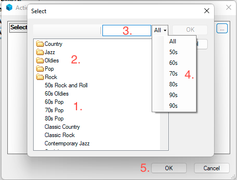
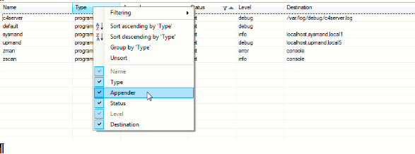

License, Copyright, and Trademark
The content contained in this repository is the intellectual property of Snap One, LLC, (formerly known as Wirepath Home Systems, LLC), and use without a valid license from Snap One is strictly prohibited. The user of this repository shall keep all content contained herein confidential and shall protect this content in whole or in part from disclosure to any and all third parties except as specifically authorized in writing by Snap One.
License and Intellectual Property Disclaimer
The content in this repository is provided in connection with Snap One products. No license, express or implied, by estoppal or otherwise, to any intellectual property rights is granted by this document or in this repository. Except as provided in Snap Oneʼs terms and conditions for the license of such products, Snap One and its affiliates assume no liability whatsoever and disclaim any express or implied warranty, relating to the sale and/or use of Snap One products including liability or warranties relating to fitness for a particular purpose, merchantability, or infringement of any patent, copyright or other intellectual property right. Snap One products are not intended for use in medical, lifesaving, or life sustaining applications.
Information regarding third-party products is provided solely for educational purposes. Snap One is not responsible for the performance or support of third-party products and does not make any representations or warranties whatsoever regarding the quality, reliability, functionality or compatibility of these products. The reader is advised that third parties can have intellectual property rights that can be relevant to this repository and the technologies discussed herein, and is advised to seek the advice of competent legal counsel regarding the intellectual property rights of third parties, without obligation of Snap One.
Snap One retains the right to make changes to this repository or related product specifications and descriptions in this repository, at any time, without notice. Snap One makes no warranty for the use of this repository and assumes no responsibility for any errors that can appear in the repository nor does it make a commitment to update the content contained herein.
Copyright
Copyright 2023 Snap One, LLC. All rights reserved.
The above copyright notice applies to all content in this repository unless otherwise stated explicitly herein that a third-party’s copyright applies.
No part of this publication may be reproduced, photocopied, stored on a retrieval system, or transmitted without the express written consent of the publisher.
Trademarks
Snap One and Snap One Logo, Control4 and the Control4 logo, and DriverWorks are trademarks or registered trademarks of Snap One, LLC. Other product and company names mentioned in this repository may be the trademarks or registered trademarks of their respective owners.
Derivative Works
To the extent that you create any “Derivative Work” (meaning any work that is based upon one or more preexisting versions of the work provided to you in this repository, such as an enhancement or modification, revision, translation, abridgement, condensation, expansion, collection, compilation or any other form in which such preexisting works may be recast, modified, transformed or adapted, explicitly including without limitation, any updates or changes to Snap One, LLC’s software code or intellectual property) such Derivative Work shall be owned by Snap One, LLC and all right, title and interest in and to each such Derivative Work shall automatically vest in Snap One, LLC. To the extent any Derivative Work does not automatically vest in Snap One, LLC by operation of law, you hereby assign such Derivative Work to Snap One, LLC with full title guarantee. Snap One, LLC shall have no obligation to grant you any right in any such Derivative Work.
Contact Us
Snap One, LLC 11734 S. Election Road Salt Lake City, UT 84020 USA
Introduction
The DriverWorks Fundamentals Guide is intended to provide an overview of the fundamental components that make up a device driver as well as the architectural layers that a device driver must interact with. As a driver developer, you are tasked with implementing this “interaction”. Successful driver developers build drivers that not only handle numerous dependencies placed on their driver code – but also seek out ways to enhance a device’s capabilities in an automated environment. This level of interaction manifests itself as seamless device integration, a high level of device controllability and ultimately - a quality end user experience. This is something we refer to as the Control4 Interoperability Model.
Beginning with O.S. 3.4.0, Control4 has delivered a set of new Driver Development Templates and a utility called JumpStart to accelerate your driver development efforts. The use of these templates assumes knowledge of the content included in this guide. Please see the driver template repository for more information on how to leverage these templates:
https://github.com/snap-one/drivers-template-code-public
What’s New in the Fundamentals Guide
What’s New in 3.4.2
There were no modifications to the Fundamentals Guide in conjunction with O.S. Release 3.4.2.
What’s New in 3.4.1
There were no modifications to the Fundamentals Guide in conjunction with O.S. Release 3.4.1.
What’s New in 3.4.0
History Event Notifications
Beginning with O.S. 3.4.0, drivers can provide a better experience for users receiving Event Push Notifications on smartphones or tablets. Users can now view these notifications and, if desired, select the notification and be taken directly to the relevant content within the Control4 app. This removes the previous need to navigate through the app to find the relevant information.
What’s New in 3.3.2
There we no changes to The DriverWorks Fundamentals Guide in conjunction with O.S. 3.3.2.
What’s New in 3.3.1
There we no changes to The DriverWorks Fundamentals Guide in conjunction with O.S. 3.3.1.
What’s New in 3.3.0
Sorting Driver Elements
A new sort order driver element has been delivered that provides the ability to display Conditionals, Events and Commands in any desired order within the Programming area of ComposerPro.
Supported Command Parameter Types
A new section defining Command Parameter Types has been added to the guide.
Dynamic_List type for Commands
Support for DYNAMIC_LIST type parameters within a command has been included.
Driver Documentation
A new section has been added to the Fundamentals Guide detailing driver documentation. Specifically, this section includes the steps required to produce HTML driver documentation from markdown.
What’s New in 3.2.3
There were no changes to this content for Operating System 3.2.3
What’s New in 3.2.2
There were no changes to this content for Operating System 3.2.2.
What’s New in 3.2.1
There were no changes to this content for Operating System 3.2.1.
What’s New in 3.2.0
Sorting Conditionals in Programming
Driver writers now have the ability to order the way driver conditionals are displayed in the Programming area of ComposerPro. A new sort order XML driver element has been delivered that provides the ability to display conditionals in any desired order.
New Property: LINK
The new LINK property type allows you to provide a link to a resource which can be used to support your driver. Typically, this Property is used to link to a configuration page on a device. _
Driver Conditionals
In addition to updated content examples and explanations, the Conditionals section includes information on two new Conditional Types: Room and Device. The ability to generate Dynamic Conditionals is also included in O.S. 3.2.0.
Zigbee
Change to Zigbee Server-Side Cluster Management Starting with the release of Operating System 3.2.0, Control4 will change the way Zigbee Clusters are handled. Drivers that have previously relied on the ability of clusters to circumvent zserver and its processes will be impacted by this change and will not function as intended in OS 3.2.0 and going forward.
For example, consider the following sample Profile:
(HA Profile (0x0104)
Cluster A: Time (0x000A)
Cluster B: Basic (0x0000)
Cluster C: OTA Upgrade (0x0019)
Pre-OS 3.2.0, these clusters and others may have been partially handled by Control4's zserver. With the release of OS 3.2.0, Time, Basic and OTA clusters will be advertised as supported by Control4, via a MatchDescriptorRequest, on the HA Profile (0x0104) and will be entirely handled within zserver.
Note that there are two scenarios where zserver will pass a cluster un-handled directly to a driver. These are:
If the cluster that has the manufacturer-specific flag set, the cluster will be passed through to the driver, un-handled by zserver.
All clusters which are not supported by Control4, on the HA profile, will be passed through to the driver, un-handled by zserver.
To avoid unintended functionality, a review of your Zigbee driver(s) is recommended prior to the release of OS 3.2.0. The ability to send Zigbee Clusters directly to your driver will need to be handled at the device firmware level.
What was New in 3.1.3
Driver Agents
Beginning with O.S. Release 3.1.3, the SDK provides a stable enough platform for developing DriverWorks Agents in addition to device drivers. DriverWorks Agents provide third-party Driver Developers the ability to create agents which can be loaded into projects and used in customer homes.
Future Change to Zigbee Server-Side Cluster Management in OS 3.2.0
Starting with the upcoming release of Operating System 3.2.0, Control4 will change the way Zigbee Clusters are handled. Drivers that have previously relied on the ability of clusters to circumvent zserver and its processes will be impacted by this change and will not function as intended in OS 3.2.0 and going forward.
For example, consider the following sample Profile:
(HA Profile (0x0104) Cluster A: Time (0x000A) Cluster B: Basic (0x0000) Cluster C: OTA Upgrade (0x0019)
Pre-OS 3.2.0, these clusters and others may have been partially handled by Control4's zserver. With the release of OS 3.2.0, Time, Basic and OTA clusters will be advertised as supported by Control4, via a MatchDescriptorRequest, on the HA Profile (0x0104) and will be entirely handled within zserver.
Note that there are two scenarios where zserver will pass a cluster un-handled directly to a driver. These are:
If the cluster that has the manufacturer-specific flag set, the cluster will be passed through to the driver, un-handled by zserver.
All clusters which are not supported by Control4, on the HA profile, will be passed through to the driver, un-handled by zserver.
To avoid unintended functionality, a review of your Zigbee driver(s) is recommended prior to the release of OS 3.2.0. The ability to send Zigbee Clusters directly to your driver will need to be handled at the device firmware level.
Operating System 3.2.0 will include an OTA Upgrade API which will provide a driver based approach to device updates.
SQLite3 Database Information
Control4 has been delivering a SQLite3 library with its Lua distribution beginning with O.S Release 2.10.0. This library is delivered without the intention of being a third party developer resource. For this reason, Control4 does not provide an interface into the library and has no intention of providing an interface or supporting third party developers in efforts to utilize SQLite3. If the decision is made to use this database Control4 strongly encourages developers to familiarize themselves with the content available through sqlite.org and the LuaSQLite 3 wiki.
Several issues must be considered when using SQLite3. Please ensure that in your development efforts you avoid doing things that fall into the categories below and/or account for the limitations they can present:
SQLite3 utilizes a blocking API. This means that Director will be blocked while read/writing database files. Reads aren't generally a concern, but writes can be expensive. Especially when the transaction API is not used.
Access to the filesystem: driver developers should only open database(s) in their sandbox directory. Database files opened and/or placed elsewhere on the filesystem may have unintended consequences causing problems with the Control4 Operating System.
Database files will not be backed up with a project since the backup mechanism knows nothing about these files. This means data stored in the driver’s DB file will get lost if the controller is ever restored to default or migrated to a new controller.
The controller has limited disk space. It is important to be aware of the amount of data that driver developers collect/store and ensure that the DB doesn’t grow to a point where it will impact the controller’s disk space. This may mean that driver developers may need to have a mechanism for archiving data to off-controller storage and prune the local DB if they want to maintain historical data to the extent that the DB file size becomes too large.
What was New in 3.1.2
A Note to DriverEditor Users
Beginning with OS 3, Director no longer accepts connections on its unsecured port. Previously, DriverEditor 3.0.1 used that port. Control4 has not yet updated DriverEditor to use Director’s secure port for the debug connection. In the interim, the Lua Input window within Composer Pro is available to make code changes and test driver functionality. This method is useful in making point changes to the running code on the controller and also includes pasting and executing complete functions or even your entire driver, while you are developing.
An important caveat regarding this debug approach must be considered: The driver must be re-built the and updated with code changes before finishing the Lua debug window development. Any code changes made in the runtime environment will only last for the duration of the uptime of Director. As soon as Director is restarted, the driver will be reloaded from the copy on disk and changes will be lost.
What was New in 3.1.0
Driver Development Templates
The SDK now contains all of Control4's Driver Development Templates. These .c4z files and supporting documentation can be found at the root level of the SDK in Driver Templates folder. The Proxies supported with Driver Development Templates currently include:
- AV Switch
- Blind
- Camera
- Door Station
- DVD
- Lock
- Pool
- Projector
- Receiver
- Security
- Thermostat
- TV
What was New in O.S.3
Sample Drivers
Several new sample.c4z files have been included in this release of the SDK. These drivers can be located in the SDK under the root level or: DriverWorks SDK/Samples: They include:
Variable Parser driver which provides the ability to convert any variable on any device from one type to another. See the driver documentation for more information.
The dlna example driver demonstrates how to do DLNA discovery and control._
The generic-http driver demonstrates how to perform basic C4:url calls.
The dynamic list widget driver demonstrates the ability to generate Dynamic Lists based on driver code to support a proxy-less device.
The notification driver demonstrates how to implement push notifications of images in a driver.
Other:
New information regarding the use of the CUSTOM SELECT Property has been added.
Lua Conditional functionality has been enhanced for the number type. Two new options include the <minimum> and <maximum> tags to specify the range for the NUMBER type
An overview, usage section and examples on creating Universal Minidrivers has been added.
New information regarding persisting driver data has been added.
New information regarding limitations with signed bit integers in excess of 32 bits has been added to the Handling Binary Data section.
A new connection type has been added: Non-Binding Connection.
Beginning with OS 3, driver developers can leverage Lua's Just In Time compiler (LuaJIT).
New information regarding driver debug messaging and LuaJIT updates has been added to the Driver Update Considerations area.
The Device and Service Icon presentation content has been is updated in conjunction with OS 3. This includes new icon guidelines, design templates and instructions to assist with delivering the best experience across a variety of wallpapers and to ensure consistency across all icons within the interface. The new content can be found in the DriverWorks SDK at: DriverWorks SDK/Icon Templates directory.
Important Concepts and Terminology
Proxy Driver
A Proxy Driver is an interface to the Control4 system for a set of devices that have common functionality. For instance, most DVD disc changers have common controls such as PLAY, STOP, PAUSE, FAST FORWARD, etc. The disc changer proxy allows for a common user interface to control all disc changers. The Control4 system (Director) sends information to and receives information from the proxy drivers. The Proxy Drivers send information to and receive information from the Protocol Drivers.
Protocol Driver
Two similar devices may have the same functionality but utilize a very different command set. A protocol driver provides the device-specific information needed to communicate with the Control4 system. In the case of DriverWorks, the DriverWorks driver is the protocol driver. When combined with the device-specific.c4a file it provides the custom code necessary to implement the 2-way device driver.
Combo Driver
A Combo Driver refers to a driver that does not rely on a Control4 Proxy to provide a user interface displayed on Navigators. Rather, the driver’s UI is displayed within ComposerPro along with its defined variables, events and commands which are used for programming purposes.
A Combo Driver is designated as such within the driver’s XML using the <combo></combo> element. See the example to the right.
<combo>true</combo>
<proxies>
<proxy name=“combo_driver_name”>combo_driver_name</proxy>
</proxies>
The <combo> element tells Director that this driver does not use a proxy but provides its own UI within Composer.
Proxy Binding
The proxy driver and the protocol driver are connected together with what are called proxy bindings. The Control4 system sends general command such as PLAY, STOP, PAUSE, etc. to the proxy driver which is bound to the protocol driver. The protocol driver sends specific commands that the device understands to the device over its connected communication mechanism, IP, serial, etc.
.c4z File
Beginning with operating system 2.6.0, Control4 changed the file structure previously used to support device drivers. Up until 2.6.0, device driver were contained within a single-level file using the extension of .c4i or: drivername.c4i
The release of 2.6.0 marked a significant change to this model with the introduction of the .c4z file structure or: drivername.c4z. A .c4z file provides all of the content that the .c4i file previously did. However, it offers some significant features and advantages that its predecessor did not.
At its most basic level, a .c4z file is a zip file. It contains numerous folders and files which, when encapsulated in a .c4z file, represent a device driver. The modularity within the .c4z file makes for a far more organized and structured approach to device driver architecture. It also provides the ability to include many related objects within the confines of the driver in an organized manner.
See Understanding .c4z Driver Files for information regarding Control4's latest driver file architecture.
Communication Protocol
The Control4 system can communicate with various devices over several different communication protocols. A device may be controlled using an Internet Protocol (IP), a serial connection, ZigBee, or an IR emitter. DriverWorks supports connectivity to devices using only serial and/or IP protocols.
Lua
Lua is a powerful, fast, light-weight and embeddable scripting language that combines simple procedural syntax with powerful data description constructs based on associative arrays and extensible semantics. DriverWorks contains an embedded Lua interpreter. Lua is dynamically typed, runs by interpreting bytecode for a register-based virtual machine, and has automatic memory management with incremental garbage collection. All of these features combine to make it ideal for configuration, scripting, and rapid prototyping. You can find out more about Lua at: http://www.lua.org
Lua IDE
When creating a Lua driver, you may find it helpful to have a working version of Lua with an integrated development environment (IDE) installed on your PC in order to test your Lua functions and ensure they work as expected before you embed them in a .c4z file and attempt to load them into your project using Composer. There are numerous Lua IDEs available that will accomplish this. A simple Internet search for "Lua IDE" will return numerous options.
Driver Development Terminology
Actions - Actions are similar to device specific commands. However, they are primarily intended to be used during driver installation and configuration. They can only be activated on the Actionstab in Composer and are not available for programming within the system.
Android Navigator – A graphical interface displayed on devices running the Android OS platform.
Capabilities - Capabilities are defined in a proxy and referenced in protocol drivers. They represent typical functionality and physical characteristics found in devices of a given device class. Values for each Capability are entered in a protocol driver and then in-turn are exposed to the Proxy. This enables the proxy driver to determine what capabilities are supported by the device defined by the protocol.
Combo Driver – A standalone driver that does not bind itself to a Control4 proxy. User interaction is accomplished through programming, events and bindings. A Navigator UI is not provided for combo drivers.
Command – A command comes from the Control4 system and its destination is a device or a driver.
Config - The config area of a protocol driver contains all of the device specific configuration properties. The Lua code is also incorporated into the Config section.
Connections - Connections are the bindings defined in a driver and used within the Control4 system. Generally speaking, they are visible through Composer. In the case of AV, Control and Room bindings – they are reported to the proxy driver when they are bound together in a project.
Connection Class - Connection class information is defined inside each connection instance – within the connections code block of a driver. A connection class lists the physical data or signal type that a specific connection can to transmit.
Director - Director is the software platform that runs on all Control4 controllers. It communicates with device drivers in a manner that enforces a standardized API which hides the complexity of a huge array of different systems and protocols. It also uses that communication to serve up various user interfaces that are displayed on a wide variety of navigation devices.
Driver – A term used to describe files used in the Control Operating System. They are text-based files that have an extension of .c4i or .c4z. Several types of drivers exist including proxy drivers, protocol drivers, combo drivers and multi-proxy drivers.
iOS Navigator - A graphical interface displayed on devices running the iOS platform.
List Navigator – A text based Navigator instance that is used on Control4 Remote controls.
Multi-Proxy Driver – A Protocol driver that has dependencies upon several proxies. A receiver driver is good example of this. While the protocol driver for a Sony receiver is certainly device specific – it relies upon several proxies such Tuner and DVD in addition to the Receiver proxy.
Navigator – Refers to an instance of the Control4 UI running on a device.
Navigator Device – Refers to any device that is running a version of the Control4 Navigator. This includes TVs (onscreen navigator), touchscreens, remote controls, etc.
Navigator UI – A user interface that is graphically displayed on devices or may also refer to a text-based user interface as in List Navigator on remote controls.
Notification – Notifications are updates sent to the Control4 system that communicate status or update changes. These notifications may come from a device or the driver.
Programming UI – A user interface that does not utilize a graphical or text based user interface. This is usually implemented through programming, button presses, timers or events.
Properties - DriverWorks Properties, as defined in the .c4i file, are exposed in the Composer System Design interface on the Properties tab. Properties are data values which are used within your driver. These are initialized in the driver code and also may be configured through the Composer Properties page for your driver. Property data types include:
Protocol – Protocols contain the definition for a specific device. They are composed of functionality that is unique to a specific device.
Protocol Driver – An implementation of the protocol in the form of a driver (.c4i) file. When this driver is added to a Control4 Automation system, device control is dictated by the functions defined in the protocol by the device manufacturer. User Interaction with the device is accomplished through system programming such as button presses and events. The UI is provided by one or possibly several of the proxies. In most instances of driver development, the driver developer will be creating a protocol driver.
Proxy – A Proxy contains the definition for a specific class of device. Proxies are composed of the most common examples of functionality for each device class. The use of a proxy provides a common interface between the Control4 Navigator UI and a device driver. Proxies are pre-defined and supplied by Control4.
Proxy Binding Id - A proxy binding id is a numerical value that is assigned to each proxy used within a protocol driver. It is a unique reference that can be utilized in the protocol driver code. . This id value is used often when sending data and ensures that the correct proxy-data relationship is always enforced.
Proxy Driver – An implementation of a proxy in the form of a driver (.c4i) file. When this file is included in a Control4 Automation system, device control includes that of the pre-defined functionality provided in the proxy. User interaction is provided through a Control4 Navigator interface.
UI – User Interface. General term referring to the manner in which a user interfaces with the Control4 system.
Understanding .c4z Drivers
Overview
Beginning with operating system 2.6.0, Control4 has changed the file structure previously used to support device drivers. Up until 2.6.0, device driver were contained within a single-level file using the extension of .c4i or: drivername.c4i
The release of 2.6.0 marked a significant change to this model with the introduction of the .c4z file structure or: drivername.c4z. A .c4z file provides all of the content that the .c4i file previously did. However, it offers some significant features and advantages that its predecessor did not.
At its most basic level, a .c4z file is a zip file. It contains numerous folders and files which, when encapsulated in a .c4z file, represent a device driver. The modularity within the .c4z file makes for a far more organized and structured approach to device driver architecture. It also provides the ability to include many related objects within the confines of the driver in an organized manner.
These objects include items such as graphics and icon directories to support custom user interfaces which can run on Navigator. A .c4z file also contains a .lua file which contains all of the driver’s lua code. It has its own .xml directory as well to separate the XML portion of a driver from the .lua code. Also, rich text documentation can be included in the .c4z to support a far superior user assistance model.
The image below is a look into a .c4z file at its root level:
You’ll notice several files at the root level of the .c4z which were described in the section above. The www folder must contain the documentation file to support the driver.
This is an architectural change implemented with the release of OS 2.8.1.
This is the driver’s overview and configuration documentation that integrators will see displayed in ComposerPro and ComposerExpress. Note that the inclusion of the .RTF file in the .c4z ensures that the information is displayed in ComposerPro only. In order for your documentation to be displayed in ComposerExpress, you will need to also enclose the text within the <documentation> XML tags in the .c4z file.
For example: <documentation file="doc.rtf"> This is text that will appear in Composer Express. </documentation>
Using this structure, ComposerPro will load the RTF documentation file and ignore the text between the XML tags. Composer Express, which can't display RTF documentation, will display the text documentation within the XML tags.
Below that is the .lua file that contains all of the .lua code for the driver. It is possible to have multiple .lua files included in the .c4z file. For example, here is an opened .c4z file for a pool controller:
As you can see, this .c4z contains numerous .lua files. In order for all of the .lua files to be recognized not just by DriverEditor but Director as well - the use of the Lua require function is needed. The required Function loads and runs libraries. All of the .lua files that need to be included in .c4z file are identified in the .c4z file's driver. lua file. If we open the pool controller's driver.lua file we see this:
In the example above, the file names are surrounded by quotation marks. The required Function uses the global variable LUA_PATH to find the file. This variable is defined as LUA_PATH = C4System; Driver. Based on this, Director will look for the .lua file on the controller first, The LUA_PATH environment on the controller is: /control4/drivers/lua/?.lua;
As each driver contains its own environment the LUA_PATH for each driver would be:
LUA\_PATH=/control4/drivers/lua/?.lua;/etc/c4i/test\_driver\_name/?.lua
The required Function can also navigate a path to the .lua file if it is defined. For example:
require "/usr/local/lua/pool\_init.lua"
When Director loads this .c4z file it will load all of the required .lua files into memory as one large .lua file and execute based on the contents of the assembled file.
Lua files can be included in a .c4z, defined using the require Function and still be excluded when DriverPackager assembles the final .c4z. This is useful in the event that a .lua file was included for testing purposes but is not needed when the final .c4z is delivered. This is handled in the .c4zproj file. Specifically, with the exclude parameter. For example, say a test.lua file was included in our .c4z, but is not needed when the driver is delivered. The .c4zproj file would look like the example to the right:
<Items>
<Item type="dir" name="www" recurse="true"/>
<Item type="dir" name="common" c4zDir="Common"/>
<Item type="dir" name="tests" exclude="true"/>
<Item type="file" name="driver.xml"/>
<Item type="file" name="squish.lua" />
<Item type="file" name="foo1.lua" />
<Item type="file" name="foo2.lua" />
<Item type="file" name="library.lua" c4zDir="Common"/>
<Item type="file" name="test.lua" exclude="true"/>
</Items>
Note the test.lua line with exclude set to True. This is will prevent this file from being packaged by DriverPackager.
Next we can see another driver file. This contains all of the XML that was previously found between the \<devicedata\> tags of a .c4i file. These are elements such as \<creator\>, \<name\>, \<model\>, \<manufacturer\>, \<identify\_image\>, \<identify\_text\> and so on.
If we open the www directory we see the following:
As mentioned above, a c4z file can contain graphical elements to support the driver’s use in Navigator. When opened, the icons folder for this driver looks like this:
The icons directory contains all of the images, organized by their resolutions, which are displayed during the use of the driver. The images in this particular driver are found under the root level of “www” placing them within the .c4z in this manner makes them accessible from via the controller’s web server. For example, accessing an image can be accomplished by appending the .c4z icon path to a URL such as:
http://urlstring/driver/drivername/icons/20x20/driverimage.png
or
http://127.0.0.1/driver/myc4zdriver/icons/20X20/driverimage.png
The other directory file found under this driver’s www directory is the languages folder. This folder contains all of the .po files used for localizing this driver.
Going forward, any .lua-based driver will be expected to be delivered in the .c4z format. To facilitate the conversion of previously built .c4i files to the new .c4z format, control4 has delivered a utility called DriverPackager. DriverPackager accomplishes two significant tasks for the developer. These include:
- XML Validation
- Assembles the .c4z
Identifying a .c4z Driver
The ability to specify a unique driver identification image and instructional text can be defined in the <config> XML section of your .c4z driver.
<devicedata>
...
<config>
<identify_text>Insert how to identify here</identify_text>
<identify_image>my_identify.gif</identify_image>
</config>
...
</devicedata>
Both the text string and the .gif are pulled from the .c4z file at the relative path specified in the driver. In the example above they would just be in the root of the c4z.
For identify images, .gifs are recommended as they can be animated. However, other image formats are supported.
C4:AllowExecute API
The C4:AllowExecute API is a function which dictates whether or not the lua window in ComposerPro can be used to view debugging content or exercising functions within a driver.
C4:AllowExecute defaults to false which locks the driver’s Lua execute and output window. If a driver is encrypted, C4:AllowExecute defaults to locked (False).
Entering the following in the driver’s Lua execute window will lock the lua window: C4:AllowExecute(false).
However, if this API is set to true the lua command window is unlocked and supports execution of data and results being displayed in the lua output window.
A more preferable approach to using the API is to create an Action that can change the command dynamically.
The C4:AllowExecute API is evoked in OnDriverInit or OnDriverEarlyInit.
SquishLua and Driver Encryption
All .lua files included in a .c4z file must be squished prior to encryption. This is accomplished using Squish Lua. Squish is a tool that can pack many individual Lua scripts and their modules into a single Lua script. Whether or not Squish is run on the .lua files inside of a .c4z file is defined in the .c4z project file. In the example project file to the right you can see that the squishLua parameter has a value of "true." With this setting, Driver Packager will squish all of the .lua files before encryption. This is a requirement for successful driver encryption.
<Driver type="c4z" name="sample" squishLua="true" >
<Items>
<Item type="dir" name="www" recurse="true" />
<Item type="dir" name="common" c4zDir="Common" />
<Item type="dir" name="tests" exclude="true" />
<Item type="file" name="driver.xml"/>
<Item type="file" name="squish.lua" />
<Item type="file" name="foo1.lua" />
<Item type="file" name="foo2.lua" />
<Item type="file" name="library.lua" c4zDir="Common" />
<Item type="file" name="readme.txt" exclude="true" />
</Items>
The first line of the .proj file contains the following:
Driver type – This must be “c4z” for the manifest to be valid.
name – This is the name of the driver in quotes without its extension.
squishLua – Must be set to “true” or “false”. It defaults to a value of "false." There are two options when encrypting a driver: encrypt a single Lua file or Squish all Lua files into one file and encrypt it. Squish is a tool that packs many individual Lua scripts and their modules into a single Lua script. A file called “squishy” must be created for the squish tool. This file contains all of the Lua files to be included in the squished file. Here is an example of a basic squishy file:
Main "driver.lua"
- Module "module1"
- Module "module2"
- Module "common.command" "common/command.lua"
- Module "common.common" "common/common.lua"
- Module "common.diagnostics" "common/diagnostics.lua"
Output "squished.lua"
Next you’ll notice the <Items></Items> section:
Item type - Must be “dir” or “file”. This specifies if the item is a file or a directory. “dir” creates a folder 'name' and adds all immediate files beneath 'name' to the c4z. “file” adds file 'name' to the c4z.
Item name - Name of folder or file to be added to c4z.
recurse - Optional. Only applicable to type 'dir' items. Must be "true" or "false", default is "false" if not specified. If "true", recursively adds all files beneath 'name' to c4z.
c4zDir - Optional. The name of the c4z folder where the 'dir' or 'file' item is added.
exclude - Optional. Must be "true" of "false", default is "false" if not specified. This specifies if an item is excluded from the c4z.
Usage Notes
Driver Encryption
To encrypt a driver, the driver.xml script tag must include the encryption attribute set to “2”. Additionally, the file attribute needs to point to the main file that should be encrypted; in the example below it is the output of the squishy file:
<script jit="1" encryption="2" file="lua/squished.lua"/>
Driver Packager
Driver Packager is a Python utility used to create individual .c4z files from source code. When Driver Packager assembles a .c4z file and the the encryption attribute for the script tag in the driver.xml file is set to “2”, the file is encrypted using a new and improved encryption protocol based on an asymmetrical public key infrastructure. This level of encryption is applicable to .c4z files only.
For more information please see: https://github.com/control4/drivers-driverpackager
For more information regarding luajit, please see: https://snap-one.github.io/docs-driverworks-fundamentals/#control4-os-3-and-luajit
Replacing a .c4i file with .c4z
An XML element has been included to support the replacement of an existing driver.c4i file with a new driver.c4z. An example of the <replaces> element is to the right:
<replaces>
<replace>driver.c4i</replace>
</replaces>
This element is included in the .c4z driver.xml file. It is optional and if used, requires at least one instance of replace containing the .c4i file name. Once the .c4z is loaded, Director will remove the .c4i file from the project. Note that the .c4i file is also removed from the local driver database of Composer Pro. This occurs without warning. The .c4i file is then marked as "Obsolete" upon driver searches. Obsolete drivers cannot be loaded into a project.
What is a .c4zproj File
As described in the Understanding .c4z Files, a .c4z file is a zipped filed consisting of several directories and numerous files that (when zipped together) represent a device driver. DriverEditor views these assembled files as a "Project." When a .c4z file is imported or opened through the DriverEditor environment, a corresponding .c4zproj file is created. For example, let's assume the driver you wish to import into DriverEditor resides at:
C:\Users\username.CONTROL4\Documents\Control4\Drivers
This the Control4 system default location for DriverWorks drivers. The example directory looks like this:
If we import the HelloWorld.c4z file into the Driver Editor environment, we can go back and see that a new directory has been created:
The HelloWorld File Folder was created by DriverEditor. All of the changes made to the .c4z file through DriverEditor will be made to this directory. If we open the new Hello World folder we'll find this:
Note the addition of the HelloWorld.c4zproj file. This file allows DriverEditor to assemble, encrypt, name the .c4z file along with defining several other file level functions. If we open the .c4zproj file we'd find the example to the right:
<Driver type="c4z" name="sample" squishLua="true" Encryption="True/False">
<Items>
<Item type="dir" name="www" recurse="true"/>
<Item type="dir" name="common" c4zDir="Common"/>
<Item type="dir" name="tests" exclude="true"/>
<Item type="file" name="driver.xml"/>
<Item type="file" name="squish.lua"/>
<Item type="file" name="foo1.lua"/>
<Item type="file" name="foo2.lua"/>
<Item type="file" name="library.lua" c4zDir="Common"/>
<Item type="file" name="readme.txt" exclude="true"/>
</Items
</Driver>
The first line of the proj file contains the following: Driver type – This must be “c4z” for the manifest to be valid.
name – This is the name of the driver in quotes without its extension.
squishLua – Must be set to “true” or “false”. It defaults to a value of "false." There are two options when encrypting a driver: encrypt a single Lua file or Squish all Lua files into one file and encrypt it. Squish is a tool that packs many individual Lua scripts and their respective modules into a single Lua script. A file called “squishy” must be created for the squish tool. This file contains all of the Lua files to be included in the squished file. Here is an example of a basic squishy file:
Main "driver.lua"
- Module "module1"
- Module "module2"
- Module "common.command" "common/command.lua"
- Module "common.common" "common/common.lua"
- Module "common.diagnostics" "common/diagnostics.lua"
Output "squished.lua"
Encryption – Designates whether or not the driver will be encrypted or not.
Next you'll notice the <Items></Items> section: Item type - Must be “dir” or “file”. This specifies if the item is a file or a directory. “dir” creates a folder 'name' and adds all immediate files beneath 'name' to the c4z. “file” adds file 'name' to the c4z.
Item name - Name of folder or file to be added to c4z.
recurse - Optional. Only applicable to type 'dir' items. Must be "true" or "false", default is "false" if not specified. If "true", recursively adds all files beneath 'name' to c4z.
c4zDir - Optional. The name of the c4z folder where the 'dir' or 'file' item is added.
exclude - Optional. Must be "true" of "false", default is "false" if not specified. This specifies if an item is excluded from the c4z.
DriverWorks and luajit
Control4 OS 3 and LuaJIT
Prior to OS 3, Control4 loaded drivers into the controller environment using the Lua run time compiler known as "standard Lua" or "PUC Lua". With the release of OS 3, support for Lua's Just In Time compiler (LuaJIT) has been added. Note that LuaJIT compatibility is an addition and not a replacement for PUC Lua. This means that driver modification is not a requirement for OS 3 compatibility. PUC Lua will continue to load previously released drivers as it has in the past.
Modifying a driver to use the LuaJIT compiler is worth consideration. LuaJIT is considerably faster that PUC Lua. The speed enhancement it provides offers a direct benefit to end users through increased responsiveness and scalability. This is particularly beneficial when considering your drivers deployment into larger systems.
A considerable amount of information is available regarding LuaJIT on the Lua homepage and the LuaJIT wiki:
Modifying your Driver to use LuaJIT
Beginning with OS 3, Director looks for a LuaJIT XML attribute within the driver. If Director does not detect the presence of the attribute it loads it using the PUC Lua compiler. If a LuaJIT XML attribute is specified in driver.xml, it loads the driver using the LuaJIT compiler.
In order for your driver to be loaded using the LuaJIT compiler it will be necessary to modify your driver.xml to include the LuaJIT XML attribute in the driver's XML code. This attribute is added to the driver's script XML element. A value of "1" specifies that the driver should be loaded with LuaJIT. A value of "0" (or lack of the attribute altogether) will result in PUC Lua loading the driver. For example:
Driver loads using LuaJIT: <script encryption="2" file="driver.lua" jit="1"/>
Driver loads using PUC Lua: <script encryption="2" file="driver.lua" jit="0"/>
After your driver has been modified to include the LuaJIT XML attribute and it contains a value of "1" a restart of Director is required. Director will then attempt to load the driver using LuaJIT. If LuaJIT indicates that syntax errors occurred during the load process Director will destroy the driver instance and then reload the driver using the PUC Lua compiler.
Note: There is no fall back to using the PUC Lua compiler for drivers that were initially loaded using LuaJIT. This means that if a driver has errors it will fail to load - even if it may load successfully using PUC Lua.
Driver Debug Messaging Considerations and LuaJIT
Beginning with OS 3, the ability to send debug Lua messages upon a driver failing to update has changed. Sending Lua debug messages are determined on how the driver's properties are set. When a driver is updated from using the previous PUC Lua compiler to LuaJIT, the driver's state and properties are temporarily lost. This is also true if a driver is updated involves going from LuaJIT to PUC Lua. The state and properties are not restored until the driver has loaded successfully. During this time frame, driver debug messages are not sent. The following are use cases to consider regarding this:
Driver updating from PUC to PUC.
This is a driver that was initially loaded with PUC and the updated driver likewise loads with PUC. There is no "jit" attribute applied to the driver script. In this case, the same driver instance is reused and the driver will function as it did prior to 3.x.
Driver updating from PUC to LuaJIT:
This is a driver that was initially loaded with PUC and the updated driver expects to load with LuaJIT. The specified "jit" attribute has been applied to the driver script. In this case, the old driver instance is destroyed and then re-loaded with LuaJIT. In doing so, all of the driver properties that set for this driver are temporarily lost. This results in the following two scenarios: If the driver loads successfully all of the properties & state data is restored. If the driver fails to load successfully, the LuaJIT instance is abandoned and then reloaded with PUC Lua. The properties & state data is restored after the driver loads. Debug Lua messaging is impacted.
Driver updating from LuaJIT to LuaJIT:
This is a driver that was initially loaded with LuaJIT and the updated driver likewise loads with LuaJIT. The specified "jit" attribute has been applied to the driver script. In this case,an attempt is made to re-use the same driver instance. This results in the following two scenarios: If the driver loads successfully, then this will function as it did prior to 3.x. If the driver fails to load, the LuaJIT instance is abandoned and reloaded with PUC. When this happens, all of the properties that are set for the driver are temporarily lost. The properties & state data is restored after the driver loads. Debug Lua messaging is impacted.
Areas Where your Driver May Fail
As mentioned above, Director will abandon attempts to load a driver with LuaJit and fallback to PUC Lua when syntax errors occur during the loading of the driver. However, the presence of other run-time errors will prevent a driver from working properly within LuaJIT. If this occurs, the driver’s Lua code will need to be updated to resolve the Lua syntax errors or the driver.xml should not specify that the driver is supported in LuaJIT.
Many of these errors result from LuaJit's compatibility requirement with the Lua 5.1 language standard. PUC Lua is compatible with version 5.0. Two common errors that are seen in Control4 device drivers include the use of invalid arguments and invalid escape strings:
Invalid Arguments:
In the Lua 5.1 language standard the pseudo-argument arg is no longer supported. Drivers loaded using LuaJit that contain the argument will fail with a run-time error and not be loaded. The following list shows some examples of 5.0 arg use and how they can be modified to be 5.1 compatible:
| 5.0 Syntax | 5.1 Syntax |
|---|---|
#arg |
select("#", ...) |
arg.n |
select("#", …) |
unpack.(arg) |
unpack({...}) |
Replacements for individual arg syntax lines will resolve this issue. However, it may be more effective to convert the vararg into a local variable named 'arg' at the beginning of the function where the arg parameter is used. See the example to the right:
function test(...)
local arg = {...}
-- Now all the arg-based code will work properly again...
print(#arg)
for i = 1, #arg do
print(arg[i])
end
print(unpack(arg))
end
Invalid Escape Sequences
Also due to the Lua 5.1 language standard requirement, invalid escape sequences in Lua 5.0 are not supported by LuaJIT. This means that invalid escape sequences which were previously handled by PUC Lua are not handled by LuaJIT. The resulting error will prevent a driver from successfully loading or running.
The following table shows two examples of 5.0 escape sequences and how to fix them to meet the 5.1 language standard:
| 5.0 Syntax |
|---|
string.gsub(s, '\"\;', '"') |
string.match(C4:GetVersionInfo().version, '(%d+)\.(%d+)\.(%d+)\.(%d+)') |
| 5.1 Syntax |
|---|
string.gsub (s, '%"%;' , '"') string.gsub (s, '"' , '"') |
string.match(C4:GetVersionInfo().version, '(%d+)%.(%d+)%.(%d+)%.(%d+)') |
The Lua 5.1 Language Manual details its incompatibilities with previous versions. For more information see Section #7 of the manual here: http://www.lua.org/manual/5.1/manual.html
Order Dependency in Lua Tables
As best practice, Control4 recommends against the use of Lua Tables that depend on consistency with regard to the ordering of pairs. It is important to understand that LuaJIT does not iterate through a table of functions in the same way that PUC Lua does. For example, consider a table of functions that is iterated through using OnDriverInit() with the code to the right:
for k,v in pairs(PROTOCOL_DECLARATIONS) do
if (PROTOCOL_DECLARATIONS[k] ~= nil and type(PROTOCOL_DECLARATIONS[k]) == "function") then
print(k,v)
PROTOCOL_DECLARATIONS[k]()
end
end
There is no guarantee that that order of iteration through this table will be the same in LuaPUC and LuaJIT. A dependency on order in the table will likely result in a run-time Lua error.
Identifying Related Entries in the Driver Debug logs
When Director attempts to load a driver it reports various errors and conditions to both the director.log and the driver_debug.log or:
/var/log/debug/director.log
/mtn/internal/log/driver_debug.log
Note that the director.log rotates out its content frequently so driver errors are quickly lost. However, driver_debug.log should have very little content and will likely be easier to inspect. driver_debug.log resides in a different directory as it is not cleared on controller reboots. By default, driver_debug_nl is set at Error level logging and won’t capture debug log statements. This can be changed to capture debug level for development testing with the following command: sysman log driver_debug_nl debug
For further information regarding system logging, please see the System Manager Logging information.
For reference, a list of sample load conditions and their respective log entries follows:
Condition : A Lua driver loaded successfully with LuaJIT
Sample Entry:
2018-10-10 12:34:56.789 -0600 ea5-000DEADBEEF [1234] DEBUG: Lua driver loaded successful with LuaJIT [id: 42][name: HeloWorld Driver][file: HeloWorld.c4z]
Condition : A Lua driver loaded successful with LuaJIT, but there are runtime errors:
Sample Entry :
2018-10-10 12:34:56.789 -0600 ea5-000DEADBEEF [1234] ERROR: Lua driver loaded with LuaJIT but there were one, or more, runtime errors. This driver may not function correctly [id: 42][name: HeloWorld Driver][file: HeloWorld.c4z]
Condition : A Lua driver failed to load with LuaJIT due to syntax errors. Director will proceed to reload the driver with PUC Lua:
Sample Entry :
2018-10-10 12:34:56.789 -0600 ea5-000DEADBEEF [1234] ERROR: Lua driver failed to load with LuaJIT; retrying with PUC Lua [id: 42][name: HeloWorld Driver][file: HeloWorld.c4z]
Condition : A Lua driver loaded successfully with PUC Lua:
Sample Entry :
2018-10-10 12:34:56.789 -0600 ea5-000DEADBEEF [1234] DEBUG: Lua driver loaded successfully with PUC Lua [id: 42][name: HeloWorld Driver][file: HeloWorld.c4z]
Condition : A Lua driver loaded successfully with PUC Lua, but there are runtime errors:
Sample Entry : 2018-10-10 12:34:56.789 -0600 ea5-000DEADBEEF [1234] ERROR: Lua driver loaded with PUC Lua but there were one, or more, runtime errors. This driver may not function correctly [id: 42][name: HeloWorld Driver][file: HeloWorld.c4z]
Driver Validation using DriverValidator
Driver Validator is a DriverWorks SDK compiled Python utility used to validate .c4z files. This section will explain how to execute the utility from a command line to validate a driver's LuaJit compatibility.
An example of executing drivervalidator against a driver called HelloWorld.c4z would be:
-d "C:\\Users\username\Documents\Control4\Drivers\Hello World\Hello World.c4z" -v 1 -1 8
In the example above, the -d is required followed by the path to the .c4z file that will be validated. The verbosity level (-v 1) is set with a value of 1 or 2. A value of 1 is least and 2 is most. The example above shows a verbosity level of least. In the example above (-v 1 -1 8) the value of 8 is passed for a logging level of DEBUG. Logging level values are passed as follows:
WARN = 1
FATAL = 2
FAIL = 3
ERROR = 4
PASS = 5
INFO = 6
NOT_IMPLEMENTED -= 7
DEBUG = 8
Selecting a logging level will include all log entries for it and any entries for logging levels lower than it. For example, selecting a log level of ERROR will log all Error entries as well as FAIL, FATAL and WARN. The NOT IMPLEMENTED log level is has been included for driver certification testing purposes. This log level is useful in identifying instances where a test routines have been created for driver code, but the driver being validated has not implemented that code.
Proxies and Proxy Types
Single and Multi-Proxies
Most devices will require the use of only a single proxy. Be sure to choose the correct proxy type for your device. When using a single proxy, your .c4z can specify the proxy using a simple declaration in the .c4i file. For example:
<proxy>discchanger</proxy>
or
<proxy>TV</proxy>
If you decide to not use an existing proxy and create one; you should specify the proxy with the same name as the .c4z filename. Your driver will not show up for selection within Composer if your proxy name is not a valid proxy type for the Control4 system and doesn’t match your .c4i filename.
Alternatively, even for a single proxy driver, you may choose to use the more complete declaration as in the first two examples to the right:
<proxies>
<proxy proxybindingid="5001">discchanger</proxy>
</proxies>
<proxies>
<proxy proxybindingid="5001">~tv~</proxy>
</proxies>
This is also the format used with multi-proxy devices as seen in the remaining examples:
<proxies>
<proxy proxybindingid="5001">tuner</proxy>
<proxy proxybindingid="5002">tuner</proxy>
<proxy proxybindingid="5003">tunerXM</proxy>
</proxies>
<proxies>
<proxy proxybindingid="5001">receiver</proxy>
<proxy proxybindingid="5002">tuner</proxy>
<proxy proxybindingid="5003">tunerXM</proxy>
<proxy proxybindingid="5004">dvd</proxy>
<proxy proxybindingid="5005">tunerXM</proxy>
</proxies>
Each proxy within a driver is given a binding ID in the <connections> section of the .c4z. If you have multiple proxies of the same type you’ll need to explicitly state the proxybinding id for each proxy. The proxy binding ID is included in every command received from the system for your DriverWorks driver.
If you have any questions about how to define the proxy or proxies for a specific device type, you might find it helpful to refer to an existing driver. Proxies are defined in the same way for DriverWorks and for non-DriverWorks drivers.
Modifying the Default Naming of Proxies
When a device is added to a project within Composer, the name of the device displayed in the project is inherited from the device proxy. It is possible modify the name for a proxy that will be displayed in composer. This is especially useful when a proxy includes several “devices” . The name can be changed in the proxies section of the driver. In the example to the right, a thermostat has been renamed. Instead of the device being identified in composer as “Thermostat” it will now be displayed as “Carrier Infinity Thermostat”.
<proxies qty="1">
<proxy proxybindingid="5001" name="Carrier Infinity Thermostat">~thermostat</proxy>
</proxies>
Commands
Commands come from the Device Proxy. For example, a AV Switch might have the following section in the XML of the .c4z file:
<commands>
<command>
<name>MAIN_ZONE_ON</name>
<description>MAIN_ZONE_ON</description>
</command>
<command>
<name>MAIN_ZONE_OFF</name>
<description>MAIN_ZONE_OFF</description>
</command>
<command>
<name>ZONE2_ON</name>
<description>ZONE2_ON</description>
</command>
<command>
<name>ZONE2_OFF</name>
<description>ZONE2_OFF</description>
</command>
<command>
<name>ZONE3_ON</name>
<description>ZONE3_ON</description>
</command>
<command>
<name>ZONE3_OFF</name>
<description>ZONE3_OFF</description>
</command>
<command>
<name>ZONE4_ON</name>
<description>ZONE4_ON</description>
</command>
<command>
<name>ZONE4_OFF</name>
<description>ZONE4_OFF</description>
</command>
</command>
Supported Command Parameter Types
Custom Select
<command>
<name>Select Channel</name>
<description>Select Channel PARAM1</description>
<sort_order>9</sort_order>
<params>
<param>
<name>Channel</name>
<type>CUSTOM_SELECT:SelectChannelParamSelect</type>
</param>
</params>
</command>
The ability of a Proxy driver to deliver a browse-able list of related elements can be supported through the use of the CUSTOM_SELECT property.
These lists could represent stations, channels or actual media. The elements delivered in the list can then be used as parameter in a command.
In order for this property to work, a command needs to be created in the <devicedata><config> section of the c4z driver.xml file. This command must include the CUSTOM_SELECT parameter type. For example, here is a command called SelectChannelParamSelect.
In the SelectChannel example above, SelectChannel is the command name that is sent to the ExecuteCommand function in the driver. The param type CUSTOM_SELECT allows for the specification of a global .lua function that will be invoked whenever ComposerPro wants to get data. In the example to the right, it is the function SelectChannelParamSelect.
Device Selector
<command>
<name>DEVICE_SELECTOR Parameter Example</name>
<description>NAME DEVICE_SELECTOR Value: PARAM1</description>
<sort_order>6</sort_order>
<params>
<param>
<name>DEVICE_SELECTOR</name>
<type>DEVICE_SELECTOR</type>
<items>
<item>pool.c4i</item>
<item>camera.c4i</item>
<item>blind.c4i</item>
<item>camera.c4i</item>
<item>controller.c4i</item>
<item>doorstation.c4i</item>
<item>light_v2.c4i</item>
<item>lock.c4i</item>
<item>media.c4i</item>
<item>tv.c4i</item>
<item>uidevice.c4i</item>
<item>thermostatV2.c4i</item>
<item>driver_properties.c4z</item>
</items>
<multiselect>true</multiselect>
</param>
</params>
</command>
The Device Selector command parameter type supports the Device Selector property. This is a property that can be added to a DriverWorks driver. Device Selector allows you (as the driver developer) to display a list of devices that may be associated with the driver you have developed. These devices can then be selected from within composer.
In order for this property to work, a command needs to be created in the <devicedata><config> section of the c4z driver.xml file. This command must include the DEVICE_SELECTOR_ parameter type.
Dynamic List
<command>
<name>DYNAMIC_LIST Parameter Example</name>
<description>DYNAMIC_LIST Value: PARAM1</description>
<sort_order>4</sort_order>
<params>
<param>
<name>DYNAMIC_LIST</name>
<type>DYNAMIC_LIST</type>
</param>
</params>
</command>
The Dynamic List command parameter type supports the ability to use the Dynamic List Property. This property provides ability to include driver-based, dynamically updated lists in ComposerPro’s Advanced Properties screen.
In order for this property to work, a command needs to be created in the <devicedata><config> section of the c4z driver.xml file. This command must include the DYNAMIC_LIST_ parameter type.
Note: The driver must implement a function called GetCommandParamList that returns a table with the list for the specified parameter.
List
<command>
<name>LIST Parameter Example</name>
<description>NAME LIST Value: PARAM1</description>
<sort_order>3</sort_order>
<params>
<param>
<name>LIST</name>
<type>LIST</type>
<items>
<item>Item 1</item>
<item>Item 2</item>
<item>Item 3</item>
<item>Item 4</item>
</items>
</param>
</params>
</command>
The List command parameter type supports the ability to provide a non-dynamic list of selectable objects within the Properties tab in ComposerPro.
In order for this property to work, a command needs to be created in the <devicedata><config> section of the c4z driver.xml file. This command must include the LIST parameter type.
Ranged Float
<command>
<name>RANGED_FLOAT Parameter Example</name>
<description>NAME RANGED_FLOAT Value: PARAM1</description>
<sort_order>1</sort_order>
<params>
<param>
<name>RANGED_FLOAT</name>
<type>RANGED_FLOAT</type>
<minimum>50</minimum>
<maximum>60</maximum>
</param>
</params>
</command>
The Ranged Float command parameter type supports the ability to provide a range of selectable floating-point or non-integer numbers within the Properties tab in ComposerPro.
In order for this property to work, a command needs to be created in the <devicedata><config> section of the c4z driver.xml file. This command must include the RANGED_FLOAT_ parameter type.
Ranged Integer
<command>
<name>RANGED_INTEGER Parameter Example</name>
<description>NAME RANGED_INTEGER Value: PARAM1</description>
<sort_order>0</sort_order>
<params>
<param>
<name>RANGED_INTEGER</name>
<type>RANGED_INTEGER</type>
<minimum>79</minimum>
<maximum>120</maximum>
</param>
</params>
</command>
The Ranged Integer command parameter type supports the ability to provide a range of selectable integers within the Properties tab in ComposerPro.
In order for this property to work, a command needs to be created in the <devicedata><config> section of the c4z driver.xml file. This command must include the RANGED_INTEGER_ parameter type
String
<command>
<name>STRING Parameter Example</name>
<description>NAME STRING Value: PARAM1</description>
<sort_order>2</sort_order>
<params>
<param>
<name>STRING</name>
<type>STRING</type>
</param>
</params>
</command>
The STRING command parameter type supports the ability to provide a read only string within the Properties tab in ComposerPro.
In order for this property to work, a command needs to be created in the <devicedata><config> section of the c4z driver.xml file. This command must include the STRING_ parameter type
Variable Selector
<command>
<name>VARIABLE_SELECTOR Parameter Example</name>
<description>Param Values NAME (boolean: PARAM1, P2: PARAM2, P3: PARAM3, P4: PARAM4, P5: PARAM5, P6: PARAM6, P7: PARAM7, P8: PARAM8)</description>
<sort_order>7</sort_order>
<params>
<param>
<name>boolean VARIABLE_SELECTOR</name>
<type>VARIABLE_SELECTOR</type>
<variabletype>boolean</variabletype>
</param>
<param>
<name>string VARIABLE_SELECTOR</name>
<type>VARIABLE_SELECTOR</type>
<variabletype>string</variabletype>
</param>
<param>
<name>number VARIABLE_SELECTOR</name>
<type>VARIABLE_SELECTOR</type>
<variabletype>number</variabletype>
</param>
<param>
<name>float VARIABLE_SELECTOR</name>
<type>VARIABLE_SELECTOR</type>
<variabletype>float</variabletype>
</param>
<param>
<name>device VARIABLE_SELECTOR</name>
<type>VARIABLE_SELECTOR</type>
<variabletype>device</variabletype>
</param>
<param>
<name>media VARIABLE_SELECTOR</name>
<type>VARIABLE_SELECTOR</type>
<variabletype>media</variabletype>
</param>
<param>
<name>user VARIABLE_SELECTOR</name>
<type>VARIABLE_SELECTOR</type>
<variabletype>user</variabletype>
</param>
<param>
<name>all VARIABLE_SELECTOR</name>
<type>VARIABLE_SELECTOR</type>
<variabletype>all</variabletype>
</param>
</params>
</command>
The Variable Selector command parameter type supports the ability to choose a variable type within the Properties tab in ComposerPro. Supported Variable Types include:
- boolean
- string
- number
- float
- device
- media
- user
- room
Variable Selector Value
<command>
<name>VARIABLE_SELECTOR_VALUE Parameter Example</name>
<description>Param Values NAME(P1: PARAM1, P2: PARAM2, P3: PARAM3, P4: PARAM4, P5: PARAM5, P6: PARAM6)</description>
<sort_order>8</sort_order>
<params>
<param>
<name>boolean VARIABLE_SELECTOR_VALUE</name>
<type>VARIABLE_SELECTOR_VALUE</type>
<variabletype>boolean</variabletype>
</param>
<param>
<name>string VARIABLE_SELECTOR_VALUE</name>
<type>VARIABLE_SELECTOR_VALUE</type>
<variabletype>string</variabletype>
</param>
<param>
<name>number VARIABLE_SELECTOR_VALUE</name>
<type>VARIABLE_SELECTOR_VALUE</type>
<variabletype>number</variabletype>
</param>
<param>
<name>float VARIABLE_SELECTOR_VALUE</name>
<type>VARIABLE_SELECTOR_VALUE</type>
<variabletype>float</variabletype>
</param>
<param>
<name>device VARIABLE_SELECTOR_VALUE</name>
<type>VARIABLE_SELECTOR_VALUE</type>
<variabletype>device</variabletype>
</param>
<param>
<name>media VARIABLE_SELECTOR_VALUE</name>
<type>VARIABLE_SELECTOR_VALUE</type>
<variabletype>media</variabletype>
</param>
</params>
</command>
GetCommandParamList
This function is required in order for a driver to use the DYNAMIC_LIST type parameters within a <command>.
Signature
GetCommandParamList ()
| Parameter | Description |
|---|---|
| str | commandName |
| str | paramName |
Returns
Returns a table with the list for the specified parameter.
Example
function GetCommandParamList(commandName, paramName)
local tList = {}
if (commandName == "Turn On") then
if (paramName == "Zone") then
tList = {"Main", "Master", "Upstairs", "Downstairs", "Patio"}
elseif (paramName == "Level") then
tList = {"Low", "Medium", "High"}
end
elseif (commandName == "Toggle" and paramName == "Zone") then
tList = {"Main", "Patio"}
end
return (tList)
end
Dynamic List type for Commands
Support for DYNAMIC_LIST type parameters within a <command>. The driver must implement a function called GetCommandParamList that returns a table with the list for the specified parameter.
This feature was introduced in O.S. Release 3.3.0
Example
<command>
<name>Turn On</name>
<description>Turn on PARAM1 to PARAM2</description>
<params>
<param>
<name>Zone</name>
<type>DYNAMIC_LIST</type>
</param>
<param>
<name>Level</name>
<type>DYNAMIC_LIST</type>
</param>
</params>
</command>
<command>
<name>Toggle</name>
<description>Toggle PARAM1</description>
<params>
<param>
<name>Zone</name>
<type>DYNAMIC_LIST</type>
</param>
</params>
</command>
Sorting Commands in ComposerPro
The ability to order the way driver commands are displayed in the Programming area of ComposerPro is possible with the use of a sort order driver XML tag:
<command>
<name>New Command</name>
<description>New Description</description>
<sort_order>0</sort_order>
</command>
<command>
<name>New Command 1</name>
<description>Command Description 1</description>
<sort_order>1</sort_order>
</command>
<command>
<name>New Command 2</name>
<description>Command Description 2</description>
<sort_order>2</sort_order>
</command>
<command>
<name>New Command 3</name>
<description>Command Description 3</description>
<sort_order>3</sort_order>
</command>
<command>
<name>New Command 4</name>
<description>Command Description 4</description>
<sort_order>4</sort_order>
</command>
<command>
<name>New Command 5</name>
<description>Command Description 10</description>
<sort_order>5</sort_order>
</command>
<sort_order></sort_order>
The tag accepts a zero based list and will display the commands in the order of the number included in each commands’ <sort_order></sort_order>tag.
For example, in the XML code to the right there are five device specific commands. They will display in ComposerPro Programming as:
- New Command
- New Command 1
- New Command 2
- New Command 3
- New Command 4
- New Command 5
Considerations when Sorting Commands
- Sort Order numbering must be a positive number (including 0). The list is sorted in numerical order.
- If a sort order number value is used twice, the second Command using the same value will not be displayed.
- When defining Commands that will use the Sort Order element, all of the Commands must include a numeric value. Failing to provide a sort order number for one Command will result in none of the Commands being sorted. For example, if you have ten Commands defined in your driver and one of them is missing the sort order element - none of the Commands will be sorted.
Conditionals
Overview
Driver conditionals are useful to include in your driver as they provide the opportunity for custom programming through the interface found in ComposerPro. When considering conditionals, it’s helpful to think of them as “If” programming statements. For example, a light driver may have a simple conditional defined for when the light is in the On state. Using this conditional can then support programming in the project that will be executed if the light is On.
Conditionals are defined in the driver’s XML area within the conditionals tag. See the example to the right:
1. <conditionals>
2. <conditional>
3. <id>0</id>
4. <name>SIMPLE_LIGHT_ON</name>
5. <type>SIMPLE</type>
6. <condition_statement>The light is on</condition_statement>
7. <description>NAME is On</description>
8. </conditional>
9. </conditionals>
Conditional Types
Conditionals are not just limited to the simple example provided above. Currently there are seven types of conditionals that can be included in your driver. They vary in complexity and each are intended to provide a specific programming opportunity. They include:
LIST: Asks if the current device value is equal to or not equal to the selected item in a list of values defined in the driver. These values can be numbers or strings.
STRING: Asks if the current device value provided in string format is equal to or not equal to a string value entered in ComposerPro programming by the integrator.
NUMBER: Uses the following operators: =, !=, <, <=, >, >= to compare the current device value with an integer entered in ComposerPro programming by the dealer.
BOOLEAN: Asks a True/False question based on True/False text provided by the driver conditional configuration.
SIMPLE: Asks a true or false question.
ROOM: Provides the ability to initiate programming based on whether or not a room selection is equal to or not equal to a room in the project.
DEVICE: Provides the ability to initiate programming based on whether or not a device selection is equal to or not equal to a device in the project.
A Note about Loops Before detailing each of the conditionals listed above, it’s worth noting the role of Loops in ComposerPro programming. Loops offer another opportunity of custom programming for your driver. ComposerPro will use the XML for the conditionals you’ve defined in your driver and replicate them under their own Loops programming tab. All of your conditionals, and their respective functionality, are listed under the Loops tab exactly as they are under the conditionals tab. However, Loops differ from conditionals in that they can be considered as “While” programming statements.
Above we looked at a simple light on conditional example. When ComposerPro creates a Loop based on this conditional, it provides a programming opportunity that can be used while the light is in the On state. Using this Loop supports programming in the project that will be executed while the light is On.
As mentioned above, ComposerPro created these Loops from your driver’s conditional XML code. As a driver writer, you need to do nothing for Loops to be available for use in ComposerPro. However, it is worth considering that Loops can be resource expensive as they will continue to execute throughout the duration that a device is in a certain state. If your conditional code lends itself to the potential of this happening addressing this in your driver documentation is strongly recommended.
Simple Conditional
Understanding XML in a SIMPLE Type Conditional
Your conditional XML code must be defined in a manner that can be used by ComposerPro. In this section, we’ll define a SIMPLE type conditional called SIMPLE_LIGHT_ON. In doing so we’ll look at each line of XML required to define this type of conditional to the right:
1. <conditionals>
2. <conditional>
3. <id>0</id>
4. <name>SIMPLE_LIGHT_ON</name>
5. <type>SIMPLE</type>
6. <condition_statement>The light is on</condition_statement>
7. <description>NAME is On</description>
8. </conditional>
9. </conditionals>
Line 1: <conditionals></conditionals>
This is the driver’s root XML tag that contains all the driver’s conditional code.
Line 2: <conditional></conditional>
XML tag for this unique conditional.
Line 3: <id></id>
The conditional’s numeric ID value. It is recommended that conditionals be numbered beginning with 0. All conditionals require a unique numeric ID.
Line 4: <name></name>
The name of the conditional. This is a unique name defined by the driver writer. It is used in the TestCondition function in the Lua code of the driver. This is given as the first parameter to the TestCondition function. This is how the driver knows what condition is being tested.
Line 5: <type></type>
The type of the conditional as defined above in the Conditional Types section.
Line 6: <condition_statement></condition_statement>
The conditional statement states a question being asked regarding a state of the driver. This is the statement that is shown before the condition logic. For example, the Simple Light On conditional above, the question being asked is if ‘The Light is on’. It is basically a useful statement that supports the conditional. When an integrator is viewing this driver’s conditionals in ComposerPro, they can select “The Light is on” from the list of conditionals and can ultimately initiate programming when the light is in the On state.
Line 7: <description></description>
The description element needs to contain the NAME macro. NAME is a key value that is equivalent to your driver’s unique name. Every conditional needs to include NAME. ComposerPro treats the NAME macro in your conditional XML in a way that replaces it with your driver’s unique name. The unique name is formatted by the name of the room where the driver resides followed by “->”, followed by the name of the driver as it is named in the project. For example, consider that the name of our example driver is “Living Room Lamp” and it is in the Living Room. Based on this, “Living Room->Living Room Lamp” will replace NAME when your conditional programming description is displayed in the conditionals window and the script actions area of ComposerPro. Using the example above, ComposerPro will display the description XML element as: “If Living Room->Living Room Lamp is on”.
Conditional XML Example Code
Previously, we discussed how to define a SIMPLE type conditional. The remainder of this document will explain each of the conditional types listed above in the same manner. An XML code set defining these conditionals is referenced throughout. The conditional code examples in the XML are based on an example Light driver. This "driver code” is for explanation purposes only. Typically, the Light Proxy would be used in this case. However, this example explains how Conditionals are not only defined but can be useful for drivers that need to offer them when they are not provided in the scope of a Control4 Proxy. The sample XML from the “driver” is shown to the righ:
1. <conditionals>
2. <conditional>
3. <id>0</id>
4. <name>SIMPLE_LIGHT_ON</name>
5. <type>SIMPLE</type>
6. <condition_statement>The light is on</condition_statement>
7. <description>NAME is On</description>
8. </conditional>
9. <conditional>
10. <id>1</id>
11. <name>SIMPLE_LIGHT_OFF</name>
12. <type>SIMPLE</type>
13. <condition_statement>The light is off</condition_statement>
14. <description>NAME is Off</description>
15. </conditional>
16. <conditional>
17. <id>2</id>
18. <name>BOOL_LIGHT</name>
19. <type>BOOL</type>
20. <condition_statement>Light is</condition_statement>
21. <description>NAME Light is STRING</description>
22. <true_text>On</true_text>
23. <false_text>Off</false_text>
24. </conditional>
25. <conditional>
26. <id>3</id>
27. <name>BOOL_LIGHT_ON</name>
28. <type>BOOL</type>
29. <condition_statement>Light is On</condition_statement>
30. <description>NAME Light is On is STRING</description>
31. <true_text>True</true_text>
32. <false_text>False</false_text>
33. </conditional>
34. <conditional>
35. <id>4</id>
36. <name>NUMBER_LIGHT_LEVEL</name>
37. <type>NUMBER</type>
38. <condition_statement>Light Level</condition_statement>
39. <description>NAME is LOGIC INTEGER</description>
40. <minimum>10</minimum>
41. <maximum>150</maximum>
42. </conditional>
43. <conditional>
44. <id>5</id>
45. <name>STRING_LIGHT</name>
46. <type>STRING</type>
47. <condition_statement>Light Level</condition_statement>
48. <description>NAME Level is LOGIC STRING</description>
49. </conditional>
50. <conditional>
51. <id>6</id>
52. <name>LIST_LIGHT_LEVEL</name>
53. <type>LIST</type>
54. <condition_statement>Light Level</condition_statement>
55. <description>NAME is LOGIC STRING</description>
56. <items>
57. <item>10%</item>
58. <item>20%</item>
59. <item>30%</item>
60. <item>40%</item>
61. <item>50%</item>
62. <item>60%</item>
63. <item>70%</item>
64. <item>80%</item>
65. <item>90%</item>
66. <item>100%</item>
67. </items>
68. </conditional>
70. <conditional>
71. <id>7</id>
72. <name>ROOM_SELECTION</name>
73. <type>ROOM</type>
74. <condition_statement>[7-ROOM] Room Selection is</condition_statement>
75. <description>[7] NAME Room Selection LOGIC ROOM</description>
76. </conditional>
77. <conditional>
78. <id>8</id>
79. <name>DEVICE_SELECTION</name>
80. <type>DEVICE</type>
81. <condition_statement>[8-DEVICE] Device Selection is</condition_statement>
82. <description>[8] NAME Device Selection LOGIC DEVICE</description>
83. </conditional>
84.</conditionals>
Note: The order in which the conditionals defined in the XML will be reversed in their order of display in ComposerPro. For example, above theSIMPLE_LIGHT_ON conditional is defined first. It will display at the bottom of the conditional list in the Programming area of ComposerPro.
Using the Test Condition Function
Signature
TestCondition (name, tParams)
In order to evaluate the expression, the driver must implement the TestCondition function in their lua code.
| Parameter | Description |
|---|---|
| str | name: The name of the condition being tested. This is the name found in the <name> defined in the conditional xml. |
| table | tParam: Table of parameters. This varies depending on the Conditional Type <type> tag as defined in the conditional xml. |
Conditional Types:
- SIMPLE: empty table
- BOOL: empty table
- NUMBER: table of two name/value pairs:
- tParams “VALUE” contains the INTEGER macro value of the code item in programming.
- tParams “LOGIC” contains the LOGIC macro value of the code item in programming. Possible LOGIC values are: EQUAL, NOT_EQUAL, LESS_THAN, LESS_THAN_OR_EQUAL, GREATER_THAN, GREATER_THAN_OR_EQUAL.
You may use C4:EvaluateExpression to simplify the evaluation of the LOGIC field.
STRING: table of two name/value pairs:
tParams[“VALUE”] contains the STRING macro value of the code item in programming.
tParams[“LOGIC”] contains the LOGIC macro value of the code item in programming. Possible LOGIC values are EQUAL and NOT_EQUAL.
You may use C4:EvaluateExpression to simplify the evaluation of the LOGIC field.
LIST: table of two name/value pairs:
tParams[“VALUE”] contains the STRING macro value of the code item in programming.
tParams[“LOGIC”] contains the LOGIC macro value of the code item in programming. Possible LOGIC values are EQUALand NOT_EQUAL._
You may use C4:EvaluateExpressionn to simplify the evaluation of the LOGIC field.
ROOM: table of two name/value pairs
tParams[“VALUE”] contains the room id of the ROOM macro value of the code item in programming.
tParams[“LOGIC”] contains the LOGIC macro value of the code item in programming. Possible LOGIC values are EQUALand NOT_EQUAL.
You may use C4:EvaluateExpression to simplify the evaluation of the LOGIC field.
DEVICE: table of two name/value pairs
tParams[“VALUE”] contains the device id of the DEVICE macro value of the code item in programming.
tParams[“LOGIC”] contains the LOGIC macro value of the code item in programming. Possible LOGIC values are EQUALand NOT_EQUAL.
You may use C4:EvaluateExpression to simplify the evaluation of the LOGIC field.
Returns
The function must return a Boolean value. If the expression results to true then return true, otherwise return false.
Sample TestCondition function
function TestCondition(name, tParams)
local retVal = false
if (name == "SIMPLE_LIGHT_ON") then
retVal = (gLightLevel > 0)
elseif (name == "SIMPLE_LIGHT_OFF") then
retVal = (gLightLevel == 0)
elseif (name == "BOOL_LIGHT_ON") then
local logic = tParams["LOGIC"]
local value = tParams["VALUE"]
retVal = (value == "On")
elseif (name == "BOOL_LIGHT") then
local value = tParams["VALUE"]
if (value == "On") then
retVal = gLightLevel > 0
elseif (value == "Off") then
retVal = gLightLevel == 0
end
elseif (name == "NUMBER_LIGHT_LEVEL") then
local logic = tParams["LOGIC"]
local value = tonumber(tParams["VALUE"])
retVal = C4:EvaluateExpression(logic, gLightLevel, value)
elseif (name == "STRING_LIGHT") then
local logic = tParams["LOGIC"]
local value = tonumber(tParams["VALUE"])
retVal = C4:EvaluateExpression(logic, gLightLevel, value)
elseif (name == "LIST_LIGHT_LEVEL") then
local logic = tParams["LOGIC"]
local strValue = tParams["VALUE"]
local value = tonumber(string.match(strValue,"(%d.+).+"))
LogTrace("value = " .. value)
retVal = C4:EvaluateExpression(logic, gLightLevel, value)
elseif (name == "ROOM_SELECTION") then
local logic = tParams["LOGIC"]
local strValue = tParams["VALUE"]
retVal = C4:EvaluateExpression(logic, someRoomId, value)
elseif (name == "DEVICE_SELECTION") then
local logic = tParams["LOGIC"]
local strValue = tParams["VALUE"]
retVal = C4:EvaluateExpression(logic, someDeviceId, value)
end
LogTrace("c4test: Result = " .. tostring(retVal))
return retVal
end
Understanding XML in a LIST Type Conditional
In this section, we’ll define a LIST type conditional called LIST_LIGHT_LEVEL. LIST type conditionals provide a list of values which can be selected for use in programming. Here is the example XML code used to define this type of conditional:
50. <conditional>
51. <id>6</id>
52. <name>LIST_LIGHT_LEVEL</name>
53. <type>LIST</type>
54. <condition_statement>Light Level</condition_statement>
55. <description>NAME is LOGIC STRING</description>
56. <items>
57. <item>10%</item>
58. <item>20%</item>
59. <item>30%</item>
60. <item>40%</item>
61. <item>50%</item>
62. <item>60%</item>
63. <item>70%</item>
64. <item>80%</item>
65. <item>90%</item>
66. <item>100%</item>
67. </items>
68. </conditional>
Line 50: <conditional></conditional>
XML tag for this unique conditional.
Line 51: <id></id>
The conditional’s numeric ID value. It is recommended that conditionals be numbered beginning with 0. All conditionals require a unique numeric ID.
Line 52: <name></name>
The name of the conditional. This is a unique name defined by the driver writer. It is used in the TestCondition function in the Lua code of the driver. This is given as the first parameter to the TestCondition function. This is how the driver knows what condition is being tested.
Line 53: <type></type>
The type of the conditional as defined above in the Conditional Types section.
Line 54: <condition_statement></condition_statement>
The conditional statement states a question being asked regarding a state of the driver. This is the statement that is shown before the condition logic. For example, the LIST_LIGHT_LEVEL conditional above, the question being asked is if the current device value is equal to or not equal to the selected item in a list of values defined in the driver. It is basically a useful statement that supports the conditional. When an integrator is viewing this driver’s conditionals in ComposerPro, they can select a value from the list of values defined in the driver and initiate programming when the light is in the at the level selected.
Line 55: <description></description>
The description element needs to contain the NAME macro. NAME is a key value that is equivalent to your driver’s unique name. Every conditional needs to include NAME. ComposerPro treats the NAME macro in your conditional XML in a way that replaces it with your driver’s unique name. The unique name is formatted by the name of the room where the driver resides followed by “->”, followed by the name of the driver as it is named in the project. For example, consider that the name of our example driver is “Living Room Lamp” and it is in the Living Room. Based on this, “Living Room->Living Room Lamp” will replace NAME when your conditional programming description is displayed in the conditionals window and the script actions area of ComposerPro. Using the example above, ComposerPro can display the description XML element as: “If Living Room->Living Room Lamp is 50%” Note the use of the LOGIC STRING statement in the description XML. This provides the ability for an integrator to select any of the logic operators and apply that operator to the selected value. Operators include: =, !=, <, <=, >, >=.
Line 56: <items></items>
The items element contains a list of values which can be numerical or strings that are displayed in the list in ComposerPro. Integrators can choose a value from the list along with any of the logic operators to complete the programming for the conditional.
Understanding XML in a STRING Type Conditional
In this section, we’ll define a STRING type conditional called STRING_LIGHT. STRING type conditionals provide values (in string format) which can be selected for use in programming. Here is the example XML code used to define this type of conditional:
43. <conditional>
44. <id>5</id>
45. <name>STRING_LIGHT</name>
46. <type>STRING</type>
47. <condition_statement>Light Level</condition_statement>
48. <description>NAME Level is LOGIC STRING</description>
49. </conditional>
50. <conditional>
Line 43: <conditional></conditional>
XML tag for this unique conditional.
Line 44: <id></id>
The conditional’s numeric ID value. It is recommended that conditionals be numbered beginning with 0. All conditionals require a unique numeric ID.
Line 45: <name></name>
The name of the conditional. This is a unique name defined by the driver writer. It is used in the TestCondition function in the Lua code of the driver. This is given as the first parameter to the TestCondition function. This is how the driver knows what condition is being tested.
Line 46: <type></type>
The type of the conditional as defined above in the Conditional Types section.
Line 47: <condition_statement></condition_statement>
The conditional statement states a question being asked regarding a state of the driver. This is the statement that is shown before the condition logic. For example, in the STRING_LIGHT conditional above, the question being asked is: Is the device value equal to or not equal to a string value entered in ComposerPro programming by the integrator. It is basically a useful statement that supports the conditional. When an integrator is viewing this driver’s conditionals in ComposerPro, they can enter a string value for this conditional and ultimately initiate programming when the device state is equal to or not equal to the value entered.
Line 48: <description></description>
The description element needs to contain the NAME macro. NAME is a key value that is equivalent to your driver’s unique name. Every conditional needs to include NAME. ComposerPro treats the NAME macro in your conditional XML in a way that replaces it with your driver’s unique name. The unique name is formatted by the name of the room where the driver resides followed by “->”, followed by the name of the driver as it is named in the project. For example, consider that the name of our example driver is “Living Room Lamp” and it is in the Living Room. Based on this, “Living Room->Living Room Lamp” will replace NAME when your conditional programming description is displayed in the conditionals window and the script actions area of ComposerPro. Using the example above, ComposerPro can display the description XML element as: “If Living Room->Living Room Lamp is 100%” where the string value of 100 is entered by the integrator. Note the use of the LOGIC STRING statement in the description XML. This provides the ability for an integrator to select two of the logic operators and apply that operator to the selected value. Operators for the STRING type conditional include: =, !=
Understanding XML in a NUMBER Type Conditional
In this section, we’ll define a NUMBER type conditional called NUMBER_LIGHT_LEVEL. NUMBER type conditionals compare the current device value with an integer entered in ComposerPro programming by the integrator. This comparison can use the following operators: =, !=. Here is the example XML code used to define this type of conditional:
34. <conditional>
35. <id>4</id>
36. <name>NUMBER_LIGHT_LEVEL</name>
37. <type>NUMBER</type>
38. <condition_statement>Light Level</condition_statement>
39. <description>NAME is LOGIC INTEGER</description>
40. <minimum>10</minimum>
41. <maximum>150</maximum>
42. </conditional>
Line 34: <conditional></conditional>
XML tag for this unique conditional.
Line 35: <id></id>
The conditional’s numeric ID value. It is recommended that conditionals be numbered beginning with 0. All conditionals require a unique numeric ID.
Line 36: <name></name>
The name of the conditional. This is a unique name defined by the driver writer. It is used in the TestCondition function in the Lua code of the driver. This is given as the first parameter to the TestCondition function. This is how the driver knows what condition is being tested.
Line 37: <type></type>
The type of the conditional as defined above in the Conditional Types section.
Line 38: <condition_statement></condition_statement>
The conditional statement states a question being asked regarding a state of the driver. This is the statement that is shown before the condition logic. For example, in the NUMBER_LIGHT_LEVEL conditional above the question being asked is: Is the device value equal to or not equal to a numeric value entered in ComposerPro programming by the integrator. It is basically a useful statement that supports the conditional. When an integrator is viewing this driver’s conditionals in ComposerPro, they can enter a numeric value for this conditional and ultimately initiate programming when the device state is equal to or not equal to the number entered.
Line 39: <description></description>
The description element needs to contain the NAME macro. NAME is a key value that is equivalent to your driver’s unique name. Every conditional needs to include NAME. ComposerPro treats the NAME macro in your conditional XML in a way that replaces it with your driver’s unique name. The unique name is formatted by the name of the room where the driver resides followed by “->”, followed by the name of the driver as it is named in the project. For example, consider that the name of our example driver is “Living Room Lamp” and it is in the Living Room. Based on this, “Living Room->Living Room Lamp” will replace NAME when your conditional programming description is displayed in the conditionals window and the script actions area of ComposerPro. Using the example above, ComposerPro can display the description XML element as: “If Living Room->Living Room Lamp is = 75%” where the numeric value of 75 is entered by the integrator. Note the use of the LOGIC STRING statement in the description XML. This provides the ability for an integrator to select two of the logic operators and apply that operator to the selected value. Operators for the STRING type conditional include: =, !=
Understanding XML in a BOOLEAN Type Conditional
In this section, we’ll define a Boolean type conditional called BOOL_LIGHT. BOOLEAN type conditionals ask a True/False question based on True/False text provided by the driver conditional configuration. Programming is completed by the integrator responding to the True/False question by making response selections in the programming window. Here is the example XML code used to define this type of conditional:
16. <conditional>
17. <id>2</id>
18. <name>BOOL_LIGHT</name>
19. <type>BOOL</type>
20. <condition_statement>Light is</condition_statement>
21. <description>NAME Light is STRING</description>
22. <true_text>On</true_text>
23. <false_text>Off</false_text>
24. </conditional>
Line 16: <conditional></conditional>
XML tag for this unique conditional.
Line 17: <id></id>
The conditional’s numeric ID value. It is recommended that conditionals be numbered beginning with 0. All conditionals require a unique numeric ID.
Line 18: <name></name>
The name of the conditional. This is a unique name defined by the driver writer. It is used in the TestCondition function in the Lua code of the driver. This is given as the first parameter to the TestCondition function. This is how the driver knows what condition is being tested.
Line 19: <type></type>
The type of the conditional as defined above in the Conditional Types section.
Line 20: <condition_statement></condition_statement>
The conditional statement states a question being asked regarding a state of the driver. This is the statement that is shown before the condition logic. For example, in the BOOL_LIGHTconditional above, the question being asked involves whether or not the Light is On or Off. It is basically a useful statement that supports the conditional. When an integrator is viewing this driver’s conditionals in ComposerPro, they can select an On or Off value and ultimately initiate programming based on that selection.
Line 21: <description></description>
The description element needs to contain the NAME macro. NAME is a key value that is equivalent to your driver’s unique name. Every conditional needs to include NAME. ComposerPro treats the NAME macro in your conditional XML in a way that replaces it with your driver’s unique name. The unique name is formatted by the name of the room where the driver resides followed by “->”, followed by the name of the driver as it is named in the project. For example, consider that the name of our example driver is “Living Room Lamp” and it is in the Living Room. Based on this, “Living Room->Living Room Lamp” will replace NAME when your conditional programming description is displayed in the conditionals window and the script actions area of ComposerPro. Using the example above, ComposerPro can display the description XML element as: “If Living Room->Living Room Lamp is Off” where the Off value was selected by the integrator.
Line 22: <true_text></true_text>
Line 23: <false_text></false_text>
Note the use of the <*_text> XML elements in this example. The values entered here will be the responses to the True/False questions asked by the conditional. Note that these values can be any string value. For example, to the right is another BOOLEAN conditional taken from the code sample above. It is called BOOL_LIGHT_ON and asks the question “If Living Room->Living Room Lamp is On”. The integrator can then select either of the text XML elements of “True” and “False” to complete programming.
25. <conditional>
26. <id>3</id>
27. <name>BOOL_LIGHT_ON</name>
28. <type>BOOL</type>
29. <condition_statement>Light is On</condition_statement>
30. <description>NAME Light is On is STRING</description>
31. <true_text>True</true_text>
32. <false_text>False</false_text>
33. </conditional>
Understanding XML in a DEVICE Type Conditional
In this section, we’ll define a Device type conditional called DEVICE_SELECTION. The DEVICE type conditional provides the ability to initiate programming based on whether or not a device selection is equal to or not equal to a device in the project. Programming is completed by the integrator through selecting a device from the drop-down list in Conditionals tab. The list will contain all of the Rooms in the project and their respective devices. Next, the integrator selects whether or not programming will be executed if the device selection is equal to or not equal to that device. This conditional uses the following operators: =, !=.
Here is the example XML code used to define this type of conditional:
77. <conditional>
78. <id>8</id>
79. <name>DEVICE_SELECTION</name>
80. <type>DEVICE</type>
81. <condition_statement>[8-DEVICE] Device Selection is</condition_statement>
82. <description>[8] NAME Device Selection LOGIC DEVICE</description>
83. </conditional>
Line 77: <conditional></conditional>
XML tag for this unique conditional.
Line 78: <id></id>
The conditional’s numeric ID value. It is recommended that conditionals be numbered beginning with 0. All conditionals require a unique numeric ID.
Line 79: <name></name>
The name of the conditional. This is a unique name defined by the driver writer. It is used in the TestCondition function in the Lua code of the driver. This is given as the first parameter to the TestCondition function. This is how the driver knows what condition is being tested.
Line 80: <type></type>
The type of the conditional as defined above in the Conditional Types section.
Line 81: <condition_statement></condition_statement>
The conditional statement states a question being asked regarding a state of the driver. This is the statement that is shown before the condition logic. For example, in the DEVICE_SELECTION conditional above, the question being asked is: Is the device value equal to or not equal to the device value selected in ComposerPro programming by the integrator. It is basically a useful statement that supports the conditional. When an integrator is viewing this driver’s conditionals in ComposerPro, they can select a device from the project and ultimately initiate programming when the device is equal to or not equal to the device selected in the Conditionals programming tab.
Line 82: <description></description> The description element needs to contain the NAME macro. NAME is a key value that is equivalent to your driver’s unique name. Every conditional needs to include NAME. ComposerPro treats the NAME macro in your conditional XML in a way that replaces it with your driver’s unique name. The unique name is formatted by the name of the room where the driver resides followed by “->”, followed by the name of the driver as it is named in the project. For example, consider that our driver name is Test Driver and the integrator selected a device named Light along with the not equals to operator. The Conditional statement formed in ComposerPro programming would be: If Theater -> Device Selection != Light
Note the use of the LOGIC STRING statement in the description XML. This provides the ability for an integrator to select two of the logic operators and apply that operator to the selected value. Operators for the Room type conditional include: =, !=.
Understanding XML in a ROOM Type Conditional
In this section, we’ll define a Room type conditional called ROOM_SELECTION. The ROOM type conditional provides the ability to initiate programming based on whether or not a room selection is equal to or not equal to a room in the project. Programming is completed by the integrator through selecting a room from the drop-down list in Conditionals tab. The list will contain all of the Rooms defined in the project. Next, the integrator selects whether or not programming will be executed if the room selection is equal to or not equal to that room. This conditional uses the following operators: =, !=.
Here is the example XML code used to define this type of conditional:
70. <conditional>
71. <id>7</id>
72. <name>ROOM_SELECTION</name>
73. <type>ROOM</type>
74. <condition_statement>[7-ROOM] Room Selection is</condition_statement>
75. <description>[7] NAME Room Selection LOGIC ROOM</description>
76. </conditional>
Line 70: <conditional></conditional>
XML tag for this unique conditional.
Line 71: <id></id>
The conditional’s numeric ID value. It is recommended that conditionals be numbered beginning with 0. All conditionals require a unique numeric ID.
Line 72: <name></name>
The name of the conditional. This is a unique name defined by the driver writer. It is used in the TestCondition function in the Lua code of the driver. This is given as the first parameter to the TestCondition function. This is how the driver knows what condition is being tested.
Line 73: <type></type>
The type of the conditional as defined above in the Conditional Types section.
Line 74: <condition_statement></condition_statement>
The conditional statement states a question being asked regarding a state of the driver. This is the statement that is shown before the condition logic. For example, in the ROOM_SELECTION conditional above, the question being asked is: Is the room value equal to or not equal to the room value selected in ComposerPro programming by the integrator. It is basically a useful statement that supports the conditional. When an integrator is viewing this driver’s conditionals in ComposerPro, they can select a room from the project and ultimately initiate programming when the room is equal to or not equal to the room selected in the Conditionals programming tab.
Line 75: <description></description>
The description element needs to contain the NAME macro. NAME is a key value that is equivalent to your driver’s unique name. Every conditional needs to include NAME. ComposerPro treats the NAME macro in your conditional XML in a way that replaces it with your driver’s unique name. The unique name is formatted by the name of the room where the driver resides followed by “->”, followed by the name of the driver as it is named in the project. For example, consider that our driver name is Test Driver and the integrator selected a room named Theater along with the equals operator. The Conditional statement formed in ComposerPro programming would be: If Theater -> Room Selection = Theater
Note the use of the LOGIC STRING statement in the description XML. This provides the ability for an integrator to select two of the logic operators and apply that operator to the selected value. Operators for the Room type conditional include: =, !=.
Creating Dynamic Driver Conditionals
All of the preceding conditional content has referred to statically created conditionals defined within the driver’s XML code. While the types and functionality of Dynamic Conditionals are identical to the static variety, they differ in that they are created dynamically by the driver. This is useful in instances where a driver conditionals are based off of the drivers properties or based off of the configuration of the device the driver is connected to.
For example, consider a Pool Controller where one model of the controller supports spa control and another model does not. One driver could be written for both models containing a has_spa property. If that property is selected in ComposerPro or the driver can query spa support, a conditional could be dynamically created to support spa control
When Composer generates the list of conditionals for the driver in Composer Pro programming, it first will create the static conditionals (defined in the xml of the driver). Once that is done it then needs to know about any dynamic conditionals the driver may have. This is handled through the function, GetConditionals. If the driver has defined the GetConditionals function, then that function is called. If the driver does not have any need for dynamic conditionals then there is no need to create the function.
GetConditionals()
Function that returns a table of information containing elements of conditionals that will be created dynamically in ComposerPro.
Parameters
None
| Returns | Value |
|---|---|
| table | Table containing all the configuration information for the dynamic conditionals of the driver. |
Dynamic conditionals support all the same types that are supported with static conditionals. The example below details all the conditional types previously defined above. The table, tConditionals, includes an example of each of those conditionals and the table elements required for that conditional to be created dynamically in Composer Pro. For example, the XML required to create a static SIMPLE Conditional Type looks like this:
1. <conditionals>
2. <conditional>
3. <id>10</id>
4. <name>SIMPLE_LIGHT_ON</name>
5. <type>SIMPLE</type>
6. <condition_statement>The light is on</condition_statement>
7. <description>NAME is On</description>
8. </conditional>
9. </conditionals>
The same conditional’s required table information to enable it to be created dynamically is shown to the right:
tConditionals["10"] = {}
tConditionals["10"]["name"] = "SIMPLE_LIGHT_ON"
tConditionals["10"]["type"] = "SIMPLE"
ttConditionals["10"]["description"] = "NAME is On"
function GetConditionals()
-- starting conditionals with ID 10
local tConditionals = {}
tConditionals["10"] = {}``
tConditionals["10"]["name"] = "SIMPLE_LIGHT_ON"
tConditionals["10"]["type"] = "SIMPLE``"
tConditionals["10"]["condition_statement"] = "Light is on"
tConditionals["10"]["description"] = "NAME is On"
tConditionals["11"] = {}
tConditionals["11"]["name"] = "SIMPLE_LIGHT_OFF"
tConditionals["11"]["type"] = "SIMPLE"
tConditionals["11"]["condition_statement"] = "Light is off"
tConditionals["11"]["description"] = "[11] NAME is Off"
tConditionals["12"] = {}
tConditionals["12"]["name"] = "BOOL_LIGHT"
tConditionals["12"]["type"] = "BOOL"
tConditionals["12"]["condition_statement"] = "Light is"
tConditionals["12"]["description"] = "NAME Light is STRING"
tConditionals["12"]["true_text"] = "On"
tConditionals["12"]["false_text"] = "Off"
tConditionals["13"] = {}
tConditionals["13"]["name"] = "BOOL_LIGHT_ON"
tConditionals["13"]["type"] = "BOOL"
tConditionals["13"]["condition_statement"] = "Light is On"
tConditionals["13"]["description"] = "[13] NAME Light is On is STRING"
tConditionals["13"]["true_text"] = "True"
tConditionals["13"]["false_text"] = "False"
tConditionals["14"] = {}
tConditionals["14"]["name"] = "NUMBER_LIGHT_LEVEL"
tConditionals["14"]["type"] = "NUMBER"
tConditionals["14"]["condition_statement"] = "Light Level"
tConditionals["14"]["description"] = "NAME is LOGIC INTEGER"
tConditionals["14"]["minimum"] = "10"
tConditionals["14"]["maximum"] = "150"
tConditionals["15"] = {}
tConditionals["15"]["name"] = "STRING_LIGHT"
tConditionals["15"]["type"] = "STRING"
tConditionals["15"]["condition_statement"] = "Light Level"
tConditionals["15"]["description"] = "NAME Level is LOGIC STRING"
tConditionals["16"] = {}
tConditionals["16"]["name"] = "LIST_LIGHT_LEVEL"
tConditionals["16"]["type"] = "LIST"
tConditionals["16"]["condition_statement"] = "Light Level"
tConditionals["16"]["description"] = "NAME is LOGIC STRING"
tConditionals["16"]["list_items"] = "10%,20%,30%,40%,50%,60%,70%,80%,90%,100%"
tConditionals["17"] = {}
tConditionals["17"]["name"] = "ROOM_SELECTION"
tConditionals["17"]["type"] = "ROOM"
tConditionals["17"]["condition_statement"] = "Room Selection is"
tConditionals["17"]["description"] = "NAME is LOGIC STRING"
tConditionals["18"] = {}
tConditionals["18"]["name"] = "DEVICE_SELECTION"
tConditionals["18"]["type"] = "DEVICE"
tConditionals["18"]["condition_statement"] = "Device Selection is"
tConditionals["18"]["description"] = "NAME Device Selection LOGIC DEVICE"
return tConditionals
end
Sorting Conditionals in ComposerPro
Prior to the release of O.S. 3.2.0, driver writers did not have the ability to order the way driver conditionals were displayed in the Programming area of ComposerPro. A new sort order driver element has been delivered that provides the ability to display conditionals in any desired order. Sort order can be applied to static conditionals in the driver.xml with the inclusion of the following xml tag: <sort_order></sort_order>. See the lighting code Example 1 from a driver.xml file to the right.
Example 1
driver.xml
<conditionals>
<conditional>
<id>0</id>
<name>SIMPLE_LIGHT_ON</name>
<type>SIMPLE</type>
<condition_statement>The light is on</condition_statement>
<description>NAME is On</description>
<sort_order>0</sort_order>
</conditional>
<conditional>
<id>1</id>
<name>SIMPLE_LIGHT_OFF</name>
<type>SIMPLE</type>
<condition_statement>The light is off</condition_statement>
<description>NAME is Off</description>
<sort_order>2</sort_order>
</conditional>
<conditional>
<id>2</id>
<name>BOOL_LIGHT</name>
<type>BOOL</type>
<condition_statement>Light is</condition_statement>
<description>NAME Light is STRING</description>
<true_text>On</true_text>
<false_text>Off</false_text>
<sort_order>4</sort_order>
</conditional>
<conditional>
<id>3</id>
<name>BOOL_LIGHT_ON</name>
<type>BOOL</type>
<condition_statement>Light is On</condition_statement>
<description>NAME Light is On is STRING</description>
<true_text>True</true_text>
<false_text>False</false_text>
<sort_order>6</sort_order>
</conditional>
<conditional>
<id>4</id>
<name>NUMBER_LIGHT_LEVEL</name>
<type>NUMBER</type>
<condition_statement>Light Level</condition_statement>
<description>NAME is LOGIC INTEGER</description>
<minimum>10</minimum>
<maximum>150</maximum>
<sort_order>8</sort_order>
</conditional>
<conditional>
<id>5</id>
<name>STRING_LIGHT</name>
<type>STRING</type>
<condition_statement>Light Level</condition_statement>
<description>NAME Level is LOGIC STRING</description>
<sort_order>10</sort_order>
</conditional>
<conditional>
<id>6</id>
<name>LIST_LIGHT_LEVEL</name>
<type>LIST</type>
<condition_statement>Light Level</condition_statement>
<description>NAME is LOGIC STRING</description>
<items>
<item>10%</item>
<item>20%</item>
<item>30%</item>
<item>40%</item>
<item>50%</item>
<item>60%</item>
<item>70%</item>
<item>80%</item>
<item>90%</item>
<item>100%</item>
</items>
<sort_order>12</sort_order>
</conditional>
</conditionals>
Dynamic Conditionals found in the driver.lua file can also be sorted with the inclusion of the sort order element in the Conditionals table found in the driver.lua file: ["sort_order"] = "1" See the lighting code Example 2 from a driver.lua file to the right.
Example 2
function GetConditionals()
local tConditionals = {}
tConditionals["10"] = {}
tConditionals["10"]["name"] = "SIMPLE_LIGHT_ON"
tConditionals["10"]["type"] = "SIMPLE"
tConditionals["10"]["condition_statement"] = "[10-SIMPLE-DYNAMIC] Light is on"
tConditionals["10"]["description"] = "[10] NAME is On"
tConditionals["10"]["sort_order"] = "1"
tConditionals["11"] = {}
tConditionals["11"]["name"] = "SIMPLE_LIGHT_OFF"
tConditionals["11"]["type"] = "SIMPLE"
tConditionals["11"]["condition_statement"] = "[11-SIMPLE-DYNAMIC] Light is off"
tConditionals["11"]["description"] = "[11] NAME is Off"
tConditionals["11"]["sort_order"] = "3"
tConditionals["12"] = {}
tConditionals["12"]["name"] = "BOOL_LIGHT"
tConditionals["12"]["type"] = "BOOL"
tConditionals["12"]["condition_statement"] = "[12-BOOL-DYNAMIC] Light is"
tConditionals["12"]["description"] = "[12] NAME Light is STRING"
tConditionals["12"]["true_text"] = "On"
tConditionals["12"]["false_text"] = "Off"
tConditionals["12"]["sort_order"] = "5"
tConditionals["13"] = {}
tConditionals["13"]["name"] = "BOOL_LIGHT_ON"
tConditionals["13"]["type"] = "BOOL"
tConditionals["13"]["condition_statement"] = "[13-BOOL-DYNAMIC] Light is On"
tConditionals["13"]["description"] = "[13] NAME Light is On is STRING"
tConditionals["13"]["true_text"] = "True"
tConditionals["13"]["false_text"] = "False"
tConditionals["13"]["sort_order"] = "7"
tConditionals["14"] = {}
tConditionals["14"]["name"] = "NUMBER_LIGHT_LEVEL"
tConditionals["14"]["type"] = "NUMBER"
tConditionals["14"]["condition_statement"] = "[14-NUMBER-DYNAMIC] Light Level"
tConditionals["14"]["description"] = "[14] NAME is LOGIC INTEGER"
tConditionals["14"]["minimum"] = "10"
tConditionals["14"]["maximum"] = "150"
tConditionals["14"]["sort_order"] = "9"
tConditionals["15"] = {}
tConditionals["15"]["name"] = "STRING_LIGHT"
tConditionals["15"]["type"] = "STRING"
tConditionals["15"]["condition_statement"] = "[15-STRING-DYNAMIC] Light Level"
tConditionals["15"]["description"] = "[15] NAME Level is LOGIC STRING"
tConditionals["15"]["sort_order"] = "11"
tConditionals["16"] = {}
tConditionals["16"]["name"] = "LIST_LIGHT_LEVEL"
tConditionals["16"]["type"] = "LIST"
tConditionals["16"]["condition_statement"] = "[16-LIST-DYNAMIC] Light Level"
tConditionals["16"]["description"] = "[16] NAME is LOGIC STRING"
tConditionals["16"]["list_items"] = "10%,20%,30%,40%,50%,60%,70%,80%,90%,100%"
tConditionals["16"]["sort_order"] = "13"
tConditionals["17"] = {}
tConditionals["17"]["name"] = "ROOM_SELECTION"
tConditionals["17"]["type"] = "ROOM"
tConditionals["17"]["condition_statement"] = "[17-ROOM-DYNAMIC] Room Selection is"
tConditionals["17"]["description"] = "[17] NAME is LOGIC STRING"
tConditionals["17"]["sort_order"] = "15"
tConditionals["18"] = {}
tConditionals["18"]["name"] = "DEVICE_SELECTION"
tConditionals["18"]["type"] = "DEVICE"
tConditionals["18"]["condition_statement"] = "[18-DEVICE-DYNAMIC] Device Selection is (dynamic)"
tConditionals["18"]["description"] = "[18] NAME Device Selection LOGIC DEVICE"
tConditionals["18"]["sort_order"] = "17"
return tConditionals
end
The result of ordering both the static and dynamic conditions found in the code examples is:
You can see that the first conditional displayed is “The Light is on”. This is a static conditional and has a sort order value of 0 ( <sort_order>0</sort_order> ) as seen in the xml code Example 1.
The second conditional displayed is also “The Light is on” however this is the dynamic conditional defined in the lua code Example 2. This conditional has a sort order value of 1 (tConditionals["10"]["sort_order"] = “1”)
The third conditional displayed is “The Light is off”, which is a static conditional and has a sort order value of 2 ( <sort_order>2</sort_order> ) as seen in the xml code Example 1.
The remainder of the conditionals in the code examples follow the alternate numbering used between the static XML code and the dynamic .lua code.
Considerations when Sorting Conditionals
- Sort Order numbering must be a positive number (including 0). The list is sorted in numerical order.
- If a sort order number value is used twice, the second Conditional using the same value will not be displayed.
- When defining Conditionals that will use the Sort Order element, all of the Conditionals must include a numeric value. Failing to provide a sort order number for one Conditional will result in none of the Conditionals being sorted. For example, if you have ten Conditionals defined in your driver and one of them is missing the sort order element - none of the Conditionals will be sorted.
Connections
Overview
As every trained Control4 installer knows, each driver within the Control4 system publishes the connections capabilities that are available for the device being controlled. These connections are utilized to create the bindings within the Control4 system. The connections to the device you are creating a driver for can be implemented using serial (RS-232) or Internet (TCP/IP) protocols.
Devices with serial ports are bound using the Control/AV tab to bind the Control Inputs to the appropriate serial port on any controller or serial extender in the Control4 system.
Devices communicating using Internet protocols are configured using the Network tab to identify the IP address of the device.
In addition to the network/communication bindings, your DriverWorks driver will have all of the other bindings necessary for your device (just like any other driver) as long as they are correctly defined in the <connections> section of the .c4z file.
As the driver creator, you will define those connections capabilities within the .c4z file. Connections are critical and can be complicated. The following information outlines the various parameters that can be utilized in the .c4z file for configuring connections.
<connections>
This section contains zero or more connections. Connections are the bindings defined by this driver and usually visible through Composer. The AV bindings are reported to the proxy driver when they are bound together.
<connection proxybindingid=”3001”>
This establishes a connection block. The proxy binding id attribute: 3001 allows the driver to specify which proxy binding that this connection is associated with.
<id>5001</id>
This is the id for the connection. Note: This id number must be in the correct range for the particular type of connection. Below are the ranges:
| Binding | Range |
|---|---|
| Control Bindings | 1 - 999 |
| Video Inputs | 1000 - 1099 |
| Video Outputs | 2000 - 2999 |
| Audio Inputs | 3000 - 3099 |
| Audio Outputs | 4000 - 4999 |
| Proxy Bindings | 5000 - 5999 |
| Network Bindings | 6000 - 6999 |
| Room Bindings | 7000 - 7999 |
| Power Manager | 8000 - 8999 |
<facing>0</facing>
This value indicates which side of the device this connection is on if it is a physical connection. Values are:
- Front - 0
- Back - 1
- Top - 2
- Bottom - 3
- Left - 4
- Right - 5
- Unknown - 6
<connectionname>TV</connectionname>
The value indicates the name of this connection. This name is used by Composer to display the binding if it isn’t a hidden binding.
<type>2</type>
The value indicates the type of this connection. Values are:
- Control - 1
- Proxy - 2
- Audio/Video - 3
- Network - 4
- Video - 5
- Audio - 6
- Room - 7
<consumer>False</consumer>
This value (True or False) indicates if this driver is a consumer (or a provider) of this connection.
<linelevel>False</linelevel>
This value (True or False) indicates if this connection provides a line level source.
<idautobind>0</idautobind>
This is an optional tag that allows the connection to automatically connect to a specified binding ID Range is 0 - 999.
<hidden>True</hidden>
This is an optional tag to specify if this connection should be hidden or not. This defaults to false, except for proxy bindings.
<classes>
Section of one or more classes for this connection:
<ports>
<port>
<number>8750</number>
</port>
</ports>
If the class is TCP or UDP then there may be a ports section as seen to the right. This includes the IP Port number for the network connection.
<auto_connect>True</auto_connect>
The above example creates an Auto Connect for this socket. This socket will be created and connected when the driver is started.
<monitor_connection>True</monitor_connection>
The above example provides monitoring of this socket. Director will periodically check the connection, if data is not returned on this socket it will be considered down.
<keep_connection>True</keep_connection>
The statement above keeps this connection connected. This means if the connection goes down, Director will attempt to re-connect it.
<delimiter>0d</delimiter>
Above is an example of an optional delimiter to specify how the network driver should break up incoming packets NOTE: If delimiter is specified, data will not be sent UNTIL delimiter is reached. If no delimiter specified, data is sent on timeout.
<grow>255</grow>
This is the number of bytes to grow the size of receive buffers by when the original receiver buffer is overflowed.
<autobind>True<autobind>
The optional flag above marks this class as needed to be autobound. If an idautobind is provided then this class will be connected on that binding, otherwise it will be connected on the first connection in the project providing this class.
</connections>
The above closes this connections section.
Contact and Relay Bindings
Contact and Relay bindings are also control bindings. To the right are two examples:
<connection>
<id>11</id>
<facing>6</facing>
<connectionname>Security Zone 1</connectionname>
<type>1</type>
<consumer>False</consumer>
<audiosource>False</audiosource>
<videosource>False</videosource>
<linelevel>False</linelevel>
<classes>
<class>
<classname>CONTACT_SENSOR</classname>
</class>
</classes>
</connection>
and
<connection>
<id>24</id>
<facing>6</facing>
<connectionname>Relay Port 1</connectionname>
<type>1</type>
<consumer>False</consumer>
<audiosource>False</audiosource>
<videosource>False</videosource>
<linelevel>True</linelevel>
<classes>
<class>
<classname>RELAY</classname>
</class>
</classes>
</connection>
Remember, you can always refer to existing drivers for the device type that you are creating to see how the <connections> XML section should be defined.
Control Bindings
The serial port’s communication parameters are defined in the <config> or the <capabilities> section of the driver using as shown to the right:
<connection>
<id>1</id>
<facing>6</facing>
<connectionname>Serial RS-232</connectionname>
<type>1</type>
<consumer>True</consumer>
<audiosource>False</audiosource>
<videosource>False</videosource>
<linelevel>False</linelevel>
<classes>
<class>
<classname>RS_232</classname>
</class>
</classes>
</connection>
The serial port’s communication parameters are defined in the <config> or the <capabilities> section of the .c4z using:
<serialsettings>9600 8 odd 1 none</serialsettings
The statement above defines the following communication parameters:
- 9600 baud
- 8 data bits
- odd parity
- 1 stop bit
- no flow control
The serial port binding is also a control binding
<connection>
<id>1</id>
<facing>6</facing>
<connectionname>Serial RS-232</connectionname>
<type>1</type>
<consumer>True</consumer>
<audiosource>False</audiosource>
<videosource>False</videosource>
<linelevel>False</linelevel>
<classes>
<class>
<classname>RS_232</classname>
</class>
</classes>
</connection>
Non-Binding Connection
The traditional connection in Composer represents a cable that is attached from the output of one device to the input of another device. A non-binding connection lacks the physical cable and is used with devices that are not intended to be connected by the dealer in Composer. Likewise, a non-binding connection does not require a dealer to identify the connection. Non-binding connections are beneficial as they remove the burden of Director and Composer to maintain bindings that don't actually exist. Their use makes the model in Director more accurately reflect the real world. In many cases these are web based connections between devices that are not connected by a cable.
For example, consider an IP Video Matrix which has the following connection path:
BlueRay -> HDMI Server <>--Non-Binding Connection--<> HDMI Client -> TV -> Room Video Endpoint
In this example, the BlueRay will appear as a video source in the project's TV Room.
Characteristics of a non-binding connections include:
- Any provider is connected to all consumers.
- The non-binding connection has a key of datatype text, which discriminates which connections are connected.
- All non-binding providers with a key are connected to all non-binding consumers with the same key.
- There is no requirement for the dealer to establish the connections in Composer.
A non-binding connection is created in the <connection> section of the the driver. The included is a Provider-side example of a non-binding connection. Note the use of the <nonbindingkey> element. See the example to the right:
<connection>
<id>4444</id>
<connectionname>Net Output</connectionname>
<type>6</type>
<consumer>False</consumer>
<audiosource>True</audiosource>
<videosource>False</videosource>
<hidden>True</hidden>
<nobindingkey>Connection Key</nobindingkey>
</classes>
<class>
<classname>SOME_CLASS</classname>
</class>
</classes>
</connection>
Next is the Consumer-side example for the non-binding connection. Note the use of the <nonbindingkey> element:
<connection>
<id>3333</id>
<connectionname>Net Input</connectionname>
<type>6</type>
<consumer>True</consumer>
<audiosource>False</audiosource>
<videosource>False</videosource>
<hidden>True</hidden>
<nobindingkey>Connection Key</nobindingkey>
</classes>
<class>
<classname>SOME_CLASS</classname>
</class>
</classes>
</connection>
In both examples to the right, the connection uses the hidden element set to True as typically a non-binding connection should not be displayed.
Proxy Binding Multiple Proxies
The example from the right comes from one of the receiver drivers that Control4 publishes. As you can see, a device with multiple proxies will have multiple connection bindings defined: one for each proxy. There will be an instance of the driver loaded for each proxy when these devices are added to the project using Composer.
<connection>
<id>5001</id>
<facing>6</facing>
<connectionname>Receiver</connectionname>
<type>2</type>
<consumer>False</consumer>
<audiosource>False</audiosource>
<videosource>False</videosource>
<linelevel>False</linelevel>
<classes>
<class>
<classname>RECEIVER</classname>
</class>
</classes>
</connection>
<connection>
<id>5002</id>
<facing>6</facing>
<connectionname>TUNER</connectionname>
<type>2</type>
<consumer>False</consumer>
<audiosource>False</audiosource>
<videosource>False</videosource>
<linelevel>False</linelevel>
<classes>
<class>
<classname>TUNER</classname>
</class>
</classes>
</connection>
<connection>
<id>5003</id>
<facing>6</facing>
<connectionname>XMTUNER</connectionname>
<type>2</type>
<consumer>False</consumer>
<audiosource>False</audiosource>
<videosource>False</videosource>
<linelevel>False</linelevel>
<classes>
<class>
<classname>TUNERXM</classname>
</class>
</classes>
</connection>
<connection>
<id>5004</id>
<facing>6</facing>
<connectionname>IPOD</connectionname>
<type>2</type>
<consumer>False</consumer>
<audiosource>False</audiosource>
<videosource>False</videosource>
<linelevel>False</linelevel>
<classes>
<class>
<classname>DVD</classname
</class>
</classes>
</connection>
<connection>
<id>5005</id>
<facing>6</facing>
<connectionname>SIRIUSTUNER</connectionname>
<type>2</type>
<consumer>False</consumer>
<audiosource>False</audiosource>
<videosource>False</videosource>
<linelevel>False</linelevel>
<classes>
<class>
<classname>TUNERXM</classname>
</class>
</classes>
</connection>
Proxy Binding Single Proxy Examples
<connection>
<id>5001</id>
<facing>6</facing>
<connectionname>TV</connectionname>
<type>2</type>
<consumer>False</consumer>
<audiosource>False</audiosource>
<videosource>False</videosource>
<linelevel>False</linelevel>
<classes>
<class>
<classname>TV</classname>
</class>
</classes>
</connection>
<connection>
<id>5001</id>
<facing>6</facing>
<connectionname>Light</connectionname>
<type>2</type>
<consumer>True</consumer>
<audiosource>False</audiosource>
<videosource>False</videosource>
<linelevel>False</linelevel>
<classes>
<class>
<classname>LIGHT</classname>
<autobind>False</autobind>
</class>
</classes>
<hidden>False</hidden>
</connection>
User Datagram Protocol
Note that there's no need for the use of C4:NetConnect and C4:NetDisconnect when using UDP as every packet is a UDP datagram and is independent of any connection. Also, the usage of network functions C4:SendToNetwork and C4:ReceivedFromNetwork are the same as if using TCP. See the example to the right:
<connection>
<id>6001</id>
<facing>6</facing>
<connectionname>ADAM Network Connection</connectionname>
<type>4</type>
<consumer>True</consumer>
<audiosource>False</audiosource>
<videosource>False</videosource>
<linelevel>True</linelevel>
<classes>
<class>
<classname>UDP</classname>
<ports>
<port>
<number>1025</number>
<auto_connect>True</auto_connect>
<monitor_connection>True</monitor_connection>
<keep_connection>True</keep_connection>
</port>
</ports>
</class>
</classes>
</connection>
Favored and Blocked AV Connection Classes
Two AV connection class-level driver elements have been delivered in conjunction with O.S 3.2.0: Favored classes and Blocked classes:
<favoredclasses></favoredclasses><blockedclasses></blockedclasses>
These properties provide the ability to designate an AV connection class or classes as “favored” or “blocked”.
Favoriting or blocking connections in your connection XML code can be a helpful solution that is most often needed in AV Receiver drivers. Specifically, when handling audio signals distributed across multiple zones where signal conversion is not handled consistently by the device (i.e., receiver). Signal conversion (i.e., HDMI input to analog stereo output) is defined in Control4 drivers via the down-classing and up-classing capabilities.
A Use Case for Favored Connection Classes
To better understand the problem that favoriting connection classes can resolve, let’s consider the following AV Receiver which resides in a Control4 project:
The ability to down-class digital audio (HDMI) for the receiver’s Zone 1 (STEREO / SPEAKER).
The inability to down-class digital audio (HDMI) for the receiver’s Zone 2 (STEREO / SPEAKER).
Media Player 1 bound via HDMI and STEREO
Media Player 2 bound via HDMI
The goals of successful pathing architecture is to minimize the switch of audio class within a path while not consuming higher quality components with a lower quality stream. This approach leaves those components available to use a higher quality stream.
So, when audio is selected for Zone 1 through the Control4 UI, Director will select Media Player 1 via the STEREO audio path. The result is audio successfully being played in the receiver’s Zone 1 through the STEREO connection. Once HDMI has been downmixed to STEREO, it will attempt to stay on STEREO.
Next, while Zone 1 is still playing audio, the user selects Media Player 2 in Zone 2 to play another audio signal (since Media Player 1 is already in use in Zone 1). Director’s pathing architecture has no way of knowing that the receiver lacks the ability to down-class HDMI to STEREO on Zone 2 so it presents Media Player 2 as an available source. This results in Media Player 2 being selected in Zone 2 UI but no audio being distributed due to it being an HDMI source signal.
This example was selected for simplicity. A more typical example is when multiple outputs of a Control4 controller are bound to an AV Matrix and then the AV Matrix is bound to a Receiver for a few zones. In this example, the user(s) are selecting audio streams from sources such as Tidal and TuneIn so the user has no idea what output Director may be selecting.
Blocking and favoring AV connection classes give the driver writer the ability to influence the choices Director’s pathing architecture makes to successfully connect inputs to outputs and avoid the scenarios described above in Zone 2. This is accomplished by applying the favored classes XML elements within the output connections in the driver’s Connection XML code. An example of the XML needed to favor a class is to the right.
-- Favored Example
<favoredclasses>
<classname>HDMI</classname>
<classname>STEREO</classname>
</favoredclasses>
In the use case defined above, we can resolve the lack of audio availability in Zone 2 by using favored classes. But to do so, we need to start with Zone 1. We’re going to favor some of the other connection classes the receiver supports in Zone 1. By favoriting these classes, Director will select from those classes to play the audio. This frees up connection classes we know can be can successfully used for playing audio in Zone 2. In the example to the right you can see the connection XML for the Main Output of the receiver or Zone 1.
-- Main Zone Example
<connection proxybindingid="5001">
<id>4000</id>
<facing>1</facing>
<connectionname>Main Output</connectionname>
<type>6</type>
<consumer>False</consumer>
<audiosource>True</audiosource>
<videosource>False</videosource>
<linelevel>True</linelevel>
<classes>
<class>
<classname>SPEAKER</classname>
</class>
<class>
<classname>STEREO</classname>
</class>
</classes>
<favoredclasses>
<classname>HDMI</classname>
<classname>DIGITAL_COAX</classname>
<classname>DIGITAL_OPTICAL</classname>
</favoredclasses>
</connection>
Note that the following connection classes are favored using the new <favoredclasses></favoredclasses> XML element:
- HDMI
- DIGITAL_COAX
- DIGITAL_OPTICAL
Beginning with O.S release 3.2.0, Director will select a favored connection class first. In this example, by not favoring SPEAKER and STEREO there is a higher probability that they will be available to the other Zones, such as Zone 2 that require this type of signal.
At this point in the use case, we’ve favored the signal classes in our main zone (Zone 1). In doing so we’ve increased the probability that they will be selected in Zone 1. This leaves the lower classes (STEREO and SPEAKER) available for Zone 2. However, there are some scenarios where the STEREO signal may be in use and not available to the Zone 2. To prevent the selection of the source being a digital class in Zone 2, we must block those signals in the Zone 2 connection XML to be sure that they cannot be selected. We can see in the Zone 2 connection example to the right that we’ve blocked:
- HDMI
- DIGITAL_COAX
- DIGITAL_OPTICAL
-- Zone 2 Example
<connection proxybindingid="5001">
<id>4002</id>
<facing>1</facing>
<connectionname>Zone2 Output</connectionname>
<type>6</type>
<consumer>False</consumer>
<audiosource>True</audiosource>
<videosource>False</videosource>
<linelevel>True</linelevel>
<classes>
<class>
<classname>STEREO</classname>
</class>
</classes>
<blockedclasses>
<classname>HDMI</classname>
<classname>DIGITAL_COAX</classname>
<classname>DIGITAL_OPTICAL</classname>
</blockedclasses>
</connection>
By using favored connection classes in Zone 1 and blocked connection classes in Zone 2 we’re putting the AV Receiver driver in a position to influence Director to successfully distribute audio signals to both Zones regardless of the Signal Conversion limitations of the device.
CUSTOM SELECT Implementation
Note: A sample driver has been delivered to assist with understanding and implementing custom select functionality in LUA drivers. The driver is named sample_custom_select.c4z. It can be found in the DriverWorks Github repository in the Sample Drivers folder:
https://github.com/snap-one/docs-driverworks/tree/master/sample_drivers
The examples used in this documentation come from this driver. The driver can be loaded into a project and all of the supported CUSTOM_SELECT features can be exercised. Use of the sample driver is intended for O.S. 4.0.0 or later. However, it can be used in prior operating systems with the understanding that an earlier O.S. will result in inconsistent performance specifically surrounding the CUSTOM_SELECT Search and Filter types.
To make full use of the documentation, it is recommended that the driver be opened in your preferred development environment as several of the driver’s files will be reviewed and discussed in the examples included here.
The CUSTOM_SELECT type is available for both actions and commands for a driver. You’ll note identical Actions and Commands are defined in the sample XML and LUA code found in the sample_custom_select.c4z driver. While this documentation focuses on Action to demonstrate the CUSTOM_SELECT functionality, implementation of commands is identical.
The driver provides a list of selectable items in Composer Pro. Once an item is selected, it is returned to the driver. For Programming in Composer Pro, the driver provides a list of items to select that are used in a command for the driver. This enables actions and programming to have dynamic lists.
The ability of a Driver to deliver a list of related data-elements is supported through the use of the CUSTOM_SELECT XML property. The delivery of these lists can be very useful for your driver as they could represent radio stations, TV channels, light levels or URLs. It is also possible to create a “browsing experience” in Composer Pro with folders that contain the list data. Once these data-elements are delivered, they can then be used as a parameter in ComposerPro programming.
For example, consider that a driver supports the ability to play audio from a database. The CUSTOM_SELECT type can be implemented to provide several user experiences in ComposerPro with regard to selecting audio. It can return simple list of audio choices and searching the list is also supported. The audio can also be organized in folders to create a browsable experience. The CUSTOM_SELECT type also supports the use of asynchronous calls in the case where it is used with an online audio service provider. All of these use cases and their respective implementations are detailed in the documentation that follows.
Currently, the following CUSTOM_SELECT features are supported:
- List: Returns a simple list with no filtering options using minimal required parameters.
- Search: Adds a search box to the dialog.
- Filter: Adds a filter drop down to the dialog with the list provided by the xml. This is a static filter list.
- Folder: Adds a tree view type control. Note that folder and folder traversal is determined by the driver.
- Async: Supports an Asynchronous call for the list.
Throughout this documentation we’ll refer to several Composer Pro UI constructs. These are found within the Actions dialog box. They include:
- List of returned data.
- Folders which can be use to organize data.
- Search box that supports string entry for searching data.
- Filter drop down box that displays the static filters defined in the driver’s XML.
- OK button which executes the ExecuteCommand Lua function.

How Actions work in Your Driver
Before implementing CUSTOM_SELECT action functionality in a .lua driver, it is necessary to understand how driver Actions work. Actions are defined in your driver’s <actions> section of the drivers.xml file. They are displayed under the Actions tab in the Properties area of Composer Pro.
When an action is selected and executed in Composer Pro, a LUA_ACTION command is sent to the driver with any parameters the action may have. These commands are handled in the driver's ExecuteCommand function. You can see this code in the sample driver's driver.lua file.
The sample driver’s implementation of this is all handled within the ExecuteCommand function. The LUA_ACTION command is where all actions are handled. With programming, each command is handled individually.
function ExecuteCommand(sCommand, tParams)
local selectedItem = ""
if sCommand == "LUA_ACTION" then
if (tParams ~= nil) then
local action = tParams["ACTION"]
if action == "CUSTOM_SELECT_List" then
selectedItem = tParams["Select List Item"]
C4:UpdateProperty("CUSTOM_SELECT Action List Result", tostring(selectedItem))
elseif action == "CUSTOM_SELECT_Search" then
selectedItem = tParams["Select List Item"]
C4:UpdateProperty("CUSTOM_SELECT Action Search Result", tostring(selectedItem))
elseif action == "CUSTOM_SELECT_Filter" then
selectedItem = tParams["Select Channel"]
C4:UpdateProperty("CUSTOM_SELECT Action Filter Result", tostring(selectedItem))
elseif action == "CUSTOM_SELECT_Folder" then
selectedItem = tParams["Select List Item"]
C4:UpdateProperty("CUSTOM_SELECT Action Folder Result", tostring(selectedItem))
elseif action == "CUSTOM_SELECT_Async" then
selectedItem = tParams["Select List Item"]
C4:UpdateProperty("CUSTOM_SELECT Action Async Result", tostring(selectedItem))
elseif action == "CUSTOM_SELECT_Async_Country" then
selectedItem = tParams["Select List Item"]
C4:UpdateProperty("CUSTOM_SELECT Action Async2 Result", tostring(selectedItem))
elseif action == "CUSTOM_SELECT_All" then
selectedItem = tParams["Select List Item"]
C4:UpdateProperty("CUSTOM_SELECT Action All Result", tostring(selectedItem))
else
print ("Action not found: " .. action)
end
end
elseif sCommand == "CUSTOM_SELECT List" then
selectedItem = tParams["Select List Item"]
C4:UpdateProperty("CUSTOM_SELECT Command List Result", tostring(selectedItem))
elseif sCommand == "CUSTOM_SELECT Search" then
selectedItem = tParams["Select List Item"]
C4:UpdateProperty("CUSTOM_SELECT Command Search Result", tostring(selectedItem))
elseif sCommand == "CUSTOM_SELECT Filter" then
selectedItem = tParams["Select Channel"]
C4:UpdateProperty("CUSTOM_SELECT Command Filter Result", tostring(selectedItem))
elseif sCommand == "CUSTOM_SELECT Folder" then
selectedItem = tParams["Select List Item"]
C4:UpdateProperty("CUSTOM_SELECT Command Folder Result", tostring(selectedItem))
elseif sCommand == "CUSTOM_SELECT Async All" then
selectedItem = tParams["Select List Item"]
C4:UpdateProperty("CUSTOM_SELECT Command Async Result", tostring(selectedItem))
elseif sCommand == "CUSTOM_SELECT Async Country" then
selectedItem = tParams["Select List Item"]
C4:UpdateProperty("CUSTOM_SELECT Command Async2 Result", tostring(selectedItem))
elseif sCommand == "CUSTOM_SELECT All" then
selectedItem = tParams["Select List Item"]
C4:UpdateProperty("CUSTOM_SELECT Command All Result", tostring(selectedItem))
else
print ("Error: unsuppoted command: ".. sCommand)
end
end
The ExecuteCommand takes two parameters. The first parameter contains the command name being sent to the driver. The second parameter is a table of all of the parameters for the command. In the case of the sample driver, if the command is not handled an error message is printed and no action is taken.
Action Configuration Options
sample driver action example:
<action>
<name>CUSTOM_SELECT Filter</name>
<command>CUSTOM_SELECT_Filter</command>
<sort_order>3</sort_order>
<params>
<param>
<name>Select Channel</name>
<type>CUSTOM_SELECT:GetFilterList</type>
<search>
<filters>
<filter name="all">All</filter>
<filter name="country">Country</filter>
<filter name="jazz">Jazz</filter>
<filter name="oldies">Oldies</filter>
<filter name="pop">Pop</filter>
<filter name="rock">Rock</filter>
</filters>
</search>
</param>
</params>
</action>
<name>
- Required
- The <name> element contains the name of the Action. This name appears in Composer Pro’s list of actions.
- In this documentation this is referred to as the "Action Name".
<command>
- Required
- When an action is executed, a key/value pair entry is added to the tParams (the second parameter to the ExecuteCommand function) table with the key equal to
ACTIONand the value equal to the value of the <command> element. In the following example below, we can see the Action is the key and command CUSTOM_SELECT_filter is the value:{"ACTION":"CUSTOM_SELECT_Filter"}. - In this documentation, this is referred to as the “Action Command”
<sort_order>
- Optional
- Numeric value that specifies the order the action appears in the list of Actions in Composer Pro.
<param><name>
- Required
- Name of the parameter that will be displayed in the parameter list in Composer Pro.
- In this documentation, this is referred to as the "Parameter Name"
<param><type>
- Required
- The type of the parameter. The type for custom select action parameter is:
CUSTOM_SELECT:function_name. The function_name is the name of the function that must be implemented in the driver and will return the desired list and shown in Composer Pro. In the example above, the function name isGetFilterList. The sample driver's custom select functions are found in the custom_select.lua file. - In this documentation, this is referred to as the “Custom Select Function”.
<param><search>
- Optional
- Provides a search text box for filtering the list items. Use an empty tag to show the text box without the filter combo box control.
<search><filters>
- Optional
- A filter combo box will be added to the Select dialog. The combo box contains the list of strings defined by the filter elements in the xml. How the filters are used is determined by the driver.
<filter>
- Requires at least two <filter> elements for filtering.
- There needs to be one filter element for each item in the list. The name attribute value is used when selecting the item from the list. The element value is the text that is displayed in the combo box.
Implementation Steps
The list below represent the three fundamental steps required to implement CUSTOM_SELECT type. The fourth step is only required when supporting Asynchronous type actions. These steps will be referred to throughout the documentation.
- Define the Action in the drivers.xml file.
- Implement the action's Custom Select Function defined in the <param><type> element. This function implementation in the sample driver is found in the custom_select.lua file.
- Handle the “Action Command” within the ExecuteCommand function.
- If there are any Asynchronous type actions, handle the results in the ReceivedAsync function. This is found in the driver.lua in the sample driver.
Custom Select Function
The Custom Select Function's purpose is to provide the data for the Select dialog in Composer Pro. This dialog has numerous capabilities that will be described below.
Parameters
The function parameters are optional depending on the desired functionality of the Select dialog. There are a maximum of four parameters. These are defined below. In the sample driver used with this documentation, when no parameters are passed, the function returns a list of all the items.
Parameter 1 - string (folder)
This parameter is used for the tree view (folder) functionality and will contain the name of a selected folder. If the parameter is empty then that indicates Composer wants the list at the root level. Otherwise, it will contain a folder name and the function will return the list of items within that folder.
Parameter 2 - function (callback)
This parameter is typically used in asynchronous actions. However, it can be used in place of using return values. This function will be described below.
Parameter 3 - string (search)
This parameter contains the text entered in the search box of the Select dialog. This is handled more like a filter rather than a search. The Custom Select Function should return just those items that contain the text from this parameter.
Parameter 4 - string (filter)
This parameter contains the text value of the selected item in the filter combo box in the search control. It is up to the driver developer to determine how to use this parameter. For example, it may contain a list of music genres, in which case the Custom Select Function should return a list of albums or songs that match that genre.
Callback Function (parameter 2)
A callback function is provided in those cases where the list data is not available when the function is called as will be the case with asynchronous actions. The driver must save this function for use when the driver is ready to return the data.
Return Values/Parameters for the Callback Function
There are two ways to return the results of the Custom Select Function: function return values or execute the callback function provided by parameter 2. In both cases there are two parameters or return items: the list of items and the name of the folder for use when the back button is selected. Executing the callback function is required for asynchronous actions since the data is not available at the time the Custom Select Function is called.
Return/Parameter 1 - table (list of items)
Table of list items. The format is described below.
Return/Parameter 2 - string (back)
The name of the folder to open when the back button is pressed. If empty, then it will return back to the root folder level.
Return List Format
Each entry in the table has three key, value pair items. Two are required and one is optional. text - string type - Required - Contains the text that is displayed.
value - string type - Required - Value returned when the item is selected.
folder - type boolean - Optional - default = false - Specifies if the item is a folder item. If = true, the item will be displayed as a folder. When a folder is selected, The Custom Select Function is called with the first parameter equal to the value in the table entry.
sample list creation
-- create table of list items
list = {}
-- add some folders
table.insert(list, { text = "Country", value = "country", folder = true })
table.insert(list, { text = "Jazz", value = "jazz", folder = true })
table.insert(list, { text = "Oldies", value = "oldies", folder = true })
table.insert(list, { text = "Pop", value = "pop", folder = true })
table.insert(list, { text = "Rock", value = "rock", folder = true })
-- add some list items
table.insert(list, { text = '50s Rock and Roll', value = 'rock_50' })
table.insert(list, { text = '60s Oldies', value = 'oldies_60' })
table.insert(list, { text = '60s Pop', value = 'pop_60' })
table.insert(list, { text = '70s Pop', value = 'pop_70' })
Understanding Action Workflow
If a driver has any Actions defined, there will be an Actions tab On the driver's System Design page. After selecting the Action tab, a list of actions will be displayed. This list comes from the list of actions in the drivers.xml file.
Upon selecting an action, the Action Parameter List dialog will appear. Any actions that are CUSTOM_SELECT type actions will have a lookup button to the left of the parameter. Upon selecting this button, the function declared in the CUSTOM_SELECT type field is called. This function handles the creation of the list that is displayed in the Select dialog.
Note: How this function interacts with Composer Pro Actions will be described in each of the CUSTOM_SELECT feature documentation sections below.
After selecting an item in the list and clicking Ok, you will be returned back to the Action Parameter List with the selected value in the action value field.
Clicking Ok on the Action Parameter List dialog will call the action command defined in the actions xml. This command will receive a table of results from the action where the driver handles those results.
The following represents a LUA Driver/Composer Pro workflow which begins with the user selecting the Actions tab in Composer Pro and ends with the execution of the ExecuteCommand function where the action is handled:
- User selects Actions Tab on the Driver's System Design page.
- The Action List is Displayed.
- User selects the action from the list.
- The Action Parameter List dialog is displayed with the list of parameter(s).
- User selects the Lookup Button for the action.
-The action's Custom Select Function is called, which returns a list or saves off the callback function for asynchronous type actions.
- The list is displayed in the Select dialog either from the return values or when the asynchronous process completes and returns the list.
- User finds the desired list item and selects the item.
- User Clicks the Ok button.
- Back to Action Parameter List where the action parameter is set to the selected item's value
- User Clicks the Ok button.
- The Action’s Command is sent to the driver's ExecuteCommand function where the result of the action is handled.
Data used for sample_custom_select.c4z driver
The example driver’s driver.lua file has a global table that contains all of the data that is used when exercising the driver and found in this documentation. The table uses music genres and types for example purposes:
g_tMusicGenre = {}
-- Initialize functions
function OnDriverInit(initType)
table.insert(g_tMusicGenre, { text = '50s Rock and Roll', value = 'rock_50', genre = "rock", period = "50s" })
table.insert(g_tMusicGenre, { text = '60s Oldies', value = 'oldies_60', genre = "oldies", period = "60s" })
table.insert(g_tMusicGenre, { text = '60s Pop', value = 'pop_60', genre = "pop", period = "60s" })
table.insert(g_tMusicGenre, { text = '70s Pop', value = 'pop_70', genre = "pop", period = "70s" })
table.insert(g_tMusicGenre, { text = '80s Pop', value = 'pop_80', genre = "pop", period = "80s" })
table.insert(g_tMusicGenre, { text = 'Classic Country', value = 'country_classic', genre = "country", period = "" })
table.insert(g_tMusicGenre, { text = 'Classic Rock', value = 'rock_classic', genre = "rock", period = "" })
table.insert(g_tMusicGenre, { text = 'Contermporary Jazz', value = 'jazz_contermporary', genre = "jazz", period = "" })
table.insert(g_tMusicGenre, { text = 'Cool Jazz', value = 'jazz_cool', genre = "jazz", period = "" })
table.insert(g_tMusicGenre, { text = 'Country 2K', value = 'country_2k', genre = "country", period = "2k" })
table.insert(g_tMusicGenre, { text = 'Country Rock', value = 'country_rock', genre = "rock", period = "" })
table.insert(g_tMusicGenre, { text = 'Golden Oldies', value = 'oldies_golden', genre = "oldies", period = "" })
table.insert(g_tMusicGenre, { text = 'Hard Rock', value = 'rock_hard', genre = "rock", period = "" })
table.insert(g_tMusicGenre, { text = 'Jazz Piano', value = 'jazz_piano', genre = "jazz", period = "" })
table.insert(g_tMusicGenre, { text = 'Motown', value = 'oldies_motown', genre = "oldies", period = "" })
table.insert(g_tMusicGenre, { text = 'Pop Love Songs', value = 'pop_lovesongs', genre = "pop", period = "" })
table.insert(g_tMusicGenre, { text = 'Pop Rock', value = 'pop_rock', genre = "pop", period = "" })
table.insert(g_tMusicGenre, { text = 'Rock Hits', value = 'rock_hits', genre = "rock", period = "" })
table.insert(g_tMusicGenre, { text = 'Smooth Jazz', value = 'jazz_smooth', genre = "jazz", period = "" })
table.insert(g_tMusicGenre, { text = 'Soft Rock', value = 'rock_soft', genre = "rock", period = "" })
table.insert(g_tMusicGenre, { text = 'The 80s', value = 'country_80', genre = "country", period = "80s" })
table.insert(g_tMusicGenre, { text = 'The 90s', value = 'country_90', genre = "country", period = "90s" })
table.insert(g_tMusicGenre, { text = 'Today\'s Country', value = 'country_today', genre = "country", period = "" })
table.insert(g_tMusicGenre, { text = 'Today\'s Hits', value = 'pop_todays_hits', genre = "pop", period = "" })
end
The documentation that follows contains information on implementing CUSTOM\SELECT features including:
All of the supporting code for these features are provided in the sample_custom_select.c4z driver.
CUSTOM_SELECT List
This example provides a simple, flat list with no search or filtering functionality.
1. Define the Action
The following xml defines the action for CUSTOM_SELECT List.
~<actions>~
<action>
<name>CUSTOM_SELECT List</name>
<command>CUSTOM_SELECT_List</command>
<sort_order>1</sort_order>
<params>
<param>
<name>Select List Item</name>
<type>CUSTOM_SELECT:GetList</type>
</param>
</params>
</action>
In the example above:
The Action Command = CUSTOM_SELECT_List.
The Custom Select Function = GetList.
2. Implement the Custom Select Function
Implementation of GetList()
function GetList()
local list = {} -- table of list items to return
InsertAll(list)
return (list)
end
In this example we want to return the full list of data from the g_tMusicGenre table . Since there is no search, filtering or folder functionality, the GetList function needs no parameters and simply returns the full list in the table. In our sample driver, this function is implemented in the drivers’ sample_custom_select.lua file.
3. Handle the Action Command All driver commands are handled in the ExecuteCommand function. To illustrate the handling of this action command, we can update the "CUSTOM_SELECT Action List Result" property in the driver with the result of the action. Simply replace that code with whatever action is required for your driver’s needs.
Handling of CUSTOM_SELECT_List action in Execute Command
function ExecuteCommand(sCommand, tParams)
local selectedItem = ""
if sCommand == "LUA_ACTION" then
if (tParams ~= nil) then
local action = tParams["ACTION"]
if action == "CUSTOM_SELECT_List" then
selectedItem = tParams["Select List Item"]
C4:UpdateProperty("CUSTOM_SELECT Action List Result", tostring(selectedItem))
elseif action == "CUSTOM_SELECT_Search" then
selectedItem = tParams["Select List Item"]
C4:UpdateProperty("CUSTOM_SELECT Action Search Result", tostring(selectedItem))
elseif action == "CUSTOM_SELECT_Filter" then
selectedItem = tParams["Select Channel"]
C4:UpdateProperty("CUSTOM_SELECT Action Filter Result", tostring(selectedItem))
elseif action == "CUSTOM_SELECT_Folder" then
selectedItem = tParams["Select List Item"]
C4:UpdateProperty("CUSTOM_SELECT Action Folder Result", tostring(selectedItem))
elseif action == "CUSTOM_SELECT_Async" then
selectedItem = tParams["Select List Item"]
C4:UpdateProperty("CUSTOM_SELECT Action Async Result", tostring(selectedItem))
elseif action == "CUSTOM_SELECT_Async_Country" then
selectedItem = tParams["Select List Item"]
C4:UpdateProperty("CUSTOM_SELECT Action Async2 Result", tostring(selectedItem))
elseif action == "CUSTOM_SELECT_All" then
selectedItem = tParams["Select List Item"]
C4:UpdateProperty("CUSTOM_SELECT Action All Result", tostring(selectedItem))
elseif action == "CUSTOM_SELECT_Timer" then
selectedItem = tParams["Select List Item"]
C4:UpdateProperty("CUSTOM_SELECT Action Async Timer Result", tostring(selectedItem))
else
print ("Action not found: " .. action)
end
end
ExecuteCommand Parameters
sCommand: Command sent to the driver. For actions, this will always be "LUA_ACTION".
tParams: Table of parameter key/value pairs for the command.
Action Parameters
ACTION: The value of this item is the Action Command of the action executed. In this case it will be CUSTOM_SELECT_List.
"Select List Item": This parameter is the Parameter Name as defined in the xml. Its value is the value returned from the action.
CUSTOM_SELECT Search
This example provides a search field in the Composer Pro’s CUSTOM_SELECT UI. In our example, the box accepts string based searches and returns matching data from the g_tMusicGenre table.
1. Define the Action
The following xml defines the action for CUSTOM_SELECT Search.
<action>
<name>CUSTOM_SELECT Search</name>
<command>CUSTOM_SELECT_Search</command>
<sort_order>2</sort_order>
<params>
<param>
<name>Select List Item</name>
<type>CUSTOM_SELECT:GetSearchList</type>
<search />
</param>
</params>
</action>
In the example above:
The Action Command = CUSTOM_SELECT_Search.
The Custom Select Function = GetSearchList.
The <search /> tag enables the search box in the Select diablog.
2. Implement the Custom Select Function
Implementation of GetSearchList()
function GetSearchList(folderName, callback, searchText)
local list = {} -- table of list items to return
if IsEmpty(searchText) then
InsertAll(list)
else
FilterText(list, searchText)
end
return (list)
end
The GetSearchList function is provided for the "CUSTOM_SELECT Search" action to call when it needs the list of items available to select. The "CUSTOM_SELECT Search" action example is a flat list with filtering by a string. If searchText is empty, the full list is returned, Otherwise, only items that contain the search text will be returned
3. Handle the Action Command
All driver commands are handled in the ExecuteCommand function. To illustrate the handling of this action command, we update the "CUSTOM_SELECT Action Search Result" property in the driver with the result of the action. Simply replace that code with whatever action is required for your driver’s needs.
Handling of CUSTOM_SELECT_Search action in Execute Command
function ExecuteCommand(sCommand, tParams)
local selectedItem = ""
if sCommand == "LUA_ACTION" then
if (tParams ~= nil) then
local action = tParams["ACTION"]
if action == "CUSTOM_SELECT_List" then
selectedItem = tParams["Select List Item"]
C4:UpdateProperty("CUSTOM_SELECT Action List Result", tostring(selectedItem))
elseif action == "CUSTOM_SELECT_Search" then
selectedItem = tParams["Select List Item"]
C4:UpdateProperty("CUSTOM_SELECT Action Search Result", tostring(selectedItem))
elseif action == "CUSTOM_SELECT_Filter" then
selectedItem = tParams["Select Channel"]
C4:UpdateProperty("CUSTOM_SELECT Action Filter Result", tostring(selectedItem))
elseif action == "CUSTOM_SELECT_Folder" then
selectedItem = tParams["Select List Item"]
C4:UpdateProperty("CUSTOM_SELECT Action Folder Result", tostring(selectedItem))
elseif action == "CUSTOM_SELECT_Async" then
selectedItem = tParams["Select List Item"]
C4:UpdateProperty("CUSTOM_SELECT Action Async Result", tostring(selectedItem))
elseif action == "CUSTOM_SELECT_Async_Country" then
selectedItem = tParams["Select List Item"]
C4:UpdateProperty("CUSTOM_SELECT Action Async2 Result", tostring(selectedItem))
elseif action == "CUSTOM_SELECT_All" then
selectedItem = tParams["Select List Item"]
C4:UpdateProperty("CUSTOM_SELECT Action All Result", tostring(selectedItem))
elseif action == "CUSTOM_SELECT_Timer" then
selectedItem = tParams["Select List Item"]
C4:UpdateProperty("CUSTOM_SELECT Action Async Timer Result", tostring(selectedItem))
else
print ("Action not found: " .. action)
end
end
end
ExecuteCommand Parameters
sCommand: Command sent to the driver. For actions, this will always be "LUA_ACTION".
tParams: Table of parameter key/value pairs for the command.
Action Parameters
ACTION: The value of this item is the Action Command of the action executed. In this case it will be CUSTOM_SELECT_Search.
"Select List Item": This parameter is the Parameter Name as defined in the xml. Its value is the value returned from the action.
CUSTOM_SELECT Filter
This example adds a filter drop down to the dialog with the filter list provided by the xml. Note that this is a static filter list. Filter list content is defined within the <search></search> tags of the action’s XML.
1. Define the Action
The following xml defines the action for CUSTOM_SELECT Filter.
<action>
<name>CUSTOM_SELECT Filter</name>
<command>CUSTOM_SELECT_Filter</command>
<sort_order>3</sort_order>
<params>
<param>
<name>Select Channel</name>
<type>CUSTOM_SELECT:GetFilterList</type>
<search>
<filters>
<filter name="all">All</filter>
<filter name="country">Country</filter>
<filter name="jazz">Jazz</filter>
<filter name="oldies">Oldies</filter>
<filter name="pop">Pop</filter>
<filter name="rock">Rock</filter>
</filters>
</search>
</param>
</params>
</action>
In the example above:
The Action Command = CUSTOM_SELECT_Filter.
The Custom Select Function = GetFilterList.
2. Implement the Custom Select Function
Implementation of GetFilterList()
function GetFilterList(folderName, callback, searchText, filter)
local list = {} -- table of list items to return
local hasSearch = not IsEmpty(searchText)
local hasFilter = not (IsEmpty(filter) or filter == "all")
if not hasSearch and not hasFilter then
InsertAll(list)
elseif hasSearch and not hasFilter then
FilterText(list, searchText)
elseif not hasSearch and hasFilter then
FilterByGenre(list, filter, false)
else
-- has both searchText and filter
FilterGenreText(list, filter, searchText)
end
return (list)
end
The GetFilterList function is provided for the "CUSTOM_SELECT Filter" action to call when it needs the list of items available to select. The "CUSTOM_SELECT Filter" action example is a flat list with both text filtering and/or matches the music genre contained in the filter parameter. The filter parameter will be one of the <filter> items driver.xml file. If both the searchText and filter parameters are empty, the full list is returned, Otherwise, only items that contain the search text and match the genre will be returned.
3. Handle the Action Command
All driver commands are handled in the ExecuteCommand function. To illustrate the handling of this action, we update the "CUSTOM_SELECT Action Search Result" property in the driver with the result of the action. Simply replace that code with whatever action is required for your driver’s needs.
Handling of CUSTOM_SELECT_Filter action in Execute Command
function ExecuteCommand(sCommand, tParams)
local selectedItem = ""
if sCommand == "LUA_ACTION" then
if (tParams ~= nil) then
local action = tParams["ACTION"]
if action == "CUSTOM_SELECT_List" then
selectedItem = tParams["Select List Item"]
C4:UpdateProperty("CUSTOM_SELECT Action List Result", tostring(selectedItem))
elseif action == "CUSTOM_SELECT_Search" then
selectedItem = tParams["Select List Item"]
C4:UpdateProperty("CUSTOM_SELECT Action Search Result", tostring(selectedItem))
elseif action == "CUSTOM_SELECT_Filter" then
selectedItem = tParams["Select Channel"]
C4:UpdateProperty("CUSTOM_SELECT Action Filter Result", tostring(selectedItem))
elseif action == "CUSTOM_SELECT_Folder" then
selectedItem = tParams["Select List Item"]
C4:UpdateProperty("CUSTOM_SELECT Action Folder Result", tostring(selectedItem))
elseif action == "CUSTOM_SELECT_Async" then
selectedItem = tParams["Select List Item"]
C4:UpdateProperty("CUSTOM_SELECT Action Async Result", tostring(selectedItem))
elseif action == "CUSTOM_SELECT_Async_Country" then
selectedItem = tParams["Select List Item"]
C4:UpdateProperty("CUSTOM_SELECT Action Async2 Result", tostring(selectedItem))
elseif action == "CUSTOM_SELECT_All" then
selectedItem = tParams["Select List Item"]
C4:UpdateProperty("CUSTOM_SELECT Action All Result", tostring(selectedItem))
elseif action == "CUSTOM_SELECT_Timer" then
selectedItem = tParams["Select List Item"]
C4:UpdateProperty("CUSTOM_SELECT Action Async Timer Result", tostring(selectedItem))
else
print ("Action not found: " .. action)
end
end
end
end
ExecuteCommand Parameters
sCommand: Command sent to the driver. For actions, this will always be "LUA_ACTION".
tParams: Table of parameter key/value pairs for the command.
Action Parameters
ACTION: The value of this item is the Action Command of the action executed. In this case it will be CUSTOM_SELECT_Filter.
"Select Channel”: This parameter is the Parameter Name as defined in the xml. Its value is the value returned from the action.
CUSTOM_SELECT Folder
This example adds a tree view type control. Note that the folders and folder traversal are determined by the driver. There is nothing extra required in the action xml definition.
1. Define the Action
The following xml defines the action for CUSTOM_SELECT Folder.
~<action>~
<name>CUSTOM_SELECT Folder</name>
<command>CUSTOM_SELECT_Folder</command>
<sort_order>4</sort_order>
<params>
<param>
<name>Select List Item</name>
<type>CUSTOM_SELECT:GetFolderList</type>
</param>
</params>
</action>
In the example above:
The Action Command = CUSTOM_SELECT_Folder.
The Custom Select Function = GetFolderList.
2. Implement the Custom Select Function
Implementation of GetFolderList()
function GetFolderList(folderName)
-- folderName = Genre
local back = nil -- used to specify the list to return to when back button is selected.
local list = {} -- table of list items to return
local isInFolder = not IsEmpty(folderName)
if (isInFolder) then
if folderName == 'rock' or folderName == 'oldies' or folderName == 'pop' or folderName == 'country' or folderName == 'jazz' then
FilterByGenre(list, folderName, true)
back = "" -- Back to the root folder
else
-- if there is a sub folder
local subFolderIndex = string.find(folderName, '_')
if subFolderIndex ~= nil then
back = string.match(folderName, "(.*)_")
for i = 1, 10 do
table.insert(list, { text = folderName .. " song " .. tostring(i), value = "song_" .. folderName .. "_" .. tostring(i) })
end
end
end
else
-- at the root level
InsertRootFolders(list)
end
return list, back
end
The GetFolderList function is provided for the "CUSTOM_SELECT Folder" action to call when it needs the list of items available to select. The "CUSTOM_SELECT Folder" action example is a tree view control of folders that contain the different list of genres. There are no filtering capabilities with this action. Items will be listed based on the folderName. If empty the root list will be provided.
Parameters
folderName: The name of the folder you are in. This will be empty the first time. In this example folderName equals a genre.
Return Values
list: A list of items based on the folderName, if empty the root level is returned.
back: Name of the folder to return to when the back button is selected. If empty returns to the root level.
3. Handle the Action Command
All driver commands are handled in the ExecuteCommand function. To illustrate the handling of this action, we can update the "CUSTOM_SELECT Action Search Result" property in the driver with the result of the action. Simply replace that code with whatever action is required for your driver’s needs.
Handling of CUSTOM_SELECT_Folder action in Execute Command
function ExecuteCommand(sCommand, tParams)
local selectedItem = ""
if sCommand == "LUA_ACTION" then
if (tParams ~= nil) then
local action = tParams["ACTION"]
if action == "CUSTOM_SELECT_List" then
selectedItem = tParams["Select List Item"]
C4:UpdateProperty("CUSTOM_SELECT Action List Result", tostring(selectedItem))
elseif action == "CUSTOM_SELECT_Search" then
selectedItem = tParams["Select List Item"]
C4:UpdateProperty("CUSTOM_SELECT Action Search Result", tostring(selectedItem))
elseif action == "CUSTOM_SELECT_Filter" then
selectedItem = tParams["Select Channel"]
C4:UpdateProperty("CUSTOM_SELECT Action Filter Result", tostring(selectedItem))
elseif action == "CUSTOM_SELECT_Folder" then
selectedItem = tParams["Select List Item"]
C4:UpdateProperty("CUSTOM_SELECT Action Folder Result", tostring(selectedItem))
elseif action == "CUSTOM_SELECT_Async" then
selectedItem = tParams["Select List Item"]
C4:UpdateProperty("CUSTOM_SELECT Action Async Result", tostring(selectedItem))
elseif action == "CUSTOM_SELECT_Async_Country" then
selectedItem = tParams["Select List Item"]
C4:UpdateProperty("CUSTOM_SELECT Action Async2 Result", tostring(selectedItem))
elseif action == "CUSTOM_SELECT_All" then
selectedItem = tParams["Select List Item"]
C4:UpdateProperty("CUSTOM_SELECT Action All Result", tostring(selectedItem))
elseif action == "CUSTOM_SELECT_Timer" then
selectedItem = tParams["Select List Item"]
C4:UpdateProperty("CUSTOM_SELECT Action Async Timer Result", tostring(selectedItem))
else
print ("Action not found: " .. action)
end
end
end
end
ExecuteCommand Parameters
sCommand: Command sent to the driver. For actions, this will always be "LUA_ACTION".
tParams: Table of parameter key/value pairs for the command.
Action Parameters
ACTION: The value of this item is the Action Command of the action executed. In this case it will be CUSTOM_SELECT_Folder.
"Select List Item”: This parameter is the Parameter Name as defined in the xml. Its value is the value returned from the action.
CUSTOM_SELECT Async All
This example supports an Asynchronous call for the list of data found in the g_tMusicGenre. While our example uses static data, CUSTOM_SELECT Async All is useful for querying data from an online resource such as a music service.
1. Define the Action
The following xml defines the action for CUSTOM_SELECT Async All.
~<action>~
<name>CUSTOM_SELECT Async All</name>
<command>CUSTOM_SELECT_Async</command>
<sort_order>5</sort_order>
<params>
<param>
<name>Select List Item</name>
<type>CUSTOM_SELECT:GetAsyncListAll</type>
</param>
</params>
</action>
In the example above:
The Action Command = CUSTOM_SELECT_Async.
The Custom Select Function = GetAsyncListAll.
2. Implement the Custom Select Function
Implementation of GetAsyncListAll()
function GetAsyncListAll(folderName, callback)
local ticketId = C4:urlGet("http://www.example.com")
-- Add an entry to g_tickets to store the callback function and a variable myAction
-- so that the ReceivedAsync call will know what function issued the C4:urlGet command.
g_tickets[ticketId] = { callbackFunction = callback, myAction = "GetAsyncListAll" }
-- Do not return anything here, the ReceivedAsync callback function will be called
-- after the C4:urlGet function completes
end
GetAsyncListAll function is provided for the "CUSTOM_SELECT Async All" action to call when it needs the list of items available to select. The "CUSTOM_SELECT Async All" action example shows how to handle the list data if an asynchronous call is needed to return the list such as a C4:urlGet command. In this example we will be returning the full list. There are no filtering capabilities in this example.
3. Handle the Action Command
All driver commands are handled in the ExecuteCommand function. To illustrate the handling of this action, we can update the "CUSTOM_SELECT Action Search Result" property in the driver with the result of the action. Simply replace that code with whatever action is required for your driver’s needs.
Handling of CUSTOM_SELECT_Async action in Execute Command
function ExecuteCommand(sCommand, tParams)
local selectedItem = ""
if sCommand == "LUA_ACTION" then
if (tParams ~= nil) then
local action = tParams["ACTION"]
if action == "CUSTOM_SELECT_List" then
selectedItem = tParams["Select List Item"]
C4:UpdateProperty("CUSTOM_SELECT Action List Result", tostring(selectedItem))
elseif action == "CUSTOM_SELECT_Search" then
selectedItem = tParams["Select List Item"]
C4:UpdateProperty("CUSTOM_SELECT Action Search Result", tostring(selectedItem))
elseif action == "CUSTOM_SELECT_Filter" then
selectedItem = tParams["Select Channel"]
C4:UpdateProperty("CUSTOM_SELECT Action Filter Result", tostring(selectedItem))
elseif action == "CUSTOM_SELECT_Folder" then
selectedItem = tParams["Select List Item"]
C4:UpdateProperty("CUSTOM_SELECT Action Folder Result", tostring(selectedItem))
elseif action == "CUSTOM_SELECT_Async" then
selectedItem = tParams["Select List Item"]
C4:UpdateProperty("CUSTOM_SELECT Action Async Result", tostring(selectedItem))
elseif action == "CUSTOM_SELECT_Async_Country" then
selectedItem = tParams["Select List Item"]
C4:UpdateProperty("CUSTOM_SELECT Action Async2 Result", tostring(selectedItem))
elseif action == "CUSTOM_SELECT_All" then
selectedItem = tParams["Select List Item"]
C4:UpdateProperty("CUSTOM_SELECT Action All Result", tostring(selectedItem))
elseif action == "CUSTOM_SELECT_Timer" then
selectedItem = tParams["Select List Item"]
C4:UpdateProperty("CUSTOM_SELECT Action Async Timer Result", tostring(selectedItem))
else
print ("Action not found: " .. action)
end
end
end
end
ExecuteCommand Parameters
sCommand: Command sent to the driver. For actions, this will always be "LUA_ACTION".
tParams: Table of parameter key/value pairs for the command.
Action Parameters
ACTION: The value of this item is the Action Command of the action executed. In this case it will be CUSTOM_SELECT_Async.
"Select List Item”: This parameter is the Parameter Name as defined in the xml. Its value is the value returned from the action.
Additional Async Examples
The sample driver includes two additional examples that can be used to demonstrate support for asynchronous data requests:
GetAsyncListCountry
function GetAsyncListCountry(folderName, callback)
local ticketId = C4:urlGet("http://www.example.com")
-- Add an entry to g_tickets to store the callback function and a variable myAction
-- so that the ReceivedAsync call will know what function issued the C4:urlGet command.
g_tickets[ticketId] = { callbackFunction = callback, myAction = "GetAsyncListCountry" }
-- Do not return anything here, the ReceivedAsync callback function will be called
-- after the C4:urlGet function completes
end
GetAsyncListCountry function is provided for the "CUSTOM_SELECT Async Country" action to call when it needs the list of items available to select. The "CUSTOM_SELECT Async Country" action example shows how to handle the list data if an asynchronous call is needed to return the list such as a C4:urlGet command. This example returns only country songs. There are no filtering capabilities with this action.
GetAsyncTimer
function GetAsyncListTimer(folderName, callback)
local timerId = C4:AddTimer(5, "SECONDS")
-- Add an entry to g_timers to store the callback function.
g_timers[timerId] = { callbackFunction = callback }
-- Do not return anything here, the OnTimerExpired function will be called
-- after the timer expires.
end
GetAsyncListTimer function is provided for the "CUSTOM_SELECT Async Timer action to call. The "CUSTOM_SELECT Async Timer action example uses a five second timer to demonstrate an asynchronous call. After five seconds expire, it returns a list of all of the entries in the g_tMusicGenre table.
CUSTOM_SELECT All
This example demonstrates the implementation of several CUSTOM_SELECT features within one Action. It includes List, Search, Filter, Folder.
1. Define the Action
The following xml defines the action for CUSTOM_SELECT All.
<action>
<name>CUSTOM_SELECT All</name>
<command>CUSTOM_SELECT_All</command>
<sort_order>8</sort_order>
<params>
<param>
<name>Select List Item</name>
<type>CUSTOM_SELECT:GetListAll</type>
<search>
<filters>
<filter name="all">All</filter>
<filter name="50s">50s</filter>
<filter name="60s">60s</filter>
<filter name="70s">70s</filter>
<filter name="80s">80s</filter>
<filter name="90s">90s</filter>
<filter name="2k">90s</filter>
</filters>
</search>
</param>
</params>
</action>
In the example above:
The Action Command = CUSTOM_SELECT_All.
The Custom Select Function = GetListAll.
2. Implement the Custom Select Function
Implementation of GetListAll()
function GetListAll(folderName, callback, searchText, filter)
-- folderName = Genre
-- filter = period
local back = nil -- used to specify the list to return to when back button is selected.
local list = {} -- table of list items to return
local isInFolder = not IsEmpty(folderName)
local hasSearch = not IsEmpty(searchText)
local hasFilter = not (IsEmpty(filter) or filter == "all")
if (not isInFolder and not hasSearch and not hasFilter) then
-- at the root level and no filtering, show all folders and items
InsertRootFolders(list)
InsertAll(list)
elseif (isInFolder and not hasSearch and not hasFilter) then
-- filter by Genre
back = "" -- Back to the root folder
FilterByGenre(list, folderName, false)
elseif (not isInFolder and hasSearch and not hasFilter) then
-- search text only
FilterText(list, searchText)
elseif (not isInFolder and not hasSearch and hasFilter) then
-- filter only
FilterByPeriod(list, filter)
elseif (isInFolder and not hasSearch and hasFilter) then
back = "" -- Back to the root folder
FilterGenrePeriod(list, folderName, filter)
elseif (isInFolder and hasSearch and not hasFilter) then
back = "" -- Back to the root folder
FilterGenreText(list, folderName, searchText)
elseif (not isInFolder and hasSearch and hasFilter) then
FilterPeriodText(list, filter, searchText)
elseif (isInFolder and hasSearch and hasFilter) then
back = "" -- Back to the root folder
FilterGenrePeriodText(list, folderName, filter, searchText)
end
return list, back
end
The GetListAll function is provided for the "CUSTOM_SELECT All" action to call when it needs the list of items available to select. The "CUSTOM_SELECT All" action example combines all the features except the asynchronous examples into a single action.
3. Handle the Action Command
All driver commands are handled in the ExecuteCommand function. To illustrate the handling of this action, we can update the "CUSTOM_SELECT Action Search Result" property in the driver with the result of the action. Simply replace that code with whatever action is required for your driver’s needs.
Handling of CUSTOM_SELECT_All action in Execute Command
function ExecuteCommand(sCommand, tParams)
local selectedItem = ""
if sCommand == "LUA_ACTION" then
if (tParams ~= nil) then
local action = tParams["ACTION"]
if action == "CUSTOM_SELECT_List" then
selectedItem = tParams["Select List Item"]
C4:UpdateProperty("CUSTOM_SELECT Action List Result", tostring(selectedItem))
elseif action == "CUSTOM_SELECT_Search" then
selectedItem = tParams["Select List Item"]
C4:UpdateProperty("CUSTOM_SELECT Action Search Result", tostring(selectedItem))
elseif action == "CUSTOM_SELECT_Filter" then
selectedItem = tParams["Select Channel"]
C4:UpdateProperty("CUSTOM_SELECT Action Filter Result", tostring(selectedItem))
elseif action == "CUSTOM_SELECT_Folder" then
selectedItem = tParams["Select List Item"]
C4:UpdateProperty("CUSTOM_SELECT Action Folder Result", tostring(selectedItem))
elseif action == "CUSTOM_SELECT_Async" then
selectedItem = tParams["Select List Item"]
C4:UpdateProperty("CUSTOM_SELECT Action Async Result", tostring(selectedItem))
elseif action == "CUSTOM_SELECT_Async_Country" then
selectedItem = tParams["Select List Item"]
C4:UpdateProperty("CUSTOM_SELECT Action Async2 Result", tostring(selectedItem))
elseif action == "CUSTOM_SELECT_All" then
selectedItem = tParams["Select List Item"]
C4:UpdateProperty("CUSTOM_SELECT Action All Result", tostring(selectedItem))
elseif action == "CUSTOM_SELECT_Timer" then
selectedItem = tParams["Select List Item"]
C4:UpdateProperty("CUSTOM_SELECT Action Async Timer Result", tostring(selectedItem))
else
print ("Action not found: " .. action)
end
end
end
end
ExecuteCommand Parameters
sCommand: Command sent to the driver. For actions, this will always be "LUA_ACTION".
tParams: Table of parameter key/value pairs for the command.
Action Parameters
ACTION: The value of this item is the Action Command of the action executed. In this case it will be CUSTOM_SELECT_All.
"Select List Item”: This parameter is the Parameter Name as defined in the xml. Its value is the value returned from the action.
Events
History Event Notifications
Overview
Beginning with O.S. 3.4.0, drivers can provide a better experience for users receiving Event push notifications on smartphones or tablets. Users can now view these notifications and, if desired, select the notification and be taken directly to the relevant content within the Control4 app. This removes the previous need to navigate through the app to find the relevant information.
For example, consider an IP Camera sending a push notification from a Motion event type. The notification displayed on the UI can be selected and the user is taken into the camera area of the app and the video that triggered the event. If the event was triggered in the past, the notification link will take the user to the History UI.
Prior to O.S. 3.4.0, driver developers had to use the SendUIRequest API to directly send the RECORD_HISTORICAL_EVENT command to the agent in order to get back the UUID of the event. This functionality has also been enhanced through an updated RecordHistory API.
Role of the Navigation Agent In order for the deep linking to work, the Navigation agent must be installed. This is where the URI is generated. Without the navigation agent installed, the director.log will look similar to the example to the right.
2023-06-01 13:34:05.964 -0600 core3-000FFF0C34A4 [2330] (2244) DEBUG: HistoryAgent::getBuildHistoryURI: Started - Action: Aquiring Navigation Agent Device Id.
2023-06-01 13:34:05.964 -0600 core3-000FFF0C34A4 [2330] (2244) ERROR: HistoryAgent::getBuildHistoryURI: Failed - No Navigation Agent found using control4_agent_navigation.c4i.
Once the Navigation Agent is successfully installed, the director.log will be similar to the example to the right. Note the inclusion of the URI.
2023-06-01 13:39:39.479 -0600 core3-000FFF0C34A4 [2330] (2244) DEBUG: HistoryAgent::getBuildHistoryURI: Started - Action: Aquiring Navigation Agent Device Id.
2023-06-01 13:39:39.480 -0600 core3-000FFF0C34A4 [2330] (2244) DEBUG: HistoryAgent::getBuildHistoryURI: Response - XML: <uri>/v1/rooms/268/cameras/827</uri>
2023-06-01 13:39:39.480 -0600 core3-000FFF0C34A4 [2330] (2244) DEBUG: HistoryAgent::getBuildHistoryURI: Response - URI: '/v1/rooms/268/cameras/827'
Sorting Events in ComposerPro
Prior to the release of O.S. 3.3.0, driver writers did not have the ability to order the way driver Events were displayed in the Programming area of ComposerPro. A sort order driver provides the ability to display Events in any desired order. Sort order can be applied to Events in the driver.xml with the inclusion of the following xml tag: <sort_order></sort_order>. See the lighting code Example 1 from a driver.xml file to the right.
The ability to order the way driver Events are displayed in the Properties area of ComposerPro is possible with the use of a sort order driver XML tag:
<event>
<name>New Event</name>
<description>New Description</description>
<sort_order>0</sort_order>
</event>
<event>
<name>New Event 1</name>
<description>Event Description 1</description>
<sort_order>1</sort_order>
</event>
<event>
<name>New Event 2</name>
<description>Event Description 2</description>
<sort_order>2</sort_order>
</event>
<event>
<name>New Event 3</name>
<description>Event Description 3</description>
<sort_order>3</sort_order>
</event>
<event>
<name>New Event 4</name>
<description>Event Description 4</description>
<sort_order>4</sort_order>
</event>
<event>
<name>New Event 5</name>
<description>Event Description 10</description>
<sort_order>5</sort_order>
</event>
<sort_order></sort_order>
The tag accepts a zero based list and will display the Events in the order of the number included in each of the Events’ <sort_order></sort_order>tag.
For example, in the XML code to the right there are five device specific Events. They will display in ComposerPro Programming as:
- New Event
- New Event 1
- New Event 2
- New Event 3
- New Event 4
- New Event 5
Capabilities
Capabilities
Capabilities tell the Proxy what your device can do. Not all devices of a particular type have the same capabilities. In these cases, the .c4z file contains information which enables the proxy driver to determine what capabilities are available. For example, a Receiver-Tuner might have the included example code to the right in the .c4z file:
<capabilities>
<has_discrete_volume_control>True</has_discrete_volume_control>
<has_up_down_volume_control>True</has_up_down_volume_control>
<has_discrete_input_select>True</has_discrete_input_select>
<has_toad_input_select>True</has_toad_input_select>
<has_discrete_surround_mode_select>True</has_discrete_surround_mode_select>
<has_toad_surround_mode_select>True</has_toad_surround_mode_select>
<has_tune_up_down>True</has_tune_up_down>
<has_search_up_down>False</has_search_up_down>
<has_discrete_preset>True</has_discrete_preset>
<has_preset_up_down>True</has_preset_up_down>
<preset_count>40</preset_count>
<can_upclass>False</can_upclass>
<can_downclass>False</can_downclass>
<video_provider_count>1</video_provider_count>
<video_consumer_count>4</video_consumer_count>
<audio_provider_count>2</audio_provider_count>
<audio_consumer_count>8</audio_consumer_count>
<has_discrete_mute_control>True</has_discrete_mute_control>
<has_toggle_mute_control>True</has_toggle_mute_control>
<has_discrete_channel_select>True</has_discrete_channel_select>
<has_discrete_input_select>True</has_discrete_input_select>
<has_channel_up_down>True</has_channel_up_down>
<has_feedback>True</has_feedback>
<serialdelay>0</serialdelay>
<serialsettings>9600 8 none 1 none 232</serialsettings>
</capabilities>
Please see the Proxy and Protocol Guide for supported capabilities for each of the device proxies.
Creating or Modifying DriverWorks Drivers
Introduction
This section provides an overview of the steps required to create or modify a driver using DriverWorks. It then describes how to load that driver into a Control4 system and how to begin using it. We will follow this essential process-flow in much greater detail in the upcoming sections. Much like the previous Concepts and Terminology section, familiarizing yourself with the process below will greatly assist you in your use of DriverWorks.
Development Process Flow
Obtain the device and control modules (if needed).
If you are creating a driver for a device, you need to have access to the device itself and to the accessory modules (if required) that enable it to communicate via serial or TCP/IP with a control system.
Obtain the control protocol documentation.
The control protocol documentation for the device will contain all of the information needed to implement your DriverWorks driver. This should include control protocol, communication protocol.
Physically connect the device to your Control4 system.
Determine how the device will communicate with the Control4 system. With DriverWorks, you can use either serial or TCP/IP communication protocols. Make the physical connections between your device and the system.
Select the appropriate proxy type for your custom driver.
The proxy selection determines the interface, which will be automatically generated for the user of the system in controlling this device.
Decide whether to use a template .c4z or generate a .c4z using the Driver Wizard.
While you can hand code the entire .c4z file with the appropriate information, you’ll find it easier to start with a pre-formed .c4i. The advantage of using a template .c4z is it is already set up for DriverWorks and allows you to add your custom programming and modifications. However, particularly with more complex AV devices containing multiple inputs / outputs, you may find it easier to generate a .c4z file using the Control4 Driver Wizard and then modify that .c4i file for use with DriverWorks. If an existing driver is available, you can modify that driver to meet your requirements. This assumes a driver already exists for the device.
Select an editor.
The DriverWorks creation process requires that you use an editor. You can use a text editor, and/or an XML editor, and (if desired) an IDE such as DriverEditor for creating your DriverWorks driver. The advantage to a text editor is that it allows for the greatest flexibility in text entry. However, you have to be careful to ensure that the XML structure of the .c4z file is correct.The reason to consider an XML editor – at least for checking your .c4z file – is that it will help you identify if you have XML construct errors. The .c4z file needs to be proper XML for it to work within the Control4 system. Depending on the complexity of your Lua programming, you might also find it helpful to utilize an IDE which supports Lua. This will allow you to validate your programming for errors prior to inclusion in the driver. Alternatively, you can also use the Lua interpreter built into Composer for that purpose.
Create/edit your driver.
Obviously, this is the heart of the process and may require a considerable number of iterations to get correct. Make backups of your driver along the way so that if you need to recover to a known good point, you can easily do so. You will find it beneficial to start simple, get the basic driver working, and then add functionality. We’ll cover this procedure in detail in a later section.
Add your driver to the Control4 project.
In order to test your driver you will add it to the Control4 system.
Update the driver loaded within your project.
If you are just making changes to the Lua programming, you can use the Composer Lua window to continually update and refine the functionality of your driver without reloading. However, changes to other areas of the .c4i file (such as Commands, Properties, Events, Capabilities, etc) will require that the .c4i be reloaded in the project in order to have access to the changes you are making. If you don’t want to redo your programming and bindings, the easiest way to reload your driver is to load a new instance of that driver into your project and then restart Director. Even if you have just been updating the Lua code, you need to reload the final .c4i file when you are done so that when Director restarts you will have the latest iteration.
Share your driver.
If you want to share your driver with someone else, simply e-mail (or otherwise transfer) the .c4z file to them. As long as they are running a 1.6 or later system, all they have to do is use Composer to add the custom driver to their system.
Template Development Process Flow
This section provides step by step directions to help you create the .c4i file needed for your DriverWorks driver. In most cases you will want to either use a template or use an existing driver .c4i file and modify it to meet your needs. While it is possible to create a .c4z file by hand using the information provided above, Control4 does not recommend that approach due to the complexity and many required elements.
As you can see by the following steps, there is a great deal of similarity between using a template or sample DriverWorks driver and using an existing 1-way driver’s .c4z file. The differences specifically lie in which fields need to be changed.
Several templates have been included in the SDK. These templates and sample drivers range from very simple .c4z’s to partially functional DriverWorks drivers. If a template exists for the device (proxy) type that you are creating your driver for, it is very easy to begin with the pre-existing template.
The steps are as follows:
- Copy the template .c4z and rename your copy
- Change the .c4z elements that you need to change in order to make your driver.
- Fields that should be changed include:
<manufacturer>, <model>, <creator>, <name>, <created>, <modified> - Fields that may need modification include:
<documentation>, <properties>, <actions>, <commands>, <connections> - After each major change you make ensure that your .c4z file can be seen by and loaded into your project using Composer. It is good practice to verify this throughout the time you work on the .c4i file.
- Add/change the Lua code that will be used by your driver.
- After all the change iterations have been completed, reload your driver
Occasionally, and particularly for AV devices, you might find it easier to take an existing one-way driver’s .c4z file and convert it for use as a DriverWorks driver. This enables you to leverage all the connections and capabilities information required to model your device.
The steps are as follows:
- Copy the existing one-way driver’s .c4z file and rename your copy
- Change the .c4z elements that you need to change in order to make your driver.
- Fields that must be changed include:
<driver>, <control> - Fields that should be changed include:
<creator>, <name>, <created>, <modified> - Fields that may need modification include:
<manufacturer>, <model>, <documentation>, <properties>, <actions>, <commands>, <connections> - After each major change you make ensure that your .c4z file can be seen by and loaded into your project using Composer. It is good practice to verify this throughout the time you work on the .c4i file.
- Add/change the Lua code that will be used by your driver
- After all the change iterations have been completed, reload your driver.
Updating Released Drivers
Automatically Updating Released Drivers
The ability for a driver to update to a newer version through a new ComposerPro interface has been added in conjunction with O.S release 2.9.0. The Automatic Driver Update functionality only applies to drivers loaded into Control4’s online driver database. This is similar to the automatic application update capabilities provided by the Apple iTunes store and Google Play store for example. If you are a 3rd-party Developer and would like to utilize the automatic driver update functionality, you may work with Control4 and participate in the driver certification program to get your drivers posted on the Control4 driver database.
For consideration regarding whether or not your driver is a candidate for Driver Update (as opposed to a new driver release) please see Driver Update Considerations
There are two main components involved in supporting this functionality. These include several, new XML tags that need to be included in the driver. These new tags can reside anywhere at the top level of the driver XML under <devicedata>. The second component involves enabling the Driver Update Agent in ComposerPro.
The new driver XML tags include:
<auto_update></auto_update>
This tag designates if a driver supports automatically updating to newer version when set to true. For example:
<auto_update>true</auto_update>
The auto_update functionality is executed by an agent running on the Control4 controller. It checks with the online driver DB once in each 24 hour period to see if there’s a higher version of any of the drivers installed in the project. If there is, that driver is automatically updated.
To utilize this functionality, the driver must be hosted in the online driver DB. It doesn’t matter whether it is certified or not.
As long as the version in the online driver DB has the auto_update tag, the local version will be auto updated provided that the minimum_auto_update_version version matches.
<minimum_auto_update_version></minimum_auto_update_version>
Assuming <auto_update> is set to true, this tag designated the minimum required driver version before an update can be applied automatically. For example:
<minimum_auto_update_version>4</minimum_auto_update_version>
The above example indicates that the driver found in the project must be version 4 (at a minimum) in order for the driver to be updated automatically.
<minimum_os_version></minimum_os_version>
Assuming <auto_update> is set to true, this tag designates the minimum required Control4 Operating System before an update can be applied automatically. For example:
<minimum_os_version>2.8.0</minimum_os_version>
The above example indicates that the Control4 operating system being used must be version 2.8.0 (at a minimum) in order for the driver to be updated automatically.
<force_auto_update>false</force_auto_update>
The force auto update tag, when set to true, ignores the Enable Driver Update flag set by dealers in ComposerPro see below. It will update on the scheduled time regardless of the setting of the flag.
As mentioned above, the other component to managing driver auto updates is found in ComposerPro's Manage Drivers/Auto Update screen. The screen is accessed through the ComposerPro toolbar by selecting Driver/ Manage Drivers:

Note the addition of the new check box called Enable Driver Update Agent:
When the check box populated, every driver that has <auto_update>true</auto_update> will be listed here. The check boxes next to the driver’s name are used to keep that specific driver from auto updating even if the auto_update XML tag is set to true. Leaving the Enable Driver Update Agent check box unpopulated will prevent any drivers from auto updating – regardless of XML settings.
Driver Update Limitations and Considerations
!Driver developers may occasionally need to make a change to an existing driver to provide additional functionality or correct a defect. When considering this, it is important to be aware of what is and what is not permissible.This will assist with making the best decision regarding whether or not a driver can or should be updated versus a new driver being created and released.
The benefit of updating a driver is that existing users of that driver can use the Driver Update functionality within Composer to get access to and take advantage of the changes made. This is much easier than asking them to remove the old driver, add the new driver, and reconfigure it. With a driver update, all configuration remains intact.
Hardware/Protocol Changes – If the driver is for a device that is being updated with new hardware and/or a new control protocol, the driver developer should almost always create a new driver with a distinct driver name and filename. This will allow the existing users of the previous hardware/protocol to continue to use the previous driver. New users can install the new version of the driver.
Defect Resolution/New Functionality – When resolving defects or providing new functionality that is limited to to Lua code: driver.lua or an included lua library file - an update to the the existing driver is the best practice. Please make sure that you increment the <version> and change the modification date so that users can distinguish between the drivers. You may also want to consider including a changelog in your driver documentation that outlines the changes made.
New Functionality and New Proxy Instances – If the device, or the system you're connecting to features new functionality that you want to expose by adding a new <proxy> declaration within the driver, you MUST create a new driver. Each proxy instance declared by the driver causes director to load a corresponding proxy driver when your driver is added to the project. The only time these proxy-protocol drivers are added and dependent internal bindings made is when the driver is added to the project. So, if you create an updated driver with a new proxy instance, and an existing driver is updated to your new version, it will be lacking the dependent proxy driver and internal binding to it. This causes project corruption. The same thing applies to removing a proxy instance or changing the type of proxy used by your driver. If you must make any of those changes, you must create a new driver.
Modeling Changes in <connections> - Generally, it's not a good idea to change the connections declarations with a driver update. However, if you must do so, you may only add. You should not remove connections, or change the type or definition of your connections in driver.xml. This can cause the project configuration to become broken for that driver when it is update.
Other Changes to driver.xml – Consider carefully before making changes to any of the following in driver.xml or in the corresponding DriverWorks Lua interfaces:
Properties – Generally, the changes you make to properties are safe across driver update. You may add and remove; but be careful about retyping properties.
Events – Dealers may program custom functionality to be executed with an event is triggered. You won’t want to remove any events (or change the Event ID) or it may cause problems with existing programming.
Variables – Dealers may evaluate variables or set variable values in custom programming. Adding variables will not cause any problems. Removing variables or renaming, re-typing, or changing ID may cause problems in an updated driver.
Commands – Dealers use commands to create custom functionality to be executed with an event is triggered. You won't want to remove any commands or it may cause problems with existing programming.
Driver Debug Messaging Considerations and LuaJIT Beginning with OS 3, the ability to send debug Lua messages upon a driver failing to update has changed. Sending Lua debug messages are determined on how the driver's properties are set. When a driver is updated from using the previous PUC Lua compiler to LuaJIT, the driver's state and properties are temporarily lost. This is also true if a driver is updated involves going from LuaJIT to PUC Lua. The state and properties are not restored until the driver has loaded successfully. During this time frame, driver debug messages are not sent. The following are use cases to consider regarding this:
Driver updating from PUC to PUC. This is a driver that was initially loaded with PUC and the updated driver likewise loads with PUC. There is no "jit" attribute applied to the driver script. In this case, the same driver instance is reused and the driver will function as it did prior to OS 3.
Driver updating from PUC to LuaJIT: This is a driver that was initially loaded with PUC and the updated driver expects to load with LuaJIT. The specified "jit" attribute has been applied to the driver script. In this case, the old driver instance is destroyed and then re-loaded with LuaJIT. In doing so, all of the driver properties that set for this driver are temporarily lost. This results in the following two scenarios: If the driver loads successfully all of the properties & state data is restored. If the driver fails to load successfully, the LuaJIT instance is abandoned and then reloaded with PUC Lua. The properties & state data is restored after the driver loads. Debug Lua messaging is impacted.
Driver updating from LuaJIT to LuaJIT: This is a driver that was initially loaded with LuaJIT and the updated driver likewise loads with LuaJIT. The specified "jit" attribute has been applied to the driver script. In this case, an attempt is made to re-use the same driver instance. This results in the following two scenarios: If the driver loads successfully, then this will function as it did prior to OS 3. If the driver fails to load, the LuaJIT instance is abandoned and reloaded with PUC. When this happens, all of the properties that are set for the driver are temporarily lost. The properties & state data is restored after the driver loads. Debug Lua messaging is impacted.
ComposerPro: The Interface into the SDK
Properties
DriverWorks Properties are defined in the .c4z file and exposed in the Composer System Design interface on the Properties tab. Below is table of currently supported properties. The code examples for each are to the right.
| Property | Description |
|---|---|
| List | Provides a list of selectable objects. |
| Ranged Float | Provides a range of selectable floating-point or non-integer numbers. |
| Ranged Integer | Provides a range of selectable integers. |
| String | Provides a read only string. |
| String Password | Provides a string which can be used as a password. |
| Device Selector | Provides a list of selectable drivers. See the Device Selector topic for more information. |
| Color Selector | Provides the ability to select a color. See the Color Selector topic for more information. |
| Dynamic List | Provides driver-based, dynamically updated lists. See the Dynamic List topic for more information. |
| Link | Provides a link to a resource which can be used to support your driver. |
List Property Example
<property>
<name>Log Level</name>
<type>LIST</type>
<readonly>false</readonly>
<default>2 - Warning</default>
<items>
<item>0 - Fatal</item>
<item>1 - Error</item>
<item>2 - Warning</item>
<item>3 - Info</item>
<item>4 - Debug</item>
<item>5 - Trace</item>
</items>
</property>
Ranged Float Property Example
<property>
<name>My Float</name>
<type>RANGED_FLOAT</type>
<minimum>5.0</minimum>
<maximum>50.0</maximum>
<default>10.0</default>
<readonly>false</readonly>
</property>
Ranged Integer Property Example
<property>
<name>Zone</name>
<type>RANGED_INTEGER</type>
<minimum>1</minimum>
<maximum>8</maximum>
<default>1</default>
<readonly>false</readonly>
<tooltip>Zone number of the thermostat.</tooltip>
</property>
String Property Example
<property>
<name>Test Read Only</name>
<type>STRING</type>
<readonly>true</readonly>
<tooltip>Property to test Read Only Property Tooltip</tooltip>
<description>This is a test description.</description>
<default>ReadOnly</default>
</property>
String Paswword Property Example
<property>
<name>Test STRING password</name>
<type>STRING</type>
<password>true</password>
<default>password</default>
</property>
Device Selector Property Example
<property>
<name>AssociatedDevice</name>
<type>DEVICE_SELECTOR</type>_
<items>
<item>control4_network_mediastorage.c4i</item>
</items>
<multiselect>false</multiselect>
</property>
Color Selector Property
<property>
<name>Test Color Selector</name>
<type>COLOR_SELECTOR</type>
<default>255,0,0</default>
</property>
Dynamic List Property Example
<property>
<name>Test Dynamic List No Default</name>
<type>DYNAMIC_LIST</type>
<readonly>false</readonly>
<tooltip>DYNAMIC_LIST No Default Property Tooltip</tooltip>
</property>
Link Property Example
<property>
<name>Test Link</name>
<type>LINK</type>
<tooltip>Property to test Link Property Tooltip</tooltip>
<default>http://www.control4.com</default>
</property>
Usage Note Regarding the Ranged Float Property
Note that the local setting of a Control4 Controller in a project, and the local setting assigned to devices found within that project can potentially have an impact of the way in which a RANGED FLOAT property is handled by a driver. For example, if the controller has a local setting which uses the English language, the RANGED FLOAT property will be defined as in the example to the right (using a decimal). However, if the local setting is that which supports another language - such as French for example, the minimum, maximum and default values will come in using a comma instead of a decimal point. For example, 50.0 will be received as 50,0. In the event that project controllers and project devices cannot be set to the same local, resulting in the same language, a driver will need to be able to handle the differing value definitions.
Usage Note Regarding the Password Property
The Password property type prevents the text of a password from being displayed. It will show asterisks * in place of any text that is part of the property. It is important to note that the data of the password field is NOT protected in any way. For example, if the properties table from the driver were to be printed, it will show the actual password. If the password field is used by a driver Control4 strongly recommends that the driver be encrypted.
Using tooltips and Descriptions in Properties
All properties can have initial/default values and may be changed by the installer or configured as read-only.
Properties have the ability to have two parameters. These include <tooltip> and <description>.
The <tooltip> parameter provides the means to display a brief description of the parameter when the user hovers over it with their mouse.
For example:
The <description> parameter contains text that can be displayed in the description field to provide additional information about the property.
For example:
In the Tooltip/Description Example to the right, the two parameters are passed to the string property named TEST READ ONLY.
Tooltip/Description Example
<property>
<name>Test Read Only</name>
<type>STRING</type>
<readonly>true</readonly>
<tooltip>Property to test Read Only Property Tooltip</tooltip>
<description>This is a test description.</description>
<default>ReadOnly</default>
</property>
Dynamic List Properties
The ability to provide driver-based, dynamically updated lists in ComposerPro’s Advanced Properties screen has been included in DriverWorks. When this feature is included in a driver’s properties section, the Properties tab in ComposerPro will display a list of items and (optionally) a default item for the list can be displayed.
The following sample property code uses the new property called DYNAMIC_LIST.
<property>
<name>Test Dynamic List</name>
<type>DYNAMIC_LIST</type>
<default>Item 5</default>
<tooltip>DYNAMIC\_LIST Property Tooltip\</tooltip>
</property>
In the example above, a name for the property is included as “Test Dynamic List”. This is the string value that will be displayed as the name for this list in ComposerPro. Next, you can see the property type of DYNAMIC_LIST. Next we can see that the selected parameter has a value of “Item5”. This will result in Item 5 being displayed as the default value (displayed value) when the list is shown in ComposerPro. Finally, the optional tooltip parameter is populated with text that is displayed when the user hovers over the Test Dynamic List field in Composer Pro. The resulting List can be seen as:
In the above screen shot, we can see the Test Dynamic List displayed along with its selected value of Item 5. The selected value for the list can be changed from within ComposerPro by selecting the new default value and clicking on the Set button.
The DYNAMIC_LIST property can also be configured to use no default value. An example of the XML for that type of list would be:
<property>
<name>Test Dynamic List No Default</name>
<type>DYNAMIC_LIST</type>
<readonly>false</readonly>
<tooltip>DYNAMIC_LIST No Default Property Tooltip</tooltip>
</property>
The ComposerPro Properties Page would look like this:
Note that there is no value displayed by default for the list called “Test Dynamic List No Default”. This is due to the omission of the <default> parameter.
List content is delivered from the driver to ComposerPro by using the new UpdatePropertyList API. The API may be called within OnDriverInit. For example:
function OnDriverInit()
C4:UpdatePropertyList("Test Dynamic List","Item 4,Item 5,Item 6")
end
The example above includes the three items used the “Test Dynamic List” example above.
Here is an example of the API used to populate the items in the second example or the "Test Dynamic List No Default":
function OnDriverInit()
C4:UpdatePropertyList("Test Dynamic List No Default","Item 7,Item 8,Item 9")
end
When a user selects an item from the a list’s LOV, OnPropertyChanged is called with the information for the selected item.
It is important to understand that that Dynamic List items are NOT persisted. The protocol driver must handle rebuilding the list during initialization. This is very different behavior than most other properties.
A sample driver that utilizes Dynamic List Properties is included in the SDK. The driver demonstrates the ability to generate Dynamic Lists based on driver code to support a proxy-less device. The Lists that are generated can subsequently be configured and used in the ComposerPro environment and, through Programming, convey useful information throughout devices running Navigator. Specifically, Dynamic Lists are demonstrated in Properties, Actions and Device Specific Commands.
The driver: dynamic_list_widget.c4z can be found in the Samples directory of the SDK in the Dynamic List Properties folder.
Advanced Properties
LABEL Prior to OS Release 2.10.0, the only way to create a separator or section between properties in the driver was to use a STRING type property and mark it read only. Now, with the inclusion of the XML example to the right, a much cleaner header can be created:
<config>
<properties>
<property>
<name>Header</name>
<type>LABEL</type>
<default>New Header</default>
</property>
</properties>
</config>
An example of the new Header are on the Properties screen in ComposerPro:
Note that this PropertyType could also be used to make a blank space by omitting the <default></default> element.
Scroll
Prior to OS Release 2.10.0, the only way to set an integer value on a scale was to have a RANGED_INTEGER type property. Now, with the inclusion of the XML to the right, a more graphical view can be provided.
<config>
<properties>
<property>
<name>New Scroll Control</name>
<type>SCROLL</type>
<minimum>0</minimum>
<maximum>60</maximum>
<default>0</default>
</property>
</properties>
</config>
An example of the new Scroll Property Type on the Properties screen is shown above,
TRACK
A second option is available for setting an integer value which is similar to Scroll. Track is more of a discrete slider control. The XML for Track is also to the right:
<config>
<properties>
<property>
<name>New Scroll Control</name>
<type>TRACK</type>
<minimum>0</minimum>
<maximum>10</maximum>
<default>0</default>
</property>
</properties>
</config>
An example of the new Scroll Property Track on the Properties screen is shown above
Using the DEVICE SELECTOR Property
Device Selector is a property that can be added to a DriverWorks driver. Device Selector allows you (as the driver developer) to display a list of devices that may be associated with the driver you have developed. These devices can then be selected from within composer. The selected devices are then “bound” to the driver. As stated above, Device Selector is added to the properties section of your driver. The example to the right contains an entry that associated a network storage device to the driver:
<property>
<name>AssociatedDevice</name>
<type>DEVICE_SELECTOR</type>
<items>
<item>control4_network_mediastorage.c4i</item>
</items>
<multiselect>false</multiselect>
</property>
The device selector property can be named anything you like. In the example above it is named “Associated Device”.
The property type must be: DEVICE_SELECTOR
In the items section enter the devices as they display in Composer. Acceptable items are permitted c4i names for either proxy or protocols.
The multi-select element controls whether multiple devices can be selected from within Composer. True supports the selection of all of the devices in the items section. False allows for the selection of one.
Once the driver has been modified and saved into the project, “Associated Device” will now be displayed under the Properties tab in Composer. Clicking on the Select button will display all of the devices listed under the items section of the Device Selector property. If the multi-select element has a value of True, all of the devices in the items section will be displayed in the tree with check boxes next to them. The installer can select as many of the items as desired. If multi-select has a value of false only one of the devices in the items section can be chosen. Clicking on the Set button will bind the driver to the selected devices.
Device Selector in Lua
The selected devices are also presented as a comma delimited string of device ids under the Lua tab. For example:
devs = Properties["Test Selector"]
print("Selected devices: " .. devs)
Returns the following:
Selected devices: 13,16,18,20,26,28,30,32,34,36,38,40,42,44,46,48,50,52,54,56,58,60,64,66,68,72,74,76,78,80
Using the CUSTOM SELECT Property
The ability of a Proxy driver to deliver a browse-able list of related elements can be supported through the use of the CUSTOM_SELECT property. These lists could represent stations, channels or actual media. The elements delivered in the list can then be used as parameter in a command.
Initially, a command needs to be created in the <devicedata><config> section of the c4z driver.xml file. For example, here is a command called SelectChannel:
<devicedata>
<config>
<commands>
<command>
<name>SelectChannel</name>
<description>Select channel PARAM1</description>
<params>
<param>
<name>Channel</name>
<type>CUSTOM_SELECT:SelectChannelParamSelect</type>
</param>
</params>
</command>
</commands>
</config>
</devicedata>
In the SelectChannel example above, SelectChannel is the command name that is sent to the ExecuteCommand function in the driver. The param type CUSTOM_SELECT allows for the specification of a global .lua function that will be invoked whenever ComposerPro wants to get data. In the example to the right, it is the function SelectChannelParamSelect.
The command description can also contain variables enclosed in {{ and }}, and the name refers to the param name.
Note, that this variable substitution currently only works with params of type CUSTOM_SELECT.
Next, the newly created .lua function needs to be implemented. The simplest implementation just returns a list of strings:
function SelectChannelParamSelect(currentValue)
local list = {}
for i = 1, 10 do
table.insert(list, "Channel " .. i)
end
return list
end
It is possible to return human-readable text, while keeping internal values hidden (e.g. to display a station’s name rather than its station id). Keep in mind that these values must be of type string:
function SelectChannelParamSelect(currentValue)
local list = {}
i = 1, 10 do
table.insert(list, { text = "Channel " .. i, value = tostring(i) })
end
return list
end
You can also create a browsing experience with folders. Note, that the function can return an arbitrary string value as second return value. If this occurs a “Back” link with that value will be displayed. The first example to the right also allows selecting the “Most Popular” folder. By default folders are not selectable.
function SelectChannelParamSelect(currentValue)
local back = nil
local list = {}
if (string.sub(currentValue, 1, 7) == "popular") then
back = "" -- Back to the root menu
for i = 1, 10 do
table.insert(list, { text = "Channel #" .. i, value = "popular" .. i })
end
elseif (string.sub(currentValue, 1, 9) == "playlists") then
back = "" -- Back to the root menu
table.insert(list, { text = "Mine", value = "myplaylists", folder = true })
for i = 1, 5 do
table.insert(list, { text = "Playlist " .. i, value = "playlists" .. i })
end
elseif (string.sub(currentValue, 1, 11) == "myplaylists") then
back = "playlists" -- Back to the Playlists
for i = 1, 2 do
table.insert(list, { text = "My playlist " .. i, value = "myplaylists" .. i })
end
elseif (string.sub(currentValue, 1, 9) == "favorites") then
back = "" -- Back to the root menu
for i = 1, 3 do
table.insert(list, { text = "Favorite " .. i, value = "favorites" .. i })
end
else
table.insert(list, { text = "Playlists", value = "playlists", folder = true })
table.insert(list, { text = "Favorites", value = "favorites", folder = true })
table.insert(list, { text = "Most popular", value = "popular", folder = true,
selectable = true })
for i = 1, 5 do
table.insert(list, { text = "Channel " .. i, value = "channel" .. i })
end
end
return list, back
end
You can also defer returning the list. This may be useful if you are waiting for the completion of a web service call or waiting for data from a device to return. The function you’re implementing (SelectChannel) is receiving a function pointer as a second argument, which can be saved off and can be called to return the list at a later time. This function either takes the list and back value, or just a string if ComposerPro should display an error message.
In order to defer returning data, you would not return anything from the function, but then when you have the data, call the provided function. Note that if you fail to call this provided function, and also don’t return anything from your function, then Composer will display an error message. Also, you may only call this function once. See the second example to the right.
g_tickets = {}
function ReceivedAsync(ticketId, strData, responseCode, tHeaders, strError)
local ticket = g_tickets[ticketId]
if (ticket ~= nil) then
g_tickets[ticketId] = nil
if (strError ~= nil) then
-- Display the error
ticket.returnData("Web Service Error: " .. tostring(strError))
else
-- Parse the response and return a list
local back = nil
local list = {}
for i = 1, 5 do
table.insert(list, { text = "Data " .. i, value = tostring(i) })
end
ticket.returnData(list, back)
end
end
end
function SelectChannelParamSelect(currentValue, done)
local ticketId = C4:urlGet("http://www.example.com")
g_tickets[ticketId] = { returnData = done }
-- Do not return anything here, we're calling the done function when we have data
end
Using the COLOR SELECTOR Property
The ability to assign a color to interface elements through a device driver is possible with the use of a DriverWorks Property Type called COLOR_SELECTOR. This property has most often been used for backlight purposes on thermostats or LED lights on Thermostat drivers but it’s applicable to any driver supporting color based interfaces. A prototype of the property looks like this:
<property>
<name>Test Color Selector</name>
<type>COLOR_SELECTOR</type>
<default>255,0,0</default>
</property>
The property contains a comma delimited RGB value which the driver receives through the OnPropertyChanged event. OnPropertyChanged is invoked when the user defines a color within the Color Selector and hits the Set button from within Composer Pro.
Note that the property defaults to 255, 0 ,0 which is red. The COLOR_SELECTOR property will accept any comma delimited RGB value as an entry. To change the color used by the property, click on the Test Color Selector block which displays the currently assigned color:
Selecting the box will display the color selection palette:
The palette provides the ability to select a basic color, assign a color from the spectrum field and save those colors as “Custom Colors” .
After a color has been selected, clicking OK will close the color selection palette screen and populate the COLOR_SELECTOR property in ComposerPro with a Set or Cancel button.
Selecting the Set button will assign the color to the property. A color can also be assigned to the COLOR_SELECTOR property under the Programming/Actions area of ComposerPro. Clicking on Programming will display the following Actions screen.
The Test COLOR_SELECTOR under Actions works in a similar manner as it does under properties. To assign a color, click on the Test Color Selector block which displays the currently assigned color. Selecting the box will display the color selection palette and a color can be selected as in the previous example.
This creates an Action with a color assignment that can be used in system programming. For example: “When this button is pressed, set led color to green.”
ACTIONS
Use the <actions> section to define programming which is specific to initial installation/configuration of the driver. This is typically functionality which is not required for ongoing driver use.
Actions are defined in the driver's XML and consist of the following types: STRING, LIST, RANGED INTEGER, RANGED FLOAT and COLOR SELECTOR.
To the right is an example of XML containing Actions with Parameters.
<action>
<name>Test Action with Parameters</name>
<command>TestActionWithParameters</command>
<params>
<param>
<name>Test STRING password</name>
<type>STRING</type>
<password>true</password>
</param>
<param>
<name>Test STRING</name>
<type>STRING</type>
</param>
<param>
<name>Test LIST</name>
<type>LIST</type>
<items>
<item>On</item>
<item>Off</item>
</items>
</param>
<param>
<name>Test RANGED_INTEGER</name>
<type>RANGED_INTEGER</type>
<minimum>79</minimum>
<maximum>120</maximum>
</param>
<param>
<name>Test RANGED_FLOAT</name>
<type>RANGED_FLOAT</type>
<minimum>50.5</minimum>
<maximum>60.3</maximum>
</param>
<param>
<name>Test COLOR_SELECTOR</name>
<type>COLOR_SELECTOR</type>
</param>
</params>
</action>
When clicking on the Actions tab from within the Properties window in ComposerPro, the option to Test Action with Parameters is presented:
Clicking this button displays all of the driver's Actions along their parameters. Note that only the default parameter is displayed in this window.
Sorting Actions in ComposerPro
Prior to the release of O.S. 3.3.0, driver writers did not have the ability to order the way driver Actions were displayed in the Programming area of ComposerPro. A new sort order driver element has been delivered that provides the ability to display Actions in any desired order. Sort order can be applied to Actions in the driver.xml with the inclusion of the following xml tag: \<sort\_order\>\</sort\_order\>. See the lighting code Example 1 from a driver.xml file to the right.
<action>
<name>New_Action</name>
<command>New_Action</command>
<sort_order>0</sort_order>
</action>
<action>
<name>New_Action_1</name>
<command>New_Action1</command>
<sort_order>1</sort_order>
</action>
<action>
<name>New_Action_2</name>
<command>New_Action2</command>
<sort_order>2</sort_order>
</action>
<action>
<name>New_Action_3</name>
<command>New_Action3</command>
<sort_order>3</sort_order>
</action>
<action>
<name>New_Action_4/name>
<command>New_Action4</command>
<sort_order>4</sort_order>
</action>
<action>
<name>New_Action_5/name>
<command>New_Action5</command>
<sort_order>5</sort_order>
</action>
<sort_order></sort_order>
The tag accepts a zero based list and will display the Actions in the order of the number included in each Actions’ <sort_order></sort_order>tag.
For example, in the XML code to the right there are five device specific Actions. They will display under the Actions tab in ComposerPro’s Property screen as:
- New Action
- New Action 1
- New Action 2
- New Action 3
- New Action 4
- New Action 5
Considerations when Sorting Actions
- Sort Order numbering must be a positive number (including 0). The list is sorted in numerical order.
- If a sort order number value is used twice, the second Action using the same value will not be displayed.
- When defining Actions that will use the Sort Order element, all of the Actions must include a numeric value. Failing to provide a sort order number for one Action will result in none of the Actions being sorted. For example, if you have ten Actions defined in your driver and one of them is missing the sort order element - none of the Actions will be sorted.
LUA
All properties can have initial/default values and may be changed by the installer or configured as read-only
The Lua tab contains two windows. The Lua Command window where Lua commands can be entered and executed. The results of those commands will be displayed in the Lua Output window. In the figure below, very simple lines of Lua programming have been entered. The first line is the familiar “Hello World” programming used to introduce all programming languages. The second line combines a text string with a string from the property page (Your Name).
When this programming is executed, the output of both commands is presented in the Lua Output window. If there are any programming errors, the error messages will also be displayed in that window.
Because the Lua Command window gives you access to an active interpreter running on the Controller, you can modify any of your Lua programming on the fly. You can re-define functions, correct and improve your programming, and add functionality – all without leaving Composer.
You can navigate through the tabs: Properties, Documentation, Actions etc. without losing information displayed in the Lua Output window.
However, it is important to understand that the data displayed in the Lua Output window is not saved. If you navigate away from the device without saving any needed information, you will lose your Lua output.
PROGRAMMING
Commands The DriverWorks driver’s commands are used in Control4 programming as device specific commands (device actions are combined with proxy actions) in the Actions dialog for the device. They are “do” statements. Examples of commands include:
- Light: on, off
- Security Device: arm, disarm
- TV device: turn on, turn off, change channel
Variables A variable is a representation of information about the controlled device, such as the device’s current power state. Use the variables section to define the system variables that will be available within the Control4 project that your driver is installed into. These will be available as system variables to use in programming in the same way that variables from any other device are used.
Conditionals The use of conditionals in the custom driver is linked with the device variables. It is an ”if” statement. An “if” statement asks a true/false question to the device. Examples of conditionals include:
- If door is open
- If after 5:00 PM
- If light is greater than 50%
See Driver Based Conditionals for additional information.
Events Your driver can trigger events within the Control4 system. Events are used to cause other things to happen within the system using custom programming. They can be considered “when” statements. One of the duties of your driver is to expose all events. Examples of Events include:
- When the door opens.
- When it is 7:00 AM.
- When it is sunrise.
Note that a limit of 1000 Events per driver exists within the Control4 Operating System. Exceeding this limit results in undesirable handling of Events.
Sorting Events in ComposerPro
Prior to the release of O.S. 3.3.0, driver writers did not have the ability to order the way driver Events were displayed in the Programming area of ComposerPro. A sort order driver provides the ability to display Events in any desired order. Sort order can be applied to Events in the driver.xml with the inclusion of the following xml tag: <sort_order></sort_order>. See the lighting code Example 1 from a driver.xml file to the right.
The ability to order the way driver Events are displayed in the Properties area of ComposerPro is possible with the use of a sort order driver XML tag:
<event>
<name>New Event</name>
<description>New Description</description>
<sort_order>0</sort_order>
</event>
<event>
<name>New Event 1</name>
<description>Event Description 1</description>
<sort_order>1</sort_order>
</event>
<event>
<name>New Event 2</name>
<description>Event Description 2</description>
<sort_order>2</sort_order>
</event>
<event>
<name>New Event 3</name>
<description>Event Description 3</description>
<sort_order>3</sort_order>
</event>
<event>
<name>New Event 4</name>
<description>Event Description 4</description>
<sort_order>4</sort_order>
</event>
<event>
<name>New Event 5</name>
<description>Event Description 10</description>
<sort_order>5</sort_order>
</event>
<sort_order></sort_order>
The tag accepts a zero based list and will display the Events in the order of the number included in each of the Events’ <sort_order></sort_order>tag.
For example, in the XML code to the right there are five device specific Events. They will display in ComposerPro Programming as:
- New Event
- New Event 1
- New Event 2
- New Event 3
- New Event 4
- New Event 5
Director
Director and Geo Location Services
Director maintains two different values for location. The first is the project location which is set by the dealer. This value is maintained by the project and is stored in the project database.
The second is the geo location. This value is retrieved from web services.
Why does Director now need to manage two different values for location? Historically, Director has always stored the project location. The project location value is used for such things as computing sunrise/sunset times and determining the radio power level for ZigBee devices. However, inadequacies arise when trying to use the project location value to determine radio power levels, particularly for WiFi levels. These inadequacies are largely due to new regulations. These regulations require that the location be determined with a high degree of certainty. As such, Director can no longer rely on the project location value because a dealer may inadvertently set the wrong location or purposefully enter inaccurate location information.
In order to comply with regulations, Control4 has implemented a new service that returns the geo location in conjunction with O.S. 3.2.0. This location is retrieved from a webservice and is based on the IP address. This webservice returns the country code and name, and does so with a high degree of certainty. Please see the GetGeoSettings API for more information.
After Director has loaded the project and finished initializing drivers, it schedules an initial call to the geo location webservice. It does this by setting a timer. The interval for this timer is maintained by the following Director configuration setting: geo-initial-interval-seconds
This configuration setting specifies the number of seconds that Director should wait before making the initial call to the geo location webservice. The default value is 5 seconds.
When the timer fires Director invokes the geo location webservice. The endpoint for this webservice is retrieved from the registry using the following key: geolocation.service_url
The default URL for the geo location webservice (stored in the registry) is as follows:
https://apiz.control4.com/cs/geolocation/v1/location
On success, Director retrieves the country code and name from the response and stores them. Regardless of success or failure, Director then schedules another call to the geo location webservice. It does this by setting a timer. The interval for this timer is maintained by the following Director configuration setting: geo-interval-minutes
This configuration setting specifies the number of minutes until the next call to the geo location webservice. The default value is 60 minutes resulting in Director invoking the geo location webservice every hour, by default.
System Manager Logging
Introduction
Beginning with OS system 2.6.0, the System Manager (sysman) utility has been enhanced with a logging interface. This interface has been delivered as a replacement for the previously supported c4log utility. The sysman log interface represents an enhancement to the previous supported system logging process. Some improvements include:
Deprecation of the c4log script. This has been replaced with enhanced logging control commands executed from within System Manager.
Unified the existing logging levels and their messaging to provide consistency across logging output.
Increased the number of logging utilities to deliver a more granular view of log content.
Increased the number of logging utilities including independent, targeted logs and increased log level control to reduce the amount of times Director logs roll over.
Added advanced logging features such as named loggers and appenders. This provides the ability to direct logs to other directory and network locations. This will prevent the loss of information which previously occurred due to system re-boots.
Added a new log level: TRACE. This level logs an even greater level of detail than DEBUG. This should be used sparingly during the active investigation of an issue.
Default functionality now sets Log levels to INFO rather than DEBUG unless tracking down an issue. This is only applicable in versions. Release version logging defaults to DEBUG.
Default functionality now sets logging to be enabled in a release version capturing FATAL and ERROR conditions.
The ComposerPro System Manager UI has been enhanced to support the logging interface. Logs can be viewed and filtered and log levels assigned through System Manager.
The purpose of this section is to provide instruction on how to use the sysman logging platform to:
Connect to a controller from the System Manager Logging UI
Review active Loggers within the UI
Filter the results displayed in the UI
Assign a logging level to an active Logger from within the UI
View Log File content and Log File locations
The Advanced Logging Capabilities section provides command line instructions on how to accomplish all of the above as well as information on how to assign Log Appenders.
System Manager Logging UI
Accessing the UI
The System Manager Program can also be run independently from Composer Pro by double clicking the sysman.exe included with the operating system installation.
Once Sysman is open, locate the controller from the Device list and connect to it. Next, click on the Logging tab to display the Sysman Logging UI:
The view shown below is the default view for Logging. The view includes all of the program level loggers running, the logging level they are currently using to capture log data and the destination where the log file resides.
Sorting and Filtering the Log View
Sorting the Log View The Log view can be sorted alphabetically by clicking within the column header area. Doing so will arrange the log information for that column (along with its associated data found in the other columns) alphabetically. The arrow displayed in the header indicates if the display is sorted alphabetically from top to bottom or bottom to top.
The Log view can be sorted alphabetically by clicking within the column header area. Doing so will arrange the log information for that column (along with its associated data found in the other columns) alphabetically. The arrow displayed in the header indicates if the display is sorted alphabetically from top to bottom or bottom to top.
Filtering Log Information Filters are provided for all of columns displayed in the Log View except for the Name and Destination columns. Filters are useful as they allow you to display only the logging information you desire.
By default, the Type column has a filter associated with it when the logging view is first accessed. You can tell that a column is filtered by the display of the filter icon:
Using the Filter icon in the Type column can display all of the active loggers. This includes the Named loggers and the Syslog loggers.
Right clicking within the Type column header will display the Filtering menu item. Clicking on it will display all of the available items found under the Log Type category. In our example above, we have selected all of the log types to show in our Logging display. Clicking on the Apply button will change our Logging UI to show all log types:

To add a filter to a column, simply right click on the column header and select the Filtering menu option:
In the example above, we’re creating a filter for the status column. After the Filtering menu item is selected, all of the available statuses are displayed. Populating a checkbox, or checkboxes will dictate what information is shown in the UI. Clicking the Apply button will change our Logging view to this:
Because we chose the “set” item to filter our view on, the Logging screen only displays loggers with a status of set. Note the Filter icon is also now displayed in the Status column header.
Supported Log Types
Program – These are the logs of primary interest. Each of the named logs is associated with a major area of the Control4 system architecture.
Named – These logs are used by specific functional areas of the Control4 system. Each named logger rolls up to the root level of one of the program loggers and, if not specifically configured to behave differently, the logs for the named logger are always shown in the Program log of the root logger.
Syslog – The default Linux system logging is used by a couple of the Control4 systems processes.
Changing Log Levels
Log levels can be changed from within the Sysman Logging UI. Doubling click within the cell that contains the logging level you wish to change. This will display a list of all available logging levels, simply select the desired level and the log setting is now changed.
Viewing Log File Data
Log file content can be viewed by highlighting a logger from the view and clicking on the Open Log button in the upper right hand corner of the Logging screen:
By default, the log file content will be displayed in Notepad.
Viewing Log File Destinations The location of a log file can be viewed by highlighting a logger from the view and clicking on the View Destination button in the upper right hand corner of the Logging screen:
The location of the log file is displayed in Windows Explorer.
Adding a Log Appender Column
By default, the Log Appender column is not displayed on the Sysman Logging UI. This column can be added by right clicking on any of the column headers. Populate the Appender checkbox from the list of columns at the bottom of the menu:

The Appender column will be added to the view:
For more information on using Log Appenders, please see the “Targeting Log Directories” section in the Advanced Logging Capabilities portion of this document.
Advanced Logging Capabilities
Determining the Status of a Log File Using the sysman logging interface you can ascertain the status of a log file using the first example to the right:
/# sysman log director
lighttpd syslog err enabled file /var/log/director.log
OK
In this example, we can see that the director logging utility is set to a level of ERROR and it is using a file appender with a directory destination of: /var/log.
Assigning Log Levels Prior to 2.6.0, the only way to change a logging utility's level was to edit its .config file and then restart the controller.
The Sysman Logging utility allows you to assign log levels to a specific log through its interface. For example, if we wanted to set the logging level for our director log to DEBUG, we would enter the code from the second example:
/# sysman log director debug
Logging for director set to debug
OK
In the third example, we can also return the log to value its default value of ERROR.
/# sysman log director default
Logging for director set to default
OK
Note that Logs for programs are always enabled. It is not possible to disable logging for a program. You can only reset it to its default value. Supported Log Levels include:
| Log Level | Description |
|---|---|
| Fatal | The FATAL level designates very severe error events that will presumably lead the application to abort. |
| Error | The ERROR level designates error events that might still allow the application to continue running. |
| Warning | WARN level designates potentially harmful situations. |
| Info | INFO level designates informational messages that highlight the progress of the application at coarse-grained level. |
| Debug | The DEBUG Level designates fine-grained informational events that are most useful to debug an application. |
| Trace | The TRACE Level designates finer-grained informational events than the DEBUG. |
By default, logging is enabled for all Control4 processes. The default log level is Error, meaning Fatal and Error level messages are logged. Warning, Info, Debug, and Trace messages are not.
Targeting Log Directories
Prior to 2.6.0, the only way to change a logging utility’s destination directory was to edit its .config file and then restart the controller.
Beginning with OS 2.6.0, the use “Log Appenders” is supported. Log Appenders deliver a log file to a specific destination. The assignment of a Log Appender cannot be done through the sysman interface. It must be done through an SSL connection. There are three kinds of Log Appenders supported by the sysman logging interface:
- syslog appenders - These send log messages to syslog.
- file appenders - These write log messages to a file.
- socket appenders - These send log messages to a specific host and port number.
Most Control4 programs use a simple file appender at the root logger. The sysman log interface allows users to add additional appenders, as well as remove appenders. The following examples to the right show these actions using the director log.
First, we’ll set the log level of debug using the same syntax used previously.
/# sysman log director debug
Logging for director set to debug
OK
Next, we’ll add a new destination directory for the director’s log file (my-director.log). To do this we need to add a file appender.
/# sysman log director add /tmp/my-director.log
Added file appender director_0 to director for /tmp/my-director.log
OK
This code sample adds a new file appender which will write the log file to: /tmp/my-director.log.
Note that the confirmation message displayed by sysman also includes the appender name or director_0 in the example.
The director_0 name is also used when we need to remove the appender.
/# sysman log director remove director_0
Removed appender director_0 from director
OK
Any log file destination must begin with a slash "/" character as this creates the log4cplus file appender.
If the destination is a host:port number, for example "192.168.0.100:5400", sysman will create a socket appender and configure it for the given host and port.
If the destination is a host name, for example, "director" (this is the host name of the controller running the director process), sysman will create a syslog appender and send log messages there. Note that the target syslog process must be configured to receive these messages and route them appropriately. See the fourth example to the right.
/# sysman log director add /tmp/tmp_director.log
Log file for director set to /tmp/tmp_light.log
OK
Log File Size and Rotation Settings Configuration of log file size and rotation setting has not changed with new sysman logging utility. These can be configured in the logrotate.conf file on the controller. The file can be edited using a text editor.
Reviewing the Status of All Active Loggers An overview of the status of all loggers can be displayed through the sysman command line by entering: sysman.log The resulting output is to the right:
Logger Type Level Status Appender Destination
audio3client program error defaulted rootAppender /var/log/audio.log
audio3client_nl named error defaulted
audio3server program error defaulted rootAppender /var/log/audio.log
audio3server_nl named error defaulted
audio_asp_nl named error defaulted
audio_buffer_nl named error defaulted
audio_utils_nl named error defaulted
audioclient program error defaulted rootAppender /var/log/audio.log
audioclient_nl named error defaulted
audioserver program error defaulted rootAppender /var/log/audio.log
audioserver_nl named error defaulted
c4lookup program error defaulted rootAppender /var/log/c4lookup.log
c4lookup_nl named error defaulted
c4net_nl named error defaulted
c4perfd program error defaulted rootAppender /var/log/c4perfd.log
c4perfd_nl named error defaulted
c4rmengined program error defaulted rootAppender /var/log/c4rmengined.log
c4rmengined_nl named error defaulted
c4server program error defaulted rootAppender /var/log/c4server.log
c4server_nl named error defaulted
cli_event named error defaulted cli_event unknown
daemon syslog debug set syslog director
default program error set rootAppender
director program error set rootAppender /var/log/director.log
The first column titled “Logger” shows the program or named logger.
The “Type” column shows the type of logger. There are three types of loggers: syslog loggers, program log4cplus root loggers and named log4cplus loggers. Note that the sysman interface doesn’t expose the differences between these types of loggers. However, it is exposed here as Log Type as it may be useful when reviewing groups of loggers.
The “Level” column, Level, indicates the current logging level.
The “Status” column Status indicates if the level is set explicitly or derived from the logging defaults.
The “Appender” column indicates the type of destination. This will be a file, syslog host, named appender or root appender.
The Destination column shows where log lines are sent. This will be either a file name, host name, syslog ident, or console.
Handling Binary Data
Operating System 3 and Binary Data
With the release of OS 3, support for Lua's Just In Time compiler (LuaJIT) has been added. For more information regarding LuaJIT, please see Lua JIT Compatibility and DriverWorks Drivers content.
With regard to handling Binary Data in OS 3, Lua JIT uses a bit Library called bittop. Prior to OS 3, the PUC LUA compiler used a bit library called bitlib. To ensure that code executes identically between both compilers, the bittop Library is now being used by both LuaJIT and PUC LUA.
While this change does not impact computations, printing to ComposerPro's Lua Output Window can be impacted if using PUC LUA's bitlib and bitwise operators for data that exceeds more than single byte operations.
For example, to the right two outputs using bitlib:
2.10.X use of bitlib:
a = bit.lshift(0xc0,24)
print(a)
3221225472
OS 3 use of bitlib:
OS3
print(bit.lshift(0xc0,24))
-1073741824
print(bit.band(bit.lshift(0xc0,24),0xffffffff))
-1073741824
a = bit.lshift(0xc0,24)
if a<0 then
a=bit.band(a,0x7fffffff) + 0x80000000
end
print(a)
3221225472
If PUC LUA's bitlib is used, Control4 does not recommend its use for anything more than single byte operations.
Using the Bit Library
The bit library is a C library for Lua that is included in DriverWorks to perform bitwise operations on bit strings. Library operations include:
bit.bnot(a)- Returns the one's complement of a.bit.band(w1,...)- Returns the bitwise and of the w variables.bit.bor(w1,...)- Returns the bitwise or of the w variables.bit.bxor(w1,...)- Returns the bitwise xor of the w variables.bit.lshift(a,b)- Returns a shifted left b places—padded with zeros.bit.rshift(a,b)- Returns a shifted logically right b places.bit.arshift(a,b)- Returns a shifted arithmetically right b places.bit.mod(a,b)- Returns the integer remainder of a divided by b.
A simple example of using the bit.bor operation follows. It assumes the following binary data set:
8 4 2 1 (byte positions) 1 1 0 0 (12) 1 0 1 1 (11)
Input:
foo = 12
bar = 11
print(bit.bor(foo, bar))
Output:
15
Here is another example using the bit.rshift operator based on the same binary data set:
Input:
foo = 12
print(bit.rshift(foo, 2))
Output:
3
Using string.pack
STRING.UNPACK can be found in the string library. It returns values read from the binary data string. The first result is the position at which the unpack stopped. This can be used as init value for subsequent calls. The first result is followed by values defined by the format string. Numerical values in the format string are interpreted as repetitions like in pack, except if used with the A operator, in which cases the number tells unpack how many bytes to read. Unpack stops if either the format string or the binary data string are exhausted.
The following example uses string.unpack to take a hexadecimal value and create a hexadecimal output:
Input:
foo = "\022\001\002\003\004"
pos, mybyte, mylong = string.unpack(foo, "b>l")
print("mybyte = " .. mybyte .. " mydword = " .. mylong)
Output:
mybyte = 22 mydword = 16909060
Using string.unpack
STRING.UNPACK can be found in the string library. It packs given arguments into binary string according to format. The format string describes how the parameters (p1, ...) will be interpreted. Numerical values following the operators are standard for operator repetitions and need an according amount of parameters. Operators also expect appropriate parameter types.
The following example uses string.pack to take a decimal input and create a hexadecimal output:
Input:
mybyte = 22
mylong = 16909060
msg = string.pack("b>l", mybyte, mylong)
hexdump(msg)
Output:
00000000 16 01 02 03 04
Note the use of the big endian modifier in the example above.
Using Pack and Unpack Format Operators
Pack/unpack supports the encoding and decoding of values from binary data. The pack/unpack functions take a format string to encode and decode binary data. The operators of the format string follow.
bin.lib Format String Operators
| Operator | Description |
|---|---|
| z | zero-terminated string |
| h | short |
| H | unsigned short |
| b | byte = unsigned char |
| p | string preceded by length byte |
| P | string preceded by length word |
| a | string preceded by length size t |
| A | string |
| f | float |
| d | double |
| n | Lua number |
| c | char |
| i | int |
| I | unsigned int |
| l | long |
| L | unsigned long |
| < | little endian |
| > | big endian |
| = | native endian |
Note that the endian operators work as modifiers to all the characters following them in the format string.
Handling XML Code
The included Lua method will escape XML code to the Lua driver. Any time string data is put into XML this method must be called.
int LuaC4Object::XmlEscapeString(lua_State *L)
{
LuaParamType params[] ``=
``{
{"string", "stringToEscape" }``,
}``;``
if (!CheckParams(L, params, ARRAY_SIZE(params``)
return 0``;``
std::string stringToEscape = lua_tostring(L, 1)``;``
std::string strVariable = XmlEscapeMyString(stringToEscape.c_str())``;
lua_pushlstring(L, strVariable.c_str(), strVariable.size())``;
return 1``;`
}
For example:
strXmlListItem = “<text>" .. EscapeXML(strListItem) .. "</text>”
Using XML Dependencies to Automatically Load and Bind Dependent Drivers
Using a driver's dependencies XML, it is possible to designate other drivers as "dependent" and force those drivers to load into a project simultaneously. In addition to this, the dependencies XML can also be used to have these driver automatically bind when they enter the project.
Use Case:
Consider an example where we'd like to add a Keypad driver to a project and then have two instances of a Light driver automatically added as well. In addition to this, we also want the connections between the Keypad driver and the two instances if the light driver created automatically as well. This can be accomplished for any set of drivers in the dependencies and connections XML area of the drivers.
First we'll look at the dependencies XML for the Keypad driver:
1.<dependencies>
2. <dependency alwaysAdd="true" addMultiple="true">
3. <name>light_for_keypad.c4z</name>
4. <auto_bindings>
5. <auto_binding>
6. <id>1</id>
7. <isconsumer>false</isconsumer>
8. <classes>
9. <class>
10. <classname>KEYPAD_LIGHT</classname>
11. </class>
12. </classes>
13. <dep_binding_id>14</dep_binding_id>
14. </auto_binding>
15. </auto_bindings>
16. </dependency>
17. <dependency alwaysAdd="true" addMultiple="true">
18. <name>light_for_keypad.c4z</name>
19. <auto_bindings>
20. <auto_binding>
21. <id>2</id>
22. <isconsumer>false</isconsumer>
23. <classes>
24. <class>
25. <classname>KEYPAD_LIGHT</classname>
26. </class>
27. </classes>
28. <dep_binding_id>14</dep_binding_id>
29. </auto_binding>
30. </auto_bindings>
31. </dependency>
32.</dependencies>
Looking at lines of code 1 through 16, we can see in line 2 that the alwaysAdd tag is set to true. This means that the defined dependent driver (in this example: light_for_keypad.c4z) will always be added to the project when the Keypad driver is loaded. We can also see that addMultiple is also set to true. This means that more than one instance of the light_for_keypad driver can be added when the Keypad driver is loaded. This will allow us the two instances if the light_for_keypad driver when the Keypad driver loads. Line 3 clearly identifies the driver that will load with the Keypad driver.
Line 4 through 16 is the XML that will automatically create a binding between the Keypad driver and the light_for_keypad driver when they load into a project. The auto_bindings XML contains all of the Keypad driver's binding information to connect the two drivers. In Line 6 we can see the auto_binding Id of 1. This represents the first binding ID for the Keypad driver. That is where we want our first connection to the light_for_keypad driver to take place.
Note that the Keypad driver is a Provider (isconsumer=false), this allows for multiple, dependency drivers to loaded and bound to it. We can also see in Line 10 that this binds with a classname of KEYPAD_LIGHT. If we look at the light_for_keypad driver's connection xml, we see that it also shares the same connection classname:
light_for_keypad driver Connections XML
<connections>
<connection>
<id>14</id>
<connectionname>Keypad Light</connectionname>
<type>1</type>
<consumer>True</consumer>
<classes>
<class>
<classname>KEYPAD_LIGHT</classname>
</class>
</classes>
</connection>
</connections>
Note that the light_for_keypad driver's connection XML shares the same classname as the Keypad driver: Keypad_Light. We can also see in Line 6 that it is a consumer, which will make up the other half of our Provider-Consumer connection with the Keypad driver.
Note in Line 3 that this specific connection in the light_for_keypad driver has an ID of 14. If you look up in the dependency XML for the Keypad driver you'll see in line 28 the dep_binding__id value of 14 which matches this connection in the light_for_keypad driver.
Following this , is the connection XML for the Keypad driver.
1. <connections>
2. <connection>
3. <id>1</id>
4. <connectionname>Keypad Light</connectionname>
5. <type>1</type>
6. <consumer>False</consumer>
7. <classes>
8. <class>
9. <classname>KEYPAD_LIGHT</classname>
10. </class>
11. </classes>
12. </connection>
13. <connection>
14. <id>2</id>
15. <connectionname>Keypad Light</connectionname>
16. <type>1</type>
17. <consumer>False</consumer>
18. <classes>
19. <class>
20. <classname>KEYPAD_LIGHT</classname>
21. </class>
22. </classes>
23. </connection>
24. </connections>
Note in Line 9 that it has the same connection name as found in the light_for_keypad driver: Keypad Light.
The dependency XML found in the Keypad Driver and the coordinated connection XML between the Keypad driver and the light_for_keypad driver results in the driver being loaded when the Keypad driver loads. Also, the first binding for the Keypad driver is connected to the light_for_keypad driver at binding ID 14.
In the beginning of this section, we indicated that the use case calls for two instances of the light_for_keypad driver to load. This happens due to the second dependency binding XML found in the Keypad driver. Specifically, lines 17 through 32 represent another dependent binding that will be automatically created between the keypad driver and the light_for_keypad driver when they load.
Keypad Driver Dependencies XML
17. <dependency alwaysAdd="true" addMultiple="true">
18. <name>light_for_keypad.c4z</name>
19. <auto_bindings>
20. <auto_binding>
21. <id>2</id>
22. <isconsumer>false</isconsumer>
23. <classes>
24. <class>
25. <classname>KEYPAD_LIGHT</classname>
26. </class>
27. </classes>
28. <dep_binding_id>14</dep_binding_id>
29. </auto_binding>
30. </auto_bindings>
31. </dependency>
32. </dependencies>
Remember, this is possible because of the Keypad driver's addMultiple XML being set to true. Note that this auto_binding ID has a value of 2. It is the second binding point for the Keypad driver as our previous example connection used the first one.
Note that this also has a dep_binding_id value of 14. This means that two connections will be made from the Keypad driver to two instances of the light_for_key driver. The connections will be made in each of the light_for_keypad drivers at binding 14.
Driver Icon Management
Note: Detailed information regarding the creation of Device and Service Icons as well as useful Icon Templates can be found in the DriverWorks SDK at: DriverWorks SDK/Icon Templates.
Managing Driver Icons
Drivers are graphically represented within the ComposerPro environment using icons. These icons are displayed in several places:
The System design view found on the left hand side of Composer Pro:
The List View area in the center of the ComposerPro window:
Under the My Drivers tab found in the Items area on the right hand side of the ComposerPro window:
Before discussing how these icons are included in drivers, it's important to note the differences in icon sizes in the images above. The System Design and Items areas accept an icon that is 16 X 16 pixels in size. This is referred in driver development terminology as the "small image" or small_icon in XML. The List View area uses a larger image at a size of 32 X 32 pixels. This image is referred to as the "large image" or large_icon in the driver's XML:
Note that both the small_icon_ and large_icon_require the use of 96 DPI. Using a DPI value other than 96 will result in icons appearing stretched or shrunk. Additionally, these icons will not work correctly in ComposerPro.
Driver icons are defined in the driver's XML. The remainder of this document will identify several types of drivers and, depending on where the driver's icons are located, outline the driver attributes required to display the icons in ComposerPro.
Combo Drivers
Combo Drivers are drivers that represent both the proxy and protocol information in a single driver file. They are also the simplest with regard to implementing driver icons. The example to the right shows a combo driver's XML and identifies the attributes that define the driver's icons: the small and large XML tags:
<created></created
<modified></modified>
<version></version>
<small></small>
<large></large>
<control></control>
<controlmethod></controlmethod>
<combo></combo>
The contents of these tags are used to identify the small and large versions of the driver's icons. Control4 delivers numerous icons, which are available when ComposerPro is installed. For example, in a typical installation these icons can be found at: C:/Program Files/Control4/ComposerPro280/Images
Here you will find folders for both large and small icons. If you would like to use one of the included icons for your driver, the icon name will need to be included in the combo driver's XML tags. For example, the large icon name for the Portable V2 Touchscreen is control4_touchpad_32 and the small icon name is control4_touchpad_16. To use these icons the combo driver's XML will need to be updated to:
<small>devices_sm/control4_touchpad_16.gif</small>
<large>devices_lg/control4_touchpad_32.gif</large>
Next, let's consider an example of a combo driver that requires icons not provided by Control4. This driver obtains its small and large icons from a URL. The same XML tags can be used but instead of an icon name, a URL to the image is inserted. For example:
<small>http://root/images/small/small_icon.gif</small>
<large>http://root/images/large/large_icon.gif</large>
Note the use of "http://" in both of the XML strings above. This is a pathing requirement in using icons from a URL.
If the combo driver is a .c4z driver file, and wants to provide its own image, there are two additional components to implementing icons.
The first is an XML attribute that must be included in the small and large XML strings. The attribute is: image_source and it must be equal to "c4z". For example:
<small image_source="c4z">images/devices_sm/small_icon.gif</small>
<large image_source="c4z">images/devices_lg/large_icon.gif</large>
The second component required in .c4z files is the creation of a directory at the root level of the .c4z file itself. This directory will contain a path to the small and large icons you wish to use for your driver. Defining the directories levels below the root level www directory are up to the driver developer. For our example, we'll use a path of:
www/images/devices_sm
and
www/images/devices_lg
The devices_sm directory will contain the small images and the devices_lg will hold the large format. Using the example above we can see the directory path (following the www level) to the images:
<small image_source="c4z">images/devices_sm/small_icon.gif</small>
<large image_source="c4z">images/devices_lg/large_icon.gif</large>
Single Proxy Drivers
Single Proxy drivers define their icons using the same XML strings as a combo driver. However, they also have the ability to define additional icons in the <proxies> area of the XML.
If the <small></small> XML tag is populated with an image or UL to an image, that file will always be used in the My Drivers list of the Items area in ComposerPro. The <large></large> XML tag is used to populate the List View area of ComposerPro unless a different icon is defined in the <proxies></proxies> XML section of the driver. If a different icon is defined, the contents of the <large></large> XML tag will be disregarded.
Additional icons and other useful attributes are defined under the <proxies> XML tag. For example, let's consider a Keypad driver that obtains its icon from the delivered images with ComposerPro. Its proxy XML definition is shown to the right.
<proxies qty="1">~
<proxy proxybindingid="5003" name="KEYPAD" small_image="devices_sm/keypad_16.gif" large_image="devices_lg/keypad_32.gif">light_v2</proxy>
If we look at the XML attributes for the proxy section we can see the proxy binding ID is defined first. This is required for the correct icon to be displayed. Next we see a name attribute. This attribute is useful as it defines the driver's name that will be displayed in ComposerPro and on devices running Navigator. This is especially useful when dealing with multi-proxy drivers and its use is further explained below. When left blank, the name of the proxy used by the driver will be displayed. Following the name attribute we can see the small and large image icon attributes. Note the format the XML follows:
small_image="devices_sm/keypad_16.gif"
large_image="devices_lg/keypad_32.gif"
In the example above, we can see the small_image and large_image directories that are installed with ComposerPro as well as the small and large icon names within each.
If our single proxy driver requires the use of icons through a URL, the proxy XML would look like code to the right.
<proxies qty="1">
<proxy proxybindingid="5001" name="KEYPAD" image_source="url"
small_image="http://192.168.1.111/driver/`driver_singleproxy/image/devices_sm/keypad_16.gif"
large_image="http://192.168.1.111/driver/`driver_singleproxy/image/devices_lg keypad_32.gif">keypad_proxy</proxy>
</proxies>
Again we see the proxy binding ID and name attributes defined followed by the image_source value. This is followed by the small and large image attributes but note the URL to the images in quotations. As mentioned earlier, the only requirement for the URL definition is that it begins with "http://"
Finally, if our single proxy driver uses an image provided through the .c4z file, our <proxy> XML would look like the last example.
<proxies qty = "1">
<proxy proxybindingid="5002" name="KEYPAD" image\_source="c4z" small\_image="images/devices\_sm/keypad\_16.gif"\` large_image="Images/Devices_Lg/keypad_32.gif">light_v2</proxy>
</proxies>
In the example above, we see an attribute that is required for .c4z use: image_source. As mentioned earlier, this attribute must be included and it must be equal to "c4z". For the small and large image attribute we see a directory path. This path is found below the required www directory at the root level of the .c4z file.
The www directory contains a path to the small and large icons you wish to use for your driver. Defining the directories levels below the root level www directory are left up to the driver developer. For our example, we'll use a path of:
www/images/devices_sm
and
www/images/devices_lg
In this driver, the devices_sm directory will hold the small icons and the devices_lg will hold the large format. Using the example above we can see the directory path (following the www level) to the images.
Note that if no custom images are defined in the driver's XML, the default icon for the Control4 Proxy used by the driver will be displayed.
Multi Proxy Drivers
Icons are handled in multi-proxy drivers in much the same way as single proxy drivers. The XML differs only slightly in that additional proxy tags are included for each proxy used by the driver. For this example, we'll use XML for a receiver driver that uses the Receiver Proxy as its primary proxy. The driver also has two DVD sub-proxies, which are used to control a media player and a media streaming device.
This driver implements icons from two different locations: the receiver portion of the driver gets its icons from Control4's Receiver Proxy, the media player and the streaming device get their icons from a .c4z file. The XML for the driver is shown to the right
<small image_source="c4z">images/devices_sm/receiver_16.gif</small>
<large image_source="c4z">images/devices_lg/receiver_32.gif</large>
<control>lua_gen</control>
<controlmethod>~serial~</controlmethod>
<driver>~DriverWorks~</driver>
<proxies qty="3">
<proxy proxybindingid="5001" name="My Receiver">~receiver~</proxy>
<proxy proxybindingid="5002" name="Media Player" image_source="c4z" small_image="images/devices_sm/media_player_16.gif”
large_image="images/devices_lg/media_player_32.gif">dvd</proxy>
<proxy proxybindingid="5003" name="Streaming" image_source="c4z" small_image="images/devices_sm/stream_16.gif"large\_image="i`mages/devices\_lg/stream\_32.gif">dvd~</proxy>
</proxies>
It's worth noting several attributes in the XML example to the right. First, the <proxies qty> tag has a value equal to 3, the amount of proxies this driver uses: one Receiver and two DVD proxies. Note that each of the individual proxies uses their own proxy binding IDs: 5001, 5002 and 5003. Proxy Binding IDs are required each so the correct icons are displayed. Also, this example shows the usefulness of the name= attribute. Each of the proxies have a unique name. This is especially useful with the multiple instances of DVD sub-proxies. In addition to unique driver icons, the use of "Media Player" and "Streaming" for the name attributes will make it easier to distinguish between the two in ComposerPro and Navigators:
QR Codes and Drivers
Using QR Codes to Identify and Download Drivers
Note: Detailed information regarding the creation and use of QR Codes Device and Service Icons as well as useful image templates can be found in the DriverWorks SDK at: DriverWorks SDK/QR Branding.
Composer Express version 2.9.0 and later support the ability for a device driver to be downloaded by way of scanning a Quick Response code (QR code). QR codes are useful as they can be placed on a product, product packaging, within documentation or embedded on a product webpage. When scanned within the Composer Express (CE) environment, they not only provide a way to download the correct driver, but also offer a convenient way to build a project at an offsite location.
For example, when an installer using Composer Express scans a Control4 QR code, CE reads the code and provides the ability for a driver to connect to the code. Composer Express will then download the driver and also provide the ability to place that driver in a desired room within the project.
The use of QR codes to download drivers is recommended for any device except those that are controller with an IP or ZigBee driver. For IP controlled devices, Control4 strongly encourages manufacturers to implement Control4's Simple Device Discovery Protocol (SDDP) to offer an easy driver download identification experience. For a ZigBee device, when its identification process is initiated, then Composer Express will automatically discover it and the associated driver will be downloaded into the project.
Creating QR Codes Numerous QR Code generation utilities are available and acceptable for creating a QR code to support driver downloads. Most support the ability to create a code for numerous items such as URLs, images or any number of file types.
For the purposes of a creating a QR code for driver download, the utility needs to support text to QR creation. The text that comprises the QR code includes three parameters: the manufacturer name, the device model number and the driver name.
For example, when the following text is entered into a QR code generator the code to the right is created:

It is important to note that the name of the driver defined in the text of the QR code must exactly match the text defined in the driver's name XML element. Using the example above, control4_device would need to match the driver's XML of:
<name>control4_device.c4z</name>
Driver names with either .c4z or .c4i extensions can be included in the QR code.
Once the QR code is created, it needs to be scaled and branded. The guidelines for scaling and branding the QR code, as well as sample branding icons can be found within the DriverWorks SDK in the following directory: DriverWorks SDK \Documentation\QR Branding\Connects with Control4
For example, the code created for the example in this document would look like this:
QR Codes and ComposerExpress The dealer or installer experience when using QR codes to add device drivers is very straightforward. With the project loaded and the Design page open, the "+" button is selected to Add a Device.
From the Add Device page, the Scan QR Code button is selected:
The mobile device is held approximately 8" from the QR code to initiate the scan process:
When the code is scanned, the Add Device page is displayed. At this point, the installer can select the room where the device will reside and rename the driver if desired:
When the Add Device button is selected, the driver is downloaded to the controller and installed into the project. It is then ready for identification and configuration.
Universal Minidrivers
Overview
Universal Minidrivers are small, self-contained Media Player proxy drivers designed to provide a UI-selectable driver for an individual media service, such as Netflix. Minidrivers are designed to be lightweight with minimal control capability of their own. Any UI interaction with a minidrivers will, by design, forward the interaction on to whichever device driver is providing the service audio and video, such as a Roku player.
Core Concepts Each minidriver is device-ambivalent. A single minidriver can be connected to as many or as few device drivers in the project as required of any supported type. This eliminates any need for polluting the project and UI with “Roku Living Room Netflix”, “Roku Master Bedroom Netflix”, “Amazon Fire Netflix” drivers. It also means that the Composer online database will only need to contain a single Netflix driver, rather than one for every device that supports Netflix.
The minidriver concept only provides for controlling a device providing a UI. It does not provide for any ability to browse the selected service or provide feedback on what is currently playing on any one device.
The associated switcher logic (to be added to the device driver implementing universal minidriver support) has optional components to “take over” as the room selected device once the minidriver is selected. This is more useful when the device itself implements the media player proxy than when the device is a receiver or TV, simply because the UI presented in Navigator for a media player provides more useful buttons for control of a media service than the TV or Receiver proxies do. This is toggled in the device driver (not the minidriver) using the “Passthrough Mode” property, where setting “Passthrough Mode” to “On” will leave the minidriver selected in the room, and the minidriver will pass through any proxy commands to the switcher driver.
Minidriver Specifics
A Minidriver.c4z file contains a common core in common/universal_app.lua with a very small amount of service specific code (in driver.lua). The common core code should not be changed under any circumstances by non-Control4 developers.
The driver.lua code defines two variables:
APP_NAME This is the full name of the service.
SERVICE_IDS This is a table which contains keys of the unique device type code used by a device driver (or class of device drivers) mapped to a code that defines how to launch this service on that device. An example from the Amazon Video minidriver is to the right.
SERVICE_IDS = {
UM_ROKU = '13',
UM_SAMSUNG2017 = 'amazon',
UM_AMAZON = 'com.amazon.avod',
UM_SONY_TV = 'Amazon Video',
}
The channel ID for Amazon Video on Roku is 13. The application name used to start the Amazon Video service on the Amazon Fire products is com.amazon.avod. These are the values that will be discovered and used by the device specific drivers for their application launch code – so the Roku driver will discover the channel ID of 13 and plug that into the channel launch function unique to Roku, ignoring the other values from this table.
These variables are used in the common/universal_app.lua code to generate variables. The switcher component of the schema talks to these variables. They are also used in the internal build process to generate the documentation and driver.XML for each Minidriver must conform to this format.
Making a New Service Driver
A new service, “Play Net Movies”, has been launched and is available on Roku devices only at launch. Three items are required to create a Minidriver for this new service:
- The name of the service to populate the value of
APP_NAME - The channel ID on Roku to populate the value of the
UM_ROKUkey in theSERVICE_IDStable. If this is available on other devices, the unique id for those devices as well - Logo artwork for the service, in 16x16, 32x32, 70x70, 90x90 and 300x300 pixel images.
The artwork should be placed into the www/icons folder with these names:
- 16x16 –
device_sm.png - 32x32 –
device_lg.png - 70x70 -
/device/experience_70.png - 90x90 -
/device/experience_90.png - 300x300 -
/device/experience_300.png
The driver should then be run through the build process at Control4 by submitting this information to <universal_minidriver_dev@control4.com> for inclusion in the online driver database.
Alternatively, it's possible to take an existing driver and edit the driver.lua and driver.xml to have the correct values. If you do this, please also still submit the information to <universal_minidriver_dev@control4.com> so we can update the online driver database.
Making a New Device Driver Compatible with Universal Minidrivers New media playback devices are coming online all the time and existing ones continuously receive additional functionality. Therefore, it may become necessary to add the capability to select Universal Minidrivers to a driver that is either under development or already released.
To that end, we have included in this package components of code that should be included in the driver Lua and XML. They are found in the switcher directory. These files are marked up with comments that should help when implementing Universal Minidriver support. Below are some additional instructions for clarity.
XML
The driver.XML defines several sections of XML that should be copied into your driver.XML.
The <properties> section defines one property. If your driver already has a <properties> section, copy the single property into your properties section. Do not create a new <properties> section.
The <proxies> section defines one additional avswitch proxy that may need to be added to your driver.
If your driver is implemented using the TV, Receiver, AV Switch or other proxy that handles input selection using SET_INPUT you do NOT need to include this proxy. You MUST change all the proxybindingid values of the RF_MINI_APP connections to this proxy ID.
If your driver is implemented using the media player or other proxy that does not handle SET_INPUT; you MUST include this proxy and MAY change the proxy ID here. Note that updating an existing driver in a project with a driver that has an additional proxy will cause project corruption. Developers updating an existing driver must be careful to not cause this project corruption by changes within their driver.
The <connections> section defines AVSWITCH, App Switch Video Out and App Switch Audio Out connections. These are only needed if you included the avswitch additional proxy.
The remaining connections are of class RF_MINI_APP. This is a special class created for Universal Minidrivers and should not be changed unless you did not need to include the additional proxy or you changed the proxy ID of that additional proxy. If this is the case, you must change the proxybindingid value to match the correct proxy.
By default, the RF_MINI_APP connections start at 3101 and go through 3125. This can be changed if needed or desired. However, they must be sequential. Please make sure to adjust the MINIAPP_BINDING_START and MINIAPP_BINDING_END values in the OnDriverInit section of the Lua to match these changes.
Lua
In the Lua driver, there are several functions marked as "MERGE" and several marked as "COPY". The functions marked as MERGE are all entry points to your driver defined in DriverWorks and these may already exist as functions in your driver. Please carefully merge the contents of these functions into your existing code without changing any of the statements themselves.
The functions marked as COPY are new functions not defined in DriverWorks. Verify that you do not already have functions with these names. If not, these are safe to simply copy as-is into your code.
There are some initialization values in the OnDriverInit section that should be confirmed:
PASSTHROUGH_PROXY
This is the Proxy ID of the proxy in the switcher driver that will receive any proxy commands from the Minidriver such as transport controls, cursor controls , etc.
SWITCHER_PROXY
This is the Proxy ID of the proxy in the switcher driver that has the RF_MINI_APP connections bound to it
USES_DEDICATED_SWITCHER
Used to hide the SWITCHER_PROXY proxy from all UIs
MINIAPP_BINDING_START
First connection ID of the RF_MINI_APP connections.
MINIAPP_BINDING_END
Last connection ID of the RF_MINI_APP connections
MINIAPP_TYPE
This is the Unique ID used to key into the SERVICE_IDS table in the Minidriver. It is how this driver retrieves the unique code required to launch the selected service.
Finishing Up
In order to test that your driver supports Universal Minidrivers you will likely need to modify an existing Minidriver to support your new device as described above. Once you are confident that the driver is working, but BEFORE releasing your driver, please contact ,universal_minidriver_dev@control4.com. to confirm the SERVICE_IDS table entry you have chosen is unique and descriptive. You will also need to provide a list of values for all services that your device supports so they can be included in the online database in time for your release.
For sample drivers please see the Samples/Universal Minidrivers area of the DriverWorks SDK.
DriverWorks Agents
Beginning with O.S. Release 3.1.3, the DriverWorks SDK provides a stable enough platform for developing Control4 Agents in addition to device drivers. DriverWorks Agents provide third-party Driver Developers the ability to create agents which can be loaded into projects and used in customer homes.
Agents vs. Drivers
An agent is essentially a driver. Agents are best used for drivers that meet the following criteria:
An Agent is by definition a singleton driver. If more than one is needed, it should not be implemented as an agent.
An Agent can interact with a hardware device or service, but it would need to be a singleton implementation as mentioned above.
An Agent is a self-proxy driver. If a proxy-based UI is needed, it should not be implemented as an agent.
An Agent does not need to be located within the project room structure.
Creating an Agent from an Existing Driver
- Select the DriverWorks driver. Preferably a self-proxy or combo driver.
- Ensure that your favorite driver is actually a .c4z type driver.
- Open your driver and select the “driver.xml” for editing.
- Add the following child xml element to the
<devicedata>element:<agent>true</agent>For example, see the code to the right:
<devicedata>
<agent>true</agent>
</devicedata>
Next, save the driver.xml back into your favorite selected driver and load the updated driver into a Control4 project.
Managing DriverWorks Agents
Also beginning with O.S. Release 3.1.3, Composer creates a new “Agents” directory in the “My Documents\Control4” directory structure. It is recommended that DriverWorks Agents be placed into this directory. Maintaining new Agents in this directory makes them easy to locate and avoids possible confusion for dealers who may try to load the agent as a driver. DriverWorks Drivers which have been modified to an agent will not load properly if treated as a driver.
Loading a DriverWorks Agent
To load a new DriverWorks Agent, select Agents from below the Project Tree in Composer Pro. From within the Agents panel, click on Add. The new Agents screen is displayed.
This screen has a very similar look and function as that of the Drivers Search tab under System Design. All of the project’s legacy agents as well as newly created DriverWorks Agents are displayed in the results window. The search window at the top of the screen allows for text-based searches. Furthermore, searching for Agents can be refined by Category and Manufacturer. Search results can be sorted by the Control Method defined in the Agent as well the relevance which includes sorting by name or modified date.
Note that DriverWorks Agents will be available for distribution through the Online Driver Database in a future release.
Command Handling and Dropped Connections
Command Handling and Dropped Network Connections
Depending on the device your IP driver supports, it may be desirable that is reacts correctly in the event that a network connection fails. The driver should not only be able to recognize that the connection is down but also be able to handle the commands that are sent during the period of time when the network is not connected.
One strategy to detect network connectivity is to enable your driver to send a “heartbeat” is across the network. This could returns a very small amount of data to detect the status of the network. When several of these returning data packages do not arrive, a disconnect/reconnect is forced.
If a command is sent while the receiving device is unavailable – the command will fail. If a command is sent during this timeframe, the command may need to be sent again. While it is possible for your driver to monitor and indicate the status of the network using the OnConnectionStatusChanged function, the command will need to be manually sent yet again if your driver is not written to handle this scenario.
The example in this section is taken from an IP receiver driver. It uses several functions to monitor network connectivity and handle commands accordingly. It is recommended that OnTimerExpired check to see if the network is connected before commands are sent. In the example below, the driver queries the network three times before it disconnects and then reconnects.
--global init
gPollTimer = 0
function OnTimerExpired(idTimer)
if (idTimer == gPollTimer) then
-- Send a status query on the main port...
-- If we haven't gotten a response, increment the 'not checked in'... if it hits 3, disconnect all ports...
gLastCheckin = gLastCheckin or 0
gLastCheckin = gLastCheckin + 1
if (gLastCheckin > 2) then
if (mNetConnected == true) then
C4:NetDisconnect(6001, mPort)
dbgStatus("Failed to receive poll responses... Disconnecting...")
C4:ErrorLog("Denon AVR device is not responding... Disconnecting...")
end
end
-- Send Poll Packet if we're ONLINE...
if (mNetConnected == true) then
emit('RM ?')
end
return
end
if (idTimer == gReconnectTimer) then
dbgStatus("Attempting to reconnect to Denon AVR...")
C4:ErrorLog("Attempting to reconnect to Denon AVR...")
local bTrying = false
gReconnectTimer = C4:KillTimer(gReconnectTimer)
if (gNetworkStatus == "OFFLINE") then
-- Try to reconnect to the Denon Control port...
C4:NetDisconnect(6001, mPort)
C4:NetConnect(6001, mPort)
bTrying = true
end
if (bTrying) then
gReconnectTimer = C4:AddTimer(5, "SECONDS")
end
end
end
function OnConnectionStatusChanged(idBinding, nPort, strStatus)
dbg("OnConnectionStatusChanged[" .. idBinding .. " (" .. nPort .. ")]: " .. strStatus)
if (idBinding == 6001) then
if (strStatus == "ONLINE") then
mNetConnected = true
C4:ErrorLog("Connected to Denon AVR...")
if (gPollTimer = 0) then C4:KillTimer(gPollTimer) end
gPollTimer = C4:AddTimer(5, "SECONDS", true) -- 5 second repeating timer...
else
mNetConnected = false
-- Try a re-connect of the device gGCControlPort...
if (gReconnectTimer == nil) or (gReconnectTimer == 0) then
gReconnectTimer = C4:AddTimer(5, "SECONDS")
C4:NetDisconnect(6001, mPort)
C4:NetConnect(6001, mPort)
end
end
end
end
function processSerial(retMessage)
gLastCheckin = 0
end
function OnDriverDestroyed()
-- Kill all timers in the system...
if (gReconnectTimer = nil) then gReconnectTimer = C4:KillTimer(gReconnectTimer) end
if (gPollTimer = nil) then gPollTimer = C4:KillTimer(gPollTimer) end
end
Persisting Driver Data
Persisting Driver Data and the PersistData Table
The PersistData table was created with the initial release of the DriverWorks SDK. It still works in the current OS releases and it is anticipated that it will continue to work in subsequent releases. Prior to OS 2.10.0 InvalidateState caused the PersistData table to be stored. However, InvalidateState was overused and caused significant performance issues on larger projects.
Beginning with OS 2.10.0, InvalidateState no longer functions. Now, the PersistData table is systematically saved out. This is done by a Director Timer that fires twice per second. Each time the timer fires, Director round-robins through the drivers in the project and saves off any state information for that specific driver. Due to this model, the larger the project - the longer it will take to persist the data.
Several factors should be considered when deciding if data should be persisted. If the data is significant enough that it should be persisted in the project file (.c4p); then it likely is a good candidate for being stored in the PersistData table or being handled through the creation of a Property. One example to consider is a project reload. When a project is loaded, the data residing in the PersistData table should be populated with data that will be used to bring the system back to the stable, usable state. An example of this type of data would be the ramp rate levels configured for lights or LED colors configured on keypads. Those are data values that should be available as soon as the project is loaded.
Additionally, PersistData should be properly retained when any of the following occur:
- The Composer user saves (backs up) the project
- Director restarts in an expected manner
- The driver is updated using Composer or Auto-update methods
Other types of runtime data that offer no benefit to being persisted should not be stored in the PersistData Table. The last known power state of a light (On/Off) or the last media instance being streamed are examples of data that should not be stored in the project file. Note that functions cannot be members of a table that contain data that is intended to be persisted.
Persisting Data Post O.S. 2.10.0
Drivers that were created for OS 2.10.0 and later will benefit from using the persist functions delivered in the 2.10.0 release. They include:
- PersistSetValue
- PersistGetValue
- PersistDeleteAll
These APIs are defined in the DriverWorks SDK API Reference Guide. They do not depend on the same round-robin handling for saving data that is described above. These are handled by a Director thread and are very quick.
It is important to understand that persisting extraneous data through a driver can have performance implications. Device drivers should avoid calling these functions spuriously as this will result in the data never being saved. Director will only flush data to the disk after a sufficient period of no changes by any driver. Currently, a save of all persist data for all drivers is very CPU intensive. To view persisted data, see the PersistData Table in the driver XML and the Properties interface in ComposerPro for values that are being persisted through your driver.
TLS and SSL Driver Configuration
TLS/SSL Driver Configuration
Control4 drivers can connect securely with devices using SSL/TLS. These connections are outgoing TCP client connections, using either the C4:url calls or the standard network connections (either static in XML or dynamic in Lua).
If you use the DriverWorks SDK URL interface, you can implement basic or digest authentication support within your driver and construct the url properly to include those credentials in communication with the device. For more information, please see:
https://snap-one.github.io/docs-driverworks-api/#url-interface
https://snap-one.github.io/docs-driverworks-api/#netportoptions
https://github.com/control4/docs-driverworks/tree/master/sample_drivers
A “class” of connections that enable declaring secure (SSL) connections in a driver file (.c4z) is defined to the right. As part of this, the “port” section supports some additional properties that enable various features of SSL. To the right is an example taken from the HC-800 driver file.
<classname>SSL</classname>
<ports>
<port>
<name>Sysman</name>
<number>5810</number>
<auto_connect>True</auto_connect>
<monitor_connection>True</monitor_connection>
<keep_connection>True</keep_connection>
<keep_alive>True</keep_alive>
<delimiter>4f4b0a</delimiter>
</port>
</ports>
This snipped declares an SSL connection bound to port 5810 (Sysman). This particular connection doesn't require the use of any special properties. To the right is another example that illustrates the five new properties that were added for SSL.
<port>
<name>CertTest</name>
<number>6666</number>
<auto_connect>True</auto_connect>
<monitor_connection>True</monitor_connection>
<keep_connection>True</keep_connection>
<keep_alive>True</keep_alive>
<delimiter>4f4b0a</delimiter>
<certificate>./protected.pem</certificate>
<private_key protected="True">./protected.pem</private_key>
<cacert>./cacert.pem</cacert>
<verify_mode>peer</verify_mode>
<method>sslv3</method>
</port>
The properties are defined as:
certificate - Path to the certificate to use for the connection. The path is relative to driver’s C4Z location.
private**_key- Path to the private key to use for the connection. The path is relative to the driver’s C4Z location. If the “protected” attribute is “True”, then Director will invoke the callback shown to the right to retrieve the password from the driver:
function GetPrivateKeyPssword(Binding, Port)
return “TheKey”
end
See below for GetPrivateKeyPassword definition.
cacert - Path to the CA (certificate authority) certificate to use for the connection. The path is relative to the driver’s C4Z location.
verify_mode - Specifies the verification mode to use for the connection. The verify mode corresponds to those supported by OpenSSL. A detailed description of the verification modes can be found here:
https://www.openssl.org/docs/ssl/SSL_CTX_set_verify.html. _
Note that Control4 currently supports only the peer verification mode (SSL_VERIFY_PEER). Value values include:
nonepeer
If this property is omitted, then Director defaults to use no verification (“none”).
method - Specifies the method to use for establishing the connection. A detailed description of the various methods can be found here: https://www.openssl.org/docs/ssl/SSL_CTX_new.html. Valid values include:
sslv2sslv23sslv3tlsv1tlsv1_1
If this property is omitted, then Director defaults to using sslv23 (which is the OpenSSL default).
Please note that the <certificate>, <private_key>, and <cacert> expected in those XML tags for certificates and key information may all be contained in the same file. It's not required to split the various certificates and keys out into separate files to work properly. In the case that they are all contained in a single file, put that file's filename value in each of the XML tags.
If a private key / key exchange is desired, you need to include your client_private.key within the c4z file that contains your driver code. It should be pre-encrypted to protect the private key. You can then use the https://snap-one.github.io/docs-driverworks-api/#getprivatekeypassword in your lua code to return the password that is needed for the Control4 system to access and use the private key in the key exchange. Obviously you will want to encrypt your driver code before distributing it in order to protect the client private key.
Once the connection is established, then you simply utilize the standard networking functions (e.g. NetConnect ) to communicate with the device. The returned information will come back on ReceivedFromNetwork
Your driver then will be responsible for parsing the JSON data structure and handling it as you deem necessary.
If you want to use a web socket for your device communication, we have a sample web socket driver in our SDK library at: https://github.com/control4/docs-driverworks/tree/master/sample_drivers/websocket
Markdown Driver Documentation
Documentation can play an important role in ensuring the proper configuration and use of a driver. Driver documentation is created by the driver writer and delivered within the driver file. After the driver is added to a project, the content is displayed in ComposerPro under the driver’s Advanced Properties/Documentation tab.
Several approaches to delivering driver documentation are currently supported. They differ mainly due to the documentation needs required by the driver.
driver.c4i
If the driver you’re writing uses the .c4i extension, the documentation content is delivered in the XML section of the driver. The content is included within the <documentation></documentation>tags. This is the only option to include driver documentation when using the .c4i extension.
driver.c4z
If the driver you’re writing uses the .c4z extension, the documentation content can be delivered in two ways. The first involves the inclusion of a documentation.rtf file within the www directory at the root level of driver. While .RTF files are somewhat limited in nature they can be appropriate for supporting drivers that don’t require the need for a robust documentation experience. Detailed information on the inclusion of a documentation.rtf file can found here:
https://snap-one.github.io/docs-driverworks-fundamentals/#understanding-c4z-drivers
The second way to include driver documentation within a .c4z driver file is to first created the content in Markdown and then render the Markdown into HTML using React. This approach offers the simplicity of creating content with Markdown while benefitting from the features provided through HTML.
The DriverWorks SDK includes all of the React assets needed to render Markdown driver documentation into HTML. The assets are included in the release.zip file found in the on the DriverWorks Landing page here:
https://github.com/snap-one/docs-driverworks
To include Markdown documentation in your driver.c4z file, first locate the markdown_driver_doc folder at the top of the DriverWorks landing page. Note that the folder contains a release.zip file.
- Unzip the release.zip file into the www/documentation folder in your driver .c4z file. The updated documentation directory structure should look like this:
Note that the 'x' characters seen above will be replaced with random letters or digits.
- Save the new driver documentation in Markdown as a file named “documentation.md” at the root of the www directory.
- Any images used within the documentation need to reside in a subfolder named img at the root of the www directory. An example of a www directory with assets, a driver documentation.md file and associated images would look like this:
Note that the documentation.md file is not inside the documentation folder.
Finally, it will be necessary to point to the index.html file in the documentation XML element of the driver.xml:
<documentation file="www/documentation/index.html"/>
After the driver.c4z file is compiled, the assets included from the release.zip will generate driver documentation using the same formatting as can be seen in drivers delivered by Control4.
Proxy Specific Information
The following section is intended to supplement the existing Proxy information found on the DriverWorks homepage. It contains information that falls outside of the scope of the Reference Guide which includes, Proxy Commands, Protocol Notifications, Events, Capabilities, etc.
Amplifier Proxy and Navigator EQ Controls
The ability to display audio equalization controls on devices running Navigator was added in conjunction with Operating System 3.2.3. Currently, the only Proxies that support Navigator EQ controls are the Amplifier and AV Switch Proxies.
The majority of the of the commands, notifications and capabilities defined here must be implemented in your driver to display EQ controls. Several commands are optional including SET_AUDIOMODE_BYPASS, SET_AUDIOMODE_EQ and SET_AUDIOMODE_TONECONTROL as these have been included to suspect legacy Audio Matrix Switches.
Note that this functionality is disabled by default. The HIDE EQ FROM NAVS CHANGED notification must be sent with a value of False to enable the EQ functionality in Navigator.
For additional Information, please see:
Navigator EQ Amplifier Proxy Commands
Navigator EQ Amplifier Protocol Notifications
Navigator EQ Amplifier Capabilities
AV Switch Proxy and Navigator EQ Controls
The ability to display audio equalization controls on devices running Navigator was added in conjunction with Operating System 3.2.3. Currently, the only Proxies that support Navigator EQ controls are the Amplifier and AV Switch Proxies.
The majority of the of the commands, notifications and capabilities defined here must be implemented in your driver to display EQ controls. Several commands are optional including SET_AUDIOMODE_BYPASS, SET_AUDIOMODE_EQ and SET_AUDIOMODE_TONECONTROL as these have been included to suspect legacy Audio Matrix Switches.
Note that this functionality is disabled by default. The HIDE EQ FROM NAVS CHANGED notification must be sent with a value of False to enable the EQ functionality in Navigator.
For additional Information, please see the DriverWorks Proxy and Protocol Guide regarding:
Navigator EQ AV Switch Proxy Commands
Navigator EQ AV Switch Protocol Notifications
Navigator EQ AV Switch Capabilities
AV Switch Proxy and Display Adjustable Bindings
O.S. releases 3.3.0 and later provides the ability to hide AV Switch Bindings that are not in use. This feature has been provided to better manage the UI display in ComposerPro. This is especially useful for AV Switch devices that have a large number of bindings. Displaying all of the bindings for these devices can make the use of UI cumbersome.
Assumptions:
- All applicable bindings are correctly defined in the driver’s XML.
- Driver developers already have the ability to create control bindings using C4:AddDynamicBinding()
- The driver file specifies bindings to be hidden by the proxy through the use of a new XML element delivered in O.S. 3.3.0:
<ExtraInfo>D2</ExtraInfo>See below for more information. - Resizing of the bindings list is possible only if a new capability delivered in O.S. 3.3.0 is set to true:
<allow_dynamic_resize>See below for more information.
AV Switch Proxy Functionality Using Display Adjustable Bindings
- Bindings that are bound and then unbound in ComposerPro will only be hidden after a Director restart.
- The Proxy will increase the amount of displayed bindings based on the last unhidden, bound binding. For example, bindings 1 through 10 are all bound and unhidden. ComposerPro will display all of those bindings and in addition, binding 11 through 13 assuming they are also unhidden.
- The largest Binding amount will be shown ACROSS ALL SECTIONS at the same time. For example, RX, TX, Audio, Video will all be expanded to the largest bound set of any of the section. If RX has 10 bound connections that means Audio will also display 10, regardless of binding status.
- The driver developer is responsible for handling the configuration use case of virtual director or when the device is not available and ensuring that the solution is documented and appropriate for these scenarios.
Driver XML to Support Hidden Bindings
To allow the AV Switch Proxy to auto hide/unhide a binding, the driver needs to have a new XML tag included in the each connection in the driver’s XML: <ExtraInfo>D2</ExtraInfo>.
The ExtraInfo tag must include the value of D2 as the parameter for each connection. For example, see the XML for connection 3096 to the right.
<connection>
<id>3096</id>
<type>6</type>
<ExtraInfo>D2</ExtraInfo>
<connectionname>TX 96</connectionname>
<consumer>True</consumer>
</connection>
Capability to Support Hidden Bindings
allow_dynamic_resize
Capability that allows for AV Switch bindings to be hidden in ComposerPro. Defaults to false.
Signature
<allow_dynamic_resize>false</allow_dynamic_resize>
Additional Information and Expected Limitations
- The driver developer is responsible for persisting and recreating any non-binding connections when director starts up.
- The driver developer must recreate the bindings in the proper order before director loads and creates the connection. This is done by the driver developer by persisting the binding information and creating the bindings on execution of the main driver code.
- The driver must handle the "virtual" or device not available case appropriately based on the expected use case for configuring the device. If the connections aren't defined in xml, and the device isn't available, the installer may have a limited experience. The driver developer needs to take this into consideration.
For additional Information, please see the DriverWorks Proxy and Protocol Guide regarding:
Navigator EQ AV Switch Proxy Commands
Navigator EQ AV Switch Protocol Notifications
Navigator EQ AV Switch Capabilities
Camera Proxy Audio Distribution
Beginning with O.S. 3.4.0, camera drivers have the ability to distribute audio to devices running Navigator.
If a camera supports the proper CODEC and the camera microphone has been enabled in the appropriate interface a new audio button will appear at the bottom of the single-camera view. This will allow the user to hear live audio with the live video.
Note that if the camera does not support the proper codec, or the camera microphone has been disabled in the camera interface, no button will appear in the single-camera view.
Requirements
Camera has a microphone and it's enabled. Note that most most are disabled by default. Depending on the camera/camera driver, the camera microphone can be enabled/disabled within the driver or in OvrC.
Ensure the configuration for the camera stream is video & audio, not just video.
The camera supports codec G.711 u-law (G.711μ).
The driver for the camera shows the Audio Property is present.
For additional Information, please see the DriverWorks Proxy and Protocol Guide regarding:
Camera Proxy Protocol Notifications
Camera Extras Interface Library
Camera Proxy and Dynamic Streams
The Camera Proxy has been enhanced with regard to what types of streams it provides. This is a result of the release of Control4’s next generation T4 touchscreens, new controllers and support for H.265 streaming. Camera drivers now have the ability to provide more stream options and can support a larger set of mixed hardware environments.
Also, Navigators now support streaming tiles which results in the need to stream many cameras in parallel. To provide this functionality over a remote connection, it is desirable to offer the option to pick a lower bandwidth stream.
For the best experience, cameras should be minimally configured with the following streams by default:
| Next Gen C4 OSD | T4 Touch Screens | Mobile |
|---|---|---|
| High Resolution H.265 | 1080p H.265 | High Resolution H.265 |
| Legacy C4 OSD | T3 Touch Screens |
|---|---|
| 720p H.264 | 720p H.264 |
| Small Streaming Tiles |
|---|
| Low Resolution H.265 |
Driver Support for Dynamic Streams
See the Related APIs section below for detailed information regarding the functions discussed in this section.
New camera drivers should implement the dynamic streams API to provide a list of streams that the Navigators can pick from. In order to support dynamic streams the driver should:
Set the requires_dynamic_stream_urls dynamic capability to “true”.
Implement the GET_STREAM_URLS UI request command. This can be either implemented synchronously, by returning the list of cameras directly or it can also be implemented asynchronously. For example, if the driver needs to query a web service to get the current streams.
If implemented asynchronously, when the stream list is available it will be necessary to send the Proxy the STREAM_URLS_READY Notify with the results.
Drivers that do not have static URLs for streams will need to respond to the GET_STREAM_URLS call with an XML object that indicates the URL(s) is/are being generated and include a key with the response. Once the driver has been able to obtain a URL for the stream, the driver should send a STREAM_URLS_READY Notify with the same key that is provided with this Synchronous call response. An example of the response is:
<streams generating_key="1234"/>
The key should be a unique 32 bit integer value. We recommend starting at 1 and incrementing by 1 for each request that comes in.
Also, if the driver does have a valid temporary URL that is still valid when it gets the call, no further Notify is needed and the driver should respond to this call with the XML of streams information.
To indicate to a client that the driver supports this API call, a driver needs to set the requires_dynamic_stream_urls capability to true in the driver c4i or via DYNAMIC_CAPABILITIES_CHANGED Notify.
If no Port is provided with a URL, the following ports are used by all clients as the default for the transport:
- http - 80
- https - 443
- rtsp - 554
- rtsps - 443
Support for Caching URLs
The ability to cache the stream URL list is also supported. This removes the need to have to execute the GET_STREAM_URLS request every time a camera stream is loaded. This is supported with the capability: dynamic_urls_use_type.
The driver also needs to send a DYNAMIC_URLS_CHANGED notification to the proxy when the configured URLs have been changed. The proxy would then send a "DYNAMIC_URLS_CHANGED" DataToUI in response to this that the Navigators would key off of to refresh any cached URLs. This is useful for driver's with MULTIPLE use type URLs.
Related APIs
requires_dynamic_stream_urls
Capability determining whether the camera should be asked for stream URLs through the more advanced API call.
Signature
<requires_dynamic_stream_urls></requires_dynamic_stream_urls>
Type
Boolean: Defaults to false.
Dynamic Capability
Yes
Example
<capabilities>
<requires_dynamic_stream_urls>true</requires_dynamic_stream_urls>
</capabilities>
requires_dynamic_snapshot_urls
Capability determining whether the camera should be asked for snapshot URLs through the more advanced API call.
Signature
<requires_dynamic_snapshot_urls></requires_dynamic_snapshot_urls>
Type
Boolean: Defaults to false.
Dynamic Capability
Yes
Example
<capabilities>
<requires_dynamic_snapshot_urls>true</requires_dynamic_snapshot_urls>
</capabilities>
GET_STREAM_URLS
This command is used to obtain URLs for a camera that does not have a constant URL like a Cloud based camera or for cameras that have a wider range of features and configurable options that can produce better customer experiences using various clients.
A Client will make this request to a driver and provide information about how the client will be using the stream. The driver optionally can adjust the URL(s) returned based on this information. Driver developers are encouraged to test their driver on various devices to ensure good customer experiences when viewing collages, high resolution or high frame rate streams.
| Parameter | Description |
|---|---|
| CODEC | Optional. Comma separated list of codecs that the client can support with the most preferred first. A driver is not required to handle this but some drivers may want to if they support multiple codecs. (mjpeg, h264, h264i, h265) |
| RESOLUTION | Optional. Resolution that the client will be using to display the stream. A driver is not required to support this but this can be helpful for clients that may need a lower resolution stream for collages of multiple cameras and a 4MP or higher stream would tax the client hardware. |
| FPS | Optional. Frames Per Second that the client would prefer. A driver is not required to support this but if it does it may result in better customer experience when dealing with collages on Navigators. |
Examples
An example of the simplest XML returned by a driver is shown to the right:
--- simple
<streams>
<stream url="http://192.168.1.150/view_camera.cgi">
</streams>
or
<streams>
<stream url="https://192.168.1.150:443/view_camera.cgi" codec="h264">
<stream url="http://192.168.1.150:80/view_camera_h265.cgi" codec="h265">
</streams>
This is followed by a more complex example from a camera with more features and can provide more options to allow clients to pick a better stream:
--- complex
<streams>
<stream url="rtsps://server.company.com:554/rtsp.cgi" codec="h265" resolution="1920x1080" fps="60">
<stream url="rtsps://server.company.com:554/cloudapi.cgi?fh2f5hw2" codec="h265" resolution="640x480" fps="5">
<stream url="rtsp://server.company.com:554/cloudapi.cgi?fh2f4hw1" codec="h264" resolution="1920x1080" fps="60">
<stream url="rtsp://server.company.com:554/cloudapi.cgi?fh2f4hw2" codec="h264" resolution="640x480" fps="5">
<stream url="https://server.company.com:443/cloudapi.cgi?fh2fhsw3" codec="mjpeg" resolution="1920x1080" fps="20">
<stream url="https://server.company.com:443/cloudapi.cgi?fh2fhsw5" codec="mjpeg">
<stream url="http://server.company.com:80/cloudapi.cgi?fh2fhw3" codec="mjpeg" resolution="1920x1080" fps="20">
<stream url="http://server.company.com:80/cloudapi.cgi?fh2fhw5" codec="mjpeg">
</streams>
GET_SNAPSHOT_URLS
This command is used to obtain URLs for a camera that does not have a constant URL like a Cloud based camera or for cameras that have a wider range of features and configurable options that can produce better customer experiences using various clients.
A Client will make this request to a driver and provide information about how the client will be using the snapshot. The driver optionally can adjust the URL(s) returned based on this information.
Examples
An example of the simplest XML returned by a driver is shown to the right:
<snapshots>
<snapshot url="http://192.168.1.150/view_camera.cgi">
</snapshots>
or
<snapshots>
<snapshot url="http://192.168.1.150:80/custom_resolution_as_requested_by_client.cgi" resolution="644x481">
<snapshot url="https://192.168.1.150:443/view_snapshot.cgi" resolution="3840x2160">
<snapshot url="https://192.168.1.150:443/view_snapshot.cgi" resolution="1920x1080">
<snapshot url="https://192.168.1.150:80/view_snapshot.cgi" resolution="640x480">
</snapshots>
Usage Note
Cloud Based Cameras
Drivers that do not have static URLs for snapshots will need to respond to this call with an XML object that indicates the URL(s) is/are being generated and include a key with the response. Once the driver has been able to obtain a URL for the stream, the driver should send a SNAPSHOT_URLS_READY Notify with the same key that is provided with this Synchronous call response. An example of the response is:
<streams generating_key="1234"/>
The driver would then follow up with the SNAPSHOT_URLS_READY Notify and specify KEY=1234 in that notify along with the URL. The key should be a unique 32 bit integer value. We recommend starting at 1 and incrementing by 1 for each request that comes in.
Also, if the driver does have a valid temporary that is still valid when it gets the call, no further Notify is needed and the driver should respond to this call with the XML of snapshots information.
To indicate to a client that the driver supports this API call, a driver needs to set the requires_dynamic_stream_urls capability to true in the driver or via the DYNAMIC_CAPABILITIES_CHANGED Notify.
If no Port is provided with a URL, the following ports are used by all clients as the default for the transport:
http - 80 https - 443
STREAM_URLS_READY
Protocol Notification used for following up to a GET_STREAM_URLS Synchronous call. This Notify will let a UI know that the URL information they requested is ready. The driver must use the same key parameter value that was returned to the UI as the key parameter in this notify.
| Parameter | Description |
|---|---|
| KEY | Key of the originating call for the snapshot to be created. |
| URLS | String of XML object as described in the description of this call. |
Examples
An example of the simplest XML used by a driver is shown to the right:
<streams key="1234">
<stream url="http://192.168.1.150/view_camera.cgi">
</streams>
or
<streams key="1234" camera_address="192.168.1.150">
<stream url="https://192.168.1.150:443/view_camera.cgi" codec="h264">
<stream url="http://192.168.1.150:80/view_camera_h265.cgi" codec="h265">
</streams>
This is followed by an example from a camera with more features and can provide more options to allow clients to pick a better stream:
<streams key="1234" camera_address="server.company.com">
<stream url="rtsps://192.168.1.150:554/rtsp.cgi" codec="h265" resolution"1920x1080" fps="60">
<stream url="rtsps://192.168.1.150:554/cloudapi.cgi?fh2f5hw2" codec="h265" resolution"640x480" fps="5">
<stream url="rtsp://192.168.1.150:554/cloudapi.cgi?fh2f4hw1" codec="h264" resolution"1920x1080" fps="60">
<stream url="rtsp://192.168.1.150:554/cloudapi.cgi?fh2f4hw2" codec="h264" resolution"640x480" fps="5">
<stream url="https://192.168.1.150:443/cloudapi.cgi?fh2fhsw3" codec="mjpeg" resolution"1920x1080" fps="20">
<stream url="https://192.168.1.150:443/cloudapi.cgi?fh2fhsw5" codec="mjpeg">
<stream url="http://192.168.1.150:80/cloudapi.cgi?fh2fhw3" codec="mjpeg" resolution"1920x1080" fps="20">
<stream url="http://192.168.1.150:80/cloudapi.cgi?fh2fhw5" codec="mjpeg">
</streams>
SNAPSHOT_URLS_READY
Notify used for following up to a GET_SNAPSHOT_URLS Synchronous call. This Notify will let a UI know that the URL information they requested is ready. The driver must use the same key parameter value that was returned to the UI as the key parameter in this notify.
| Parameter | Description |
|---|---|
| KEY | Key of the originating call for the snapshot to be created. |
| URLS | String of XML object as described in the description of this call. |
Example
<snapshots key="1234">
<snapshot url="http://192.168.1.150/view_camera.cgi">
</snapshots>
or
<snapshots key="1234">
<snapshot url="http://192.168.1.150:80/custom_resolution_as_requested_by_client.cgi" resolution="644x481">
<snapshot url="https://192.168.1.150:443/view_snapshot.cgi" resolution="3840x2160">
<snapshot url="https://192.168.1.150:443/view_snapshot.cgi" resolution="1920x1080">
<snapshot url="https://192.168.1.150:80/view_snapshot.cgi" resolution="640x480">
</snapshots>
dynamic_urls_use_type
Supports the following use types:
MULTIPLE - Default if the capability is not specified. URLs can be used repeatedly. If URLs change, the driver should send DYNAMIC_URLS_CHANGED notification to the proxy.
SINGLE - URLs can only be used once. Driver must be asked each time for a new set of URLs.
EXPIRING (Do not include in 3.3.1) - URLs can be used more than once, but expire after some time period.
Signature
<dynamic_urls_use_type></dynamic_urls_use_type>
Dynamic Capability
Yes
Example
<capabilities>
<dynamic_urls_use_type>SINGLE</dynamic_urls_use_type>
</capabilities>
For additional Information, please see the DriverWorks Proxy and Protocol Guide regarding:
Camera Proxy Protocol Notifications
Camera Extras Interface Library
Intercom Proxy Best Practices
Overview
The Intercom Proxy interface is defined in terms of Commands, Requests and Notifications, each of which are described in this section of the proxy and Protocol Guide.
Intercom Proxy Commands are issued by a proxy consumer and may or may not result in an asynchronous notification in response. Commands typically change state of the Intercom Proxy, or other components of the intercom architecture.
Intercom Proxy Requests are issued from a proxy consumer with the expectation of getting a response from the protocol. Requests do not change state of the intercom proxy or any other component of the architecture.
Intercom Proxy Notifications are sent from the intercom proxy to the intercom consumer asynchronously, and indicate a state change in the intercom proxy or one of its related architecture components.
All communication through the proxy interface is asynchronous. Even request responses, such as getting a list of known intercom devices, are returned asynchronously with respect to the request for that data.
Storing Session IDs
Many intercom API commands and requests require the sessionId as an input parameter. The value for this parameter is provided by the SIP Client on the device in response to issuing a START_CALL command or a physical button press event.
This sessionId value is included in the resulting OUTGOING_CALL or INCOMING_CALL notifications. The intercom proxy consumer is responsible for storing the sessionId returned with these notifications for use in subsequent commands and requests.
Using the RemoteAor Property
When the “remoteAor” parameter is used in a notification or command, the value is always the address of record of the other intercom device participating in an intercom call.
For example, consider that intercom device A has address of record of “sip-user-A@192.168.1.123” and intercom device B has an address of record of “sip-user-B@192.168.1.123”.
Intercom device A initiates a call with intercom device B, which results in an INCOMING_CALL notification on intercom device B. When intercom device B issues the ACCEPT_CALL command, which takes remoteAor as a parameter, intercom device B should use “sip-user-A@192.168.1.123” (the address of record of intercom device A, or the initiator) as the value of this parameter.
Likewise, when intercom device A sends the CALL_ACCEPTED notification, it will contain a remoteAor property that has the value of the address of record of intercom device B, or “sip-user-B@192.168.1.123”.
For additional Information, please see the DriverWorks Proxy and Protocol Guide regarding all of the functions supported by the Intercom Proxy.
Intercom Proxy Terminology
The following terms are specific to the Control4 Intercom Proxy and their use in developing a door station or door station like driver. Note that this content does not include the scope of developing a touch panel to support intercom use.
Intercom Call Commands – Includes a set of commands that are sent from the Intercom Proxy to the door station device that is supported by your driver. An example of an Intercom Proxy Command is START_CALL. When your driver receives the START_CALL command, it must handle the command in a manner that enables your device to begin a call.
Intercom Call Notifications - Includes a set of notifications that are sent from the device you are supporting, via your driver, to the Intercom Proxy. For example, when your driver receives a START_CALL command, it will send a CALL_ACCEPTED notification to the Intercom Proxy.
Intercom Call Requests - These functions represent requests that are sent from your device driver to the Intercom Proxy to obtain various sets of call data. For example, when needed your driver may send the Intercom Call Request of GET_DEVICE_LIST. The GET_DEVICE_LIST request is a function for gathering information about other devices on the network that might communicate with your device. Information returned includes data such as whether another device has a camera, does it include a display, etc.
Intercom State Commands - These functions consist of commands that impact the state of the device you are writing a driver for. For example, your driver may receive a State Command of SET_RINGER_VOLUME from the Intercom Proxy. SET_RINGER_VOLUME will be sent with a numerical value indicating the new ringer volume level. Your driver will need to receive this state command and adjust the ringer volume on your device accordingly.
Intercom State Notifications - These functions consist of notifications that are sent from the device you are supporting, via your driver, to the Intercom Proxy. For example, when your driver receives the State Command of SET_RINGER_VOLUME, it needs to send a State Notification of RINGER_VOLUME_CHANGED that includes the new ringer volume value.
Intercom State Requests - These functions represent requests that are sent from your device driver to the Intercom Proxy for various sets of device state data. For example, when needed your driver may send the Intercom Call Request of GET_STATE_LIST. This request returns the device states for all of the intercom endpoints in the project.
Intercom Call Group Requests - Currently, this consists of one function: GET_GROUP_LIST which can be used by your driver to obtain the group list of all of intercom call groups in the project.
Intercom Capabilities - These functions consist of Boolean XML elements that need to be defined in your driver. They represent functionality supported by your device such as do not disturb support, camera inclusion or its ability to play a door chime.
Intercom Events - Events are useful to define in your driver as they provide an opportunity for ComposerPro programming to occur based on them being fired. For example, if the speaker_volume_changed Event is defined in your driver and that Event fires when the speaker volume of your device changes, it would be possible (through programming in ComposerPro) to modify the speaker volume of other intercom devices in the project.
Intercom Conditionals - Conditionals are useful to define in your driver as they also provide an opportunity for ComposerPro programming to occur based on their state. For example, if the In a Call conditional is set to true, the device that reported this conditional could be displayed as busy on Navigators.
Intercom Variables – The Intercom Proxy supports three Variables which can also be used in ComposerPro programming when defined in your driver. For example, the CALL_DURATION Variable can be assigned a time limit for a call, If that limit is exceeded, the call can be terminated.
For additional Information, please see the DriverWorks Proxy and Protocol Guide regarding all of the functions supported by the Intercom Proxy.
Light Proxy Driver Development Best Practices
The purpose of this section is to provide best practice advice for driver developers developing lighting drivers using the Light V2 Proxy. By following these recommendations, developers will ensure consistent behavior from their driver and other lighting drivers. Additionally, implementing these guidelines will greatly improve driver interaction with other components in the Control4 OS such as Agents, Customer Interfaces, Programming, etc.
For documentation that details the functions that make up the Light V2 Proxy, please see the Light Proxy and Protocol Guide.
Brightness Target API
A Brightness Target API has been released in conjunction with O.S. 3.3.0. The API is disabled by default for non-color capable drivers and can be enabled with the supports_target capability. The API includes the SET_BRIGHTNESS_TARGET proxy command and LIGHT_BRIGHTNESS_CHANGED and LIGHT_BRIGHTNESS_CHANGING proxy notifies.
Brightness target API should be used by all new driver written against the Light V2 Proxy and existing drivers should be updated if possible. The API is required for driver certification in 3.3.0. Dimmer drivers should now only use LIGHT_BRIGHTNESS_CHANGING and LIGHT_BRIGHTNESS_CHANGED notifies. Switch drivers only need to use the BRIGHTNESS_CHANGED notify. Note that the LEVEL_CHANGED notify should not be used.
Using the LIGHT_BRIGHTNESS_CHANGING notify command allows drivers to inform the proxy of brightness transitions. Customer Interfaces monitor LIGHT_BRIGHTNESS_CHANGING events and will display a brightness changing animation depending on the provided current brightness, target brightness and rate. This can be useful for devices that do not send intermediate status notifications when transitioning between brightness levels. It is also recommended to send brightness changing notify command in cases where the final level is unknown, such as holding a button to ramp a light, scene or group up or down. For example, if a customer holds a button to slow-ramp a light on, the driver should notify the proxy that the brightness is changing to 100%. This will in turn show a brightness changing animation on Customer Interfaces. Once the customer releases the button (e.g. at 30%), the driver should send a LIGHT_BRIGHTNESS_CHANGED notify to indicate where the light ramping stopped.
Previously, drivers had to 'emulate' slider movements on Customer Interfaces by sending periodic, incremental light level notifies during brightness transitions (e.g. every 20ms). These updates cause performance issues including:
- Slow performance in proxies, director, customer interfaces and Advanced Lighting Scene agent.
- Potentially inaccurate states for Advanced Lighting Scene tracking.
- Excessive zigbee traffic and often incorrect keypad button LED status.
- Inconsistent slider movement in Customer Interfaces.
- Excessive triggering and potentially incorrect Composer Programming being fired.
Brightness and Color Changing API
OS 3.3.0 also introduced a new Light V2 Proxy API that allows protocol drivers to notify the proxy that a light's color (LIGHT_COLOR_CHANGING) or brightness (LIGHT_BRIGHTNESS_CHANGING) is changing. The use of these notify commands are optional. However, it is recommended to notify the proxy of color or brightness transitions whenever possible. Using these notify commands allows other drivers or agents in the system to monitor the state of the light.
Using these notifies also allows additional Programming:
- Events: Brightness Begins to ramp and Color begins to ramp.
- Conditionals and Loops: Is Brightness Target and Is Color Target.
Enforcing min/max Capabilities
Beginning with OS 3.3.0, Advanced Lighting Scenes Agent, Customer Interfaces, Programming and other system components strictly enforce min/max and other capability settings in LightV2 Proxy drivers. It is recommended to verify if these capabilities are correct in your drivers. Existing out-of-range settings (e.g. in Advanced Lighting Scenes agent, Programming, etc.) will not be forcibly changed on upgrades but any new settings will enforce min/max capabilities.
For example, in pre-OS 3.3.0, Composer and the proxy only enforced click_rate_min/max capabilities in a driver's Properties. In the Advanced Lighting Scene Agent and Programming, it was possible to set a rate that was out of the click_rate_min/max range. In OS 3.3.0 and later, it will not be possible to set a rate out of this range. If these capabilities are not correct, partners and customers will not be able to use correct range when specifying ramp rates.
Handling Consecutive Brightness and Color commands
The Light V2 Proxy has independent commands to set color (chromaticity) (SET_COLOR_TARGET) and brightness (SET_BRIGHTNESS_TARGET). It is possible to send these commands to the protocol driver one immediately after the other (e.g, Programming, Customer Interfaces, Agents or other drivers). When these commands come in succession, a desired outcome is that the light transitions to the specified color and brightness, i.e., consecutive commands should not interfere or override each other.
Driver developers must make sure that consecutive color and brightness commands are handled correctly. If the device does not support consecutive commands, a best practice is to have a debouncing (and/or queuing) mechanism in the driver so that commands can be combined.
Default On and Dim Colors
All colored lights have a mandatory Default On Color and Default Dim Color presets. These provide a consistent behavior when turning the light on or off. Furthermore, these presets can also be used as 'hooks' for other agents/drivers in the system that might want to change color that the light should turn on to or transition to while turning off.
Default On Color should be set whenever the devices turns on through SET_BRIGHTNESS_TARGET command, Button Click and Hold actions, etc.
Default Dim color should be used while the light is turning off, except in cases when the final level is unknown. For example, color should not be changed while dimming down using button hold since it is not known when the dimming will be stopped. For example, it is not known if the customer is dimming to turn off the light or to only lower the brightness.
Setting Color while the Light is Off
The Light V2 proxy allows sending SET_COLOR_TARGET commands to the protocol driver while the light is off. In Control4 OS. color chromaticity and brightness are independent. Because of this, the protocol driver should not turn on the light when a command to set the color is received while the light is off. Instead, drivers should save the last color that was sent while the light is off and set that color when the light subsequently turns on from the Control4 system.
Warm Dim
Warm Dim technology allows LED lights to dim down to a warmer color temperature. This replicates the effect of incandescent and halogen light bulbs. With color and color temperature support in OS 3.3.0, driver developers can 'emulate' Warm Dim behavior in their drivers. The following section explains how Warm Dimming is implemented for a Philips Hue driver. However, this approach is recommended for other drivers that support this behavior.
Principle of Operation for Philips Hue This feature is only available for lights that support color correlated temperature (CCT) control. Warm Dimming can be enabled or disabled on the Lighting Extras view on the Customer Interfaces or on the driver's Advanced Properties page in Composer. When enabled, a change to the light's brightness level will automatically change the color temperature of the light so that lower brightness results in warmer colors and vise versa.
When Warm Dimming is active, color correlated temperature of the light will follow a linear function of brightness, between the 'Warm Dimming CCT At Min Brightness' and 'Warm Dimming CCT At Max Brightness' Advanced Properties. 'Warm Dimming CCT At Min Brightness' and 'Warm Dimming CCT At Max Brightness' are color correlated temperatures of the light at 1% and 100% brightness, respectively:
cct = WarmDimmingCCTatMinBrightness + (targetBrightness - 1) * (WarmDimmingCCTatMaxBrightness - WarmDimmingCCTatMinBrightness) / 99
Enabling Warm Dimming does not change Default On Color and Default Dim Color settings. The light will turn on at the Default On Brightness and CCT will be the value for Default On Brightness on the warm dimming function.
The Following graph displays a Warm Dimming CCT change as function of brightness for the following settings:
- Warm Dimming CCT At Min Brightness = 2000K
- Warm Dimming CCT At Max Brightness = 6000K
- Default On Brightness = 50%
- With brightness change to 1%, CCT will also be set by the driver to 2000K. At full brightness (100%), CCT will be 6000K. When the light is turned on, CCT will be 3980K (at Default On Brightness of 50%).
Warm Dimming will be active only while changing brightness of the light. Changing the CCT does not affect brightness. Furthermore, if any color is selected (including CCT, e.g. via Customer Interfaces, Advanced Lighting Scenes, Programming) the light will transition to the specified color and will exit the 'emulated warm dimming' mode. To return a light to the emulated warm dimming mode, it must be turned off and then turned back on.
For additional Information, please see the DriverWorks Proxy and Protocol Guide regarding all of the functions supported by the Light Proxy.
Light Proxy Extras Interface Library
Overview
Extras are a way for driver developers to expose unique hardware functionality that users can interact with on a UI/Navigator. This functionality bypasses the need for a proxy to know about the unique features and how to handle them. A protocol driver notify is used to pass the Extras XML information from the protocol driver to the proxy, where the proxy caches the xml strings for current setup and state information. The UI uses a UI_REQUEST as needed to get the information if the UI has just rebooted/started/loaded and then the UI will get updates of these xml strings if it is listening for dataToUI's from the device. Extras objects are accessible through the "Extras Tab" located on the main Navigator screen for the Proxy.
Capabilities
The has_extras capability must be set to true to support the use of Extras. The library will automatically (via dynamic capability) set the has_extras capability when a first Section is created. Also, when the last section is removed, the has_extras capability will be disabled. The Extras class does not implement class destructor as it is not supported in Lua 5.1 and Lua JIT. In the case of setting the Extras class instance to nil, the Extras:cleanCapability() method should be called previously.
Protocol Notify and Proxy Messages
There are two notifies a driver must make to the proxy where this information is forwarded immediately to any UI's listening for dataToUI on the proxy and the information is also cached for future UI's to request: EXTRAS_SETUP_CHANGED and EXTRAS_STATE_CHANGED.
Whenever a driver changes values that are reflected in either the setup or state xml, it must make the notify to the proxy with the updated information. This includes if hardware or a feature is added or removed, a value for one of the objects was updated, and so on.
It is also advisable for protocol drivers to send this data either on initialization of the driver if the values are not likely to change when hardware comes online, or perhaps when the hardware comes online and the extras commands will be able to succeed.
In addition, it could be advisable that the state of objects is changed to hidden when hardware and/or disabled features are not available rather than sending new extras_setup notifies as this may cause a UI to redraw the extras page and reset defaults while a user is interacting with the Extras page on a UI.
How UI's handle Extras objects
UI's will display objects in the order they are read in the EXTRAS_SETUP xml. If an object needs to have a default selection, number or string, the UI looks at the value attribute for the default. If no value is specified in the EXTRAS_SETUP the UI will default to a behavior listed below for each object type.
When a user changes a value on a UI, the UI will immediately send the command associated with that object down to a protocol driver as a command. The UI waits for a response that the protocol driver has handled the command and the protocol driver must send an updated EXTRAS_STATE notify for the object.
The EXTRAS_STATE does not need to include all states of all objects, only the states of the objects it wants to update (or acknowledged) it has received but it could contain more than just one objects updated state. A driver could also respond back with just the <extras_state><extra><object id="1"></extra></extras_state> if it wanted to acknowledge the command succeeded but not update the value. If a UI that sent the command does not get a response in 10 seconds, it will change the value of the object back to what it was prior to what the user had changed it from.
Extras Library Use Case Examples
Importing the library
To use this library, please move all *.lua files to the source directory of your driver, then import Extras.lua file in your driver.lua file. The Extras.lua file includes all other library files needed.
This library depends on a driver template. Please, make sure that the driver template files are included in the path. NOTE Make sure paths are setup correctly
How to use the library
Set Up
The code to the right is an example how to setup the extras library:
require "Extas"
function ON_DRIVER_INIT.SetupExtras()
extras = Extras:new(DEFAULT_PROXY_BINDINGID)
extras:addSection("ButtonLabel")
extras:addSection("CheckboxLabel")
local bt1Table = {
id = "Button1ID",
label = "Button 1 Label",
command = "Button1Command",
extraparams = {
Checkbox4ID = "Extr1",
Checkbox3ID = "Extr2",
Button2ID = "Extr3"
}
}
extras:addObjects({ExtrasButton:new(bt1Table, "ButtonText1"),
ExtrasButton:new({id = "Button3ID", label = "Button 3 Label", command = "Button1Command"}, "ButtonText3"),
ExtrasButton:new({id = "Button2ID", label = "Button 2 Label", command = "Button1Command"}, "ButtonText2"),
ExtrasButton:new({id = "Button4ID", label = "Button 4 Label", command = "Button1Command"}, "ButtonText4")},
"ButtonLabel")
extras:addObjects({ExtrasCheckbox:new({id = "Checkbox1ID", label = "Checkbox 1 Label", command = "Checkbox1Command"}, "true"),
ExtrasCheckbox:new({id = "Checkbox2ID", label = "Checkbox 2 Label", command = "Checkbox1Command"}, "true"),
ExtrasCheckbox:new({id = "Checkbox3ID", label = "Checkbox 3 Label", command = "Checkbox1Command"}, "true"),
ExtrasCheckbox:new({id = "Checkbox4ID", label = "Checkbox 4 Label", command = "Checkbox1Command"}, "true")},
"CheckboxLabel")
extras:sendSetup(DEFAULT_PROXY_BINDINGID)
end
- Section order in the CI will be in the same order section were added in the container class instance.
- Object order in the CI will be in the same order objects were added in the section.
- Remember that object could be added as separated elements or as an array of objects.
- This setup can be called in
DriverLateInit(). Setting extras in theDriverInit()callback is possible but not recommended.
Handling Proxy Commands
The next code example shows how to write handlers for proxy commands received when extras change:
-- Proxy Command Handlers
PRX_CMD.Button1Command(proxyId, tParams)
C4:SetVariable("Extras_Button1", os.date())
LogDebug(os.date() .. " " .. extras:getObject(tParams.id).label .. " - Extras Button pressed")
end
function PRX_CMD.Checkbox1Command(proxyId, tParams)
C4:SetVariable("Extras_Checkbox1", tParams.value)
LogDebug(os.date() .. " " .. extras:getObject(tParams.id).label .. " - Extras Checkbox switched")
extras:updateObject(proxyId, tParams.id, tParams.value)
end
To handle changes in extras parameters coming from the device side, the updateObject method can be used. This method updates extras object instance and sends proxy notification that extras status has been changed. Also, each ExtrasObjectBasedClass class supports the ExtrasObjectBasedClass:update(value, hidden) method that enables extras update from the class instance directly.
It is nice to create a variable for each extras object, to give the partner opportunity to monitor and take action based on extras states. Sample variable definitions are to the right.
--Variable Examples
C4:AddVariable("Extras_Button1", "", "STRING")
C4:AddVariable("Extras_Checkbox1", "", "BOOL")
Sqishy
If the Lua Squish is used, the Module code snippet below should be included in the squishy file:
-- Lua Squish Sample
Module "Extras" "extras/Extras.lua"
Module "ExtrasObject" "extras/ExtrasObject.lua"
Module "ExtrasButton" "extras/ExtrasButton.lua"
Module "ExtrasCheckbox" "extras/ExtrasCheckbox.lua"
Module "ExtrasIcon" "extras/ExtrasIcon.lua"
Module "ExtrasList" "extras/ExtrasList.lua"
Module "ExtrasSwitch" "extras/ExtrasSwitch.lua"
Module "ExtrasNumber" "extras/ExtrasNumber.lua"
Module "ExtrasSlider" "extras/ExtrasSlider.lua"
Module "ExtrasText" "extras/ExtrasText.lua"
Module "ExtrasTextField" "extras/ExtrasTextField.lua"
In this case, the library can be used as git submodule.
Removing
To remove the object or the section please use following methods:
Extras:removeObject(id)Extras:removeSection(sectionLabel)
This way, you will avoid lost objects (objects that are in section array but will not be displayed because empty index before). It is strongly recommended to hide rather than remove objects that will be temporary removed form the CI.
Before destroying an Extras class instance, please use the Extras:cleanCapability() method. Also, please pay attention to the Capability section of the documentation.
For additional Information, please see the DriverWorks Proxy and Protocol Guide regarding all of the functions supported by the Light Proxy.
Security Sensor Types
The following sensor types and their respective ID values are listed below:
- UNKNOWN = 0
- CONTACT_SENSOR = 1
- EXTERIOR_DOOR = 2
- EXTERIOR_WINDOW = 3
- INTERIOR_DOOR = 4
- MOTION_SENSOR = 5
- FIRE = 6
- GAS = 7
- CARBON_MONOXIDE = 8
- HEAT = 9
- WATER = 10
- SMOKE = 11
- PRESSURE = 12
- GLASS_BREAK = 13
- GATE = 14
- GARAGE_DOOR = 15
There are no restrictions imposed regarding sensor types when zone information is sent to the security proxy and functionality is not impacted based on the sensor type defined. The sensor type value only dictates which icons are displayed on Navigators and within ComposerPro.
For additional Information, please see the DriverWorks Proxy and Protocol Guide regarding all of the functions supported by the Security Proxy.